Amendment — tracked changes. This document shows UCI’s amendments as tracked changes:
struck-throughtext is being removed and the adjacent plain text is its replacement. Some character-level edits (numbers, word fragments) from the source PDF may display imperfectly — for the clean, in-force wording see the consolidated regulation in the sidebar or the official PDF.
PART 3 TRACK RACES
Version on 01.07.2026
| TA | LE OF CONTENTS | Page |
|---|---|---|
| Chap | ter I ORGANISATION | 3 |
| Chap | ter II TRACK RACES | 6 |
| § 1 | General observations | 6 |
| § 2 | The 200 metres Time Trial | 11 |
| § 3 | Sprint | 11 |
| § 4 | Individual pursuit | 17 |
§ 5 |
Team pursuit | 19 |
| § 6 | Kilometre Time Trial | 24 |
| § 7 | Points Race | 25 |
| § 8 | Keirin | 28 |
| § 9 |
Team Sprint |
35 |
| § 10 |
Madison |
42 |
| § 11 |
Scratch Race |
45 |
| § 12 |
Tandem |
47 |
| § 13 | Motor-Pacing | 47 |
| § 14 | Elimination Race | 51 |
| § 15 | Six-Day Races | 53 |
| § 16 | Omnium | 55 |
| § 17 | Flying Lap | 58 |
| § 18 | Tempo Race | 58 |
| Chap | ter III UCI TRACK RANKINGS | 60 |
| Chap | ter IV UCI TRACK WORLD CUP | 79 |
| Chap | ter V WORLD RECORDS | 83 |
| Chap | ter VI EQUIPMENT AND INFRASTRUCTURE | 88 |
| § 1 | Starting Blocks | 88 |
| § 2 | Motorbikes for motor-pacing | 88 |
| § 3 | Mopeds | 91 |
| § 4 | Attire of motor-pacers | 93 |
§ 5 |
Attire of moped pacers |
94 |
§ 6 |
Velodromes |
94 |
| Chap | ter VII TRACK TEAMS | 106 |
| § 1 | Identity | 106 |
| § 2 | Legal and Financial Status | 107 |
| § 3 | Requirements imposed on the UCI Track Team for the registration | 107 |
| § 4 | Teams and Riders | 109 |
| § 5 | Contract of Employment & Insurance | 110 |
| § 6 | End of Contract | 110 |
§ 7 |
Dissolution of a UCI Track Team | 111 |
§ 8 |
Penalties | 111 |
| § 9 | UCI Model Contract Between a Rider and a UCI Track Team | 112 |
| § 10 | Bank guarantee of UCI Track Team | 115 |
E0726
1
TRACK RACES
| Chapter VIII CALENDAR | 118 |
|---|---|
| Chapter IX MASTERS | 121 |
| Chapter X RACE INCIDENTS AND SPECIFIC INFRINGEMENTS | 125 |
| Appendix 1 | 137 |
E0726
2
TRACK RACES
PART 3 TRACK RACES
Chapter I ORGANISATION
Technical Guide
3.1.001 (N) An organiser shall establish a Technical guide for each competition each time he holds a race.
(text modified on 01.08.23)
-
3.1.002 (N) The Technical guide shall include at least the following details of the organisation: - mention of the fact that the race will be run under UCI Regulations
-
possibly giving the specific regulations of the competition
-
the competition programme and schedule
-
a description of the track (length, coating, indoor or outdoor.)
-
location of the Competition Headquarters, the Doping Control Station and the Media Centre
-
the place and time of the confirmation of starters and the distribution of riders’ numbers
-
the place and time of the meeting of Team Managers
-
the programme for the official ceremonies
-
prizes
-
the composition of the commissaires’ panel
-
the name, address and telephone number of the director of the organisation
-
specification that only the UCI Scale of Penalties shall apply
-
the anti-doping regulations that are to apply
(text modified on 01.08.23)
Secretariat
3.1.003 (N) The organiser shall, for the full duration of the competition provide a permanent equipped secretariat in the venue. A representative of the organiser shall be on hand there at all times.
(text modified on 01.08.23)
-
3.1.004 (N) The Competition Headquarters shall be maintained until the results have been transmitted to the UCI or, if the commissaires have not yet finished their work, until such time as they have finished.
-
3.1.005 (N) The Competition Headquarters shall be equipped with a telephone, internet and a photocopier.
(text modified on 01.07.17)
Results
- 3.1.006 As soon as results of the competition are known, the organiser together with the appointed Commissaire shall transmit them electronically or by any other method specified by the UCI - to the UCI and its national federation within one working day, together with the list of riders having taken the start.
(text modified on 13.06.08; 12.06.20)
E0726
3
TRACK RACES
- 3.1.007 (N) The National Federation of the organiser shall without delay communicate to the UCI any changes made to the results communicated by the organiser.
Security
- 3.1.008 Notwithstanding any legal and administrative provisions that may apply and the duty of each individual to take all due care, the organiser shall ensure that the track, the venue and all installations are in good condition and do not constitute a danger to security.
For an international competition, the UCI may require additional facilities or measures, without that the absence of such a request would engage its responsibility.
(text modified on 26.08.04, 01.08.23)
-
3.1.009 The number of riders on track in competition shall in no case exceed: 16 (12 teams for Madison) on a 166m track
-
20 (15 teams for Madison) on a 200 m track 24 (18 teams for Madison) on a 250 m track 36 (20 teams for Madison) on a 333.33 m track
(text modified on 01.01.03; 17.10.22; 01.01.25)
- 3.1.010 In no case, can the UCI be held responsible for any defects or any mishaps that may occur.
(text modified on 01.01.03)
-
3.1.011 Bunch events refers to the following track events:
-
Points Race (as per § 7)
-
Madison (as per § 10)
-
Scratch Race (as per § 11)
-
Elimination Race (as per § 14)
-
Omnium (as per § 16)
-
Tempo Race (as per § 18)
(article introduced on 12.06.20)
- 3.1.011 For the sake of clarity, the following terms have the following meaning within the bis context of and throughout Part 3 of the regulations:
Competition: Refers to any track competition registered on the UCI calendar which meets the classification as per article 3.3.009. Event: Refers to a type of races as identified in Chapter II Track Races. Session: Refers to a defined block of events within the competition. Programme. Depending on the programme, it can refer to a day or part of a day, and it should be well identified in the programme.
(article introduced on 01.08.23)
Safety zone
- 3.1.012 During all track events, except Team Pursuit and Individual Pursuit, all team staff shall remain on the infield (off the safety zone and the track).
E0726
TRACK RACES
4
During Team Pursuit and Individual Pursuit, one coach per team only is permitted on the safety zone.
Specific team staff may be permitted to access the safety zone (i.e. the mechanic following a crash) at the commissaires’ discretion.
Irrespective of the above, article 3.6.072 applies.
(article introduced on 12.06.20)
E0726
TRACK RACES
5
Chapter II TRACK RACES
§ 1 General observations
Participation
- 3.2.001 The track season starts on January 1st and ends on December 31st.
Track competitions shall be held in the categories as defined in article 1.1.036 and 1.1.037.
Only riders aged 17 or more can take part in competitions on the international calendar, as defined in article 1.1.035.
Junior riders of 18 years old can take part in competition for categories under 23 and elite.
Riders of the under 23 category can take part in elite competitions.
| Eli Competition Category |
gibility by Competition Category Eligible Riders |
|---|---|
| Elite | Elite, under-23, & junior riders aged 18 (2ndyear junior) |
| Under 23 | Under 23 & junior riders aged 18 (2ndyear junior) |
| Junior | Junior riders |
(text modified on 25.09.07; 12.06.20; 17.10.22, 01.01.26)
Race distances
- 3.2.001 [abrogated on 04.03.19] bis
Preparation of the track for timed events
3.2.001 For tracks longer than 250 metres, the blue band shall be made un-rideable by placing ter pads every 5 metres starting from each Pursuit Line, up until the end of the second turn after that Pursuit Line. For the Flying 200 metres event, only, these pads shall be placed every 5 metres in the corners only. The pads shall be 50 cm long and a maximum of 10 cm wide and 10 cm high made of a synthetic material heavy enough to not be moved by the airstream.
On the 250 metres track or shorter, no pads are required on the blue band.
For Hour Record and any special attempt on any length track, the blue band shall be made un-rideable by placing these pads every 5 metres the entire way around the track.
.
(article introduced on 21.06.18; modified on 04.03.19; 12.06.20)
Conduct of riders
3.2.002 Riders shall refrain from any collusion, manoeuvre or movement likely to hinder the conduct or distort the result of the race. In the case of collusion between riders, the commissaires may disqualify the riders concerned.
In addition, while riding on the track, riders shall at all times be in firm control of the bicycle and have at least one hand on the handlebar (or extension).
E0726
6
TRACK RACES
As an exception to Article 1.3.008, riders may use their forearms as an additional point of support on the handlebar, provided that all other points of support defined by Article 1.3.008 are maintained at all times.
(text modified on 30.09.10; 04.03.19, 01.01.26)
- 3.2.003 If riders wearing the same team clothing ride in the same race, they shall bear some item to distinguish them.
Riders are not permitted to wear tinted visor or glasses that would prevent them from being clearly identified while seated in the waiting area. Riders shall only put on their tinted visor or glasses when heading on to the track. Any rider breaching this article shall be sanctioned as per article 3.10.008.
(text modified on 01.01.02; 14.10.16; 04.03.19; 12.06.20)
- 3.2.004 Other than when prevented by circumstances beyond their control, all riders qualifying for the following round of an event must participate or else they will be disqualified for the event and the remainder of the competition.
(text modified on 14.10.16; 01.01.26)
- 3.2.005 Riders may carry no object on them or on their bicycles that could drop onto the track. They may not bear or use on the track any music player or radio communication system.
In addition, any electronic device with display (for instance speedometer or powermeter) must be hidden so that it cannot be read by the riders.
(text modified on 25.09.07; 29.06.09)
-
3.2.006 A rider may not have the race stopped because of some irregularity of which he considers himself the victim.
-
3.2.007 Unless otherwise provided, any rider having fallen or left the track to dismount from his bicycle, may accept help in remounting. He shall resume the race at the point where he left the track, and in the position he occupied before falling or leaving the track.
(text modified on 01.10.11)
- 3.2.008 The blue band does not form part of the racing surface of the track. If a rider rides on the blue band voluntarily, and if, in doing so, it is considered that the rider has obtained an advantage, the latter will be relegated or disqualified depending on the seriousness of the fault.
(text modified on 01.01.02; 15.03.16; 01.10.19)
Riders’ numbers
- 3.2.009 (N) Riders shall bear two number panels, save in the following events where they shall bear just one: the Km Time Trial, the Individual Pursuit, the Team Pursuit and the Team Sprint.
(text modified on 01.01.02; 01.02.11; 12.06.20)
E0726
TRACK RACES
7
Commissaires’ panel
- 3.2.010 The composition of the commissaires’ panel is indicated in Article 1.2.116.
Judge-referee
- 3.2.011 (N) The president of the commissaires’ panel shall appoint one of the panel as judgereferee. The president of the commissaires’ panel may not carry out the task himself. The presence of a judge-referee shall be compulsory for the sprint, the keirin, and all bunch events as per article 3.1.011.
The judge-referee shall solely monitor the conduct of riders in the race and their conformity with the racing regulations. On this issue he shall, alone and immediately, impose penalties and take any other decision required under the regulations.
Nevertheless, the president of the commissaires’ panel may request that a decision made by the judge-referee be reviewed by the commissaires’ panel. After review, only the president of the commissaire’s panel may overturn a decision made by the judgereferee.
(text modified on 04.07.03; 12.06.20, 01.08.23)
- 3.2.012 The judge-referee shall take up a place on the outside of the track in a calm and isolated area with a good general view across the whole track. The judge-referee must be provided with a means of communicating directly with the president of the commissaires’ panel. At the World Championships, the Olympic Games, Continental Championships and World Cup, the judge-referee shall also have access to a video system permitting slow-motion replay in order to review events in the race. This system must be linked to a TV display located near the finish line that will allow the president of the commissaires’ panel to privately view the same images. A technician shall be specifically appointed to assist him and operate the video system under his instructions.
(text modified on 01.10.11, 01.08.23)
Warnings – disqualification
-
3.2.013
-
[abrogated on 01.08.23]
-
3.2.014 In the event that bicycles are checked in conformity with articles 1.3.006 to 1.3.020 with dedicated measuring devices, commissaires are entitled to double-check positions after the race on a random basis. Should the bicycle or positions have been modified in infringement with this regulation, the rider will be disqualified.
(article introduced on 10.06.05)
Time-keeping
3.2.015 (N) Times shall be taken to the thousandth of a second whenever the time determines the result.
Start
- 3.2.016 The starter shall give the start by means of a pistol shot. In cases where the start is to be taken from a starting block, the following procedure shall apply: the brakes of the machine shall be released by the electronic system that simultaneously triggers the chronometer. Once the bicycle has been fixed, a clock placed before the rider, counts down the last 50 seconds before the start.
E0726
8
TRACK RACES
3.2.017 Any rider holding up the start for reasons not accepted by the starter shall not be permitted to start.
Lap counter and bell
3.2.017 Unless otherwise provided in a specific provision, the start of the sprint lap(s), Bis including the last lap, of a race shall be indicated by a bell. The bell shall be rung when the head of the race crosses the finish line, and again for any rider or group of riders who may also score points in a sprint. Points will be awarded, or the race will be over upon the next time the head of the race crosses the finish line. The final determination as to who the head of the race shall be made by the president of the commissaires’ panel. Either the president, or a commissaire designated by the president, shall indicate the head of the race during bunch events.
(article introduced on 04.03.19; modified on 01.10.19; 01.01.25, 01.01.26)
- 3.2.017 Once the race has started, the remaining distance to be raced shall be indicated by ter the lap counter, even if the total distance raced is not the same as indicated in the regulations for the event.
(article introduced on 01.10.19)
Gaining and losing laps
- 3.2.017 A rider or team shall be considered to have gained a lap when he or it has caught up quater with the rear of the largest racing bunch on the track. Likewise, a rider or team shall be considered to have lost a lap when he or it has been caught by the largest racing bunch on the track. In all cases, the final determination as to which is the largest bunch on the track shall be made by the president of the commissaires’ panel.
(article introduced on 01.10.19; modified on 12.06.20)
Stoppage
-
3.2.018 The starter alone shall judge whether to stop the race in case of a false start.
-
3.2.019 Stoppage of the race shall be indicated by a double pistol shot.
(text modified on 01.01.02; 04.03.19)
- 3.2.020 [abrogated on 04.07.03]
Neutralisation
3.2.020 Unless otherwise provided in a specific provision, in a bunch event, in the case of a bis recognised mishap of a rider, or both riders of a team in Madison, the rider, or team, shall be entitled to a neutralisation for the number of laps closest to 1250 metres (5 laps on a 250m-track), counted from the moment of the mishap until they resumed their position that they occupied before the mishap.
Beyond the distance of 1250 metres, neutralised riders or teams begin to lose laps until they resumed their position that they occupied before the mishap.
Neutralised riders or teams may not return to the track within the last kilometre. Should this last kilometre start during the allowed neutralisation period of a recognised mishap, and the riders not be able to return prior to the start of the last kilometre, these neutralised riders or teams shall appear in the final placings depending on the
E0726
9
TRACK RACES
points and laps accumulated prior to the mishap, unless otherwise provided in a specific provision.
(article introduced on 04.03.19; modified on 01.10.19; 12.06.20; 01.01.26)
Recognised mishap
3.2.021 The following shall be considered recognised mishaps:
-
a legitimate fall
-
a puncture
-
the breakage of an essential part of the bicycle.
All other incidents are considered un-recognised mishaps. (text modified on 01.01.02; 14.10.16)
Seeding
3.2.021 For all competitions, other than World Cup, World Championships and bis Olympic Games, rider and teams shall be seeded according to the following table:
| Events | UCI Ranking to use | |
|---|---|---|
| - - - |
Sprint Keirin Kilometre Time Trial |
UCI Individual Ranking (Sprint) |
| - - - - - |
Elimination Race Omnium Scratch Race Points Race Individual Pursuit |
UCI Individual Ranking (Endurance) |
| - - - |
Madison Team Pursuit Team Sprint |
UCI Nation Rankings (specific to the event) |
Riders/teams with no ranking shall be seeded last in random order by the commissaires’ panel. In the case where qualification heats are held for a bunch event, riders in the subsequent race and finals shall be seeded according to the results from these heats.
For World Cup, World Championships and Olympic Games, riders and teams shall be seeded by the UCI. When applicable, the current World Champion will have the best seed.
(article introduced on 01.02.11; text modified on 01.10.12; 12.06.20, 01.01.26)
Restart in standing start events
3.2.021 In each round of a standing start event, a team or a rider is only permitted two starts. ter A restart shall only be given in the result of a false start, or in the event of a recognised mishap as per article 3.2.021.
A team or a rider which causes a further false start or suffer a further recognised mishap in the qualifying round shall be eliminated (DNF).
E0726
10
TRACK RACES
A team or a rider which causes a further false start or suffer a further recognised mishap in the first round shall be relegated.
A team or a rider which causes a further false start or suffer a further recognised mishap during the finals loses the final.
If a team or rider stops after suffering a mishap and the starter determines it is not a recognised mishap, the team or rider shall be eliminated (DNF) from the qualifying round of the event, or be relegated in the following rounds.
(article introduced on 04.03.19; text modified on 01.08.23; 01.01.26)
§ 2 The 200 metres Time Trial
Definition
- 3.2.022 A “200 metres Time Trial” shall take a flying start from the 200 metres line and shall be used to select the participants and rankings for the sprint event.
(text modified on 01.01.02)
Race procedure
-
3.2.023 Riders shall take the start in the order determined by the commissaires.
-
3.2.024 The rider shall enter the track as soon as he has been passed by the previous rider who has triggered the timing device.
(text modified on 01.01.02)
-
3.2.025 The distance to accomplish including the momentum and the 200 metres is fixed as follows, depending on the length of the track:
-
250 metres track or smaller: 3.5 laps
-
- 285,714 metre tracks: 3.0 laps
-
- 333,33 metre track: 2.5 laps
-
400 metres track and longer: 2.0 laps.
-
3.2.026 [abrogated on 01.01.02]
-
3.2.027 In case of a dead heat, the riders concerned will be classified according to the best time in the last 100 metres. In the case that the last 100 metres time cannot be recorded or if the riders are still tied, the riders concerned will be classified by drawing lots.
(text modified on 30.09.10)
- 3.2.028 In the case of a recognised mishap, the rider shall take a new start. Only one new start per rider will be permitted.
(text modified on 01.01.02; 01.01.04, 01.08.23)
§ 3 Sprint
Definition
- 3.2.029 The sprint is a race between 2 to 4 riders over 2 or 3 laps.
E0726
11
TRACK RACES
(text modified on 04.07.03)
Organisation of the event
-
3.2.030 The event shall be organised according to the table in article 3.2.050.
-
3.2.031 (N) The event shall at least include:
-
8 riders;
-
a 200 meters time trial, flying start;
-
1/4 finals, straight;
-
1/2 finals, best of three heats;
-
finals 3rd -4th and 1st -2nd, best of three heats.
(article introduced on 30.03.09; 14.10.16; 01.10.19)
-
3.2.032 [abrogated on 20.06.14]
-
3.2.033 During World Cup and World Championships, 28 riders shall participate in the sprint tournament. For other competitions, the same format can be used with a lower number of riders based on the table of article 3.2.050 qualifying either 16 or 8 riders.
Prior to the first round, a qualifying 200 m time trial shall be run to determine the fastest 28 riders taking part to the sprint tournament and the makeup of the heats.
(text modified on 26.08.04; 10.06.05; 01.02.11; 20.06.14; 14.10.16)
Sprint Race
-
3.2.034 [abrogated on 01.01.02]
-
3.2.035 On tracks of less than 333.33 metres, races shall be ridden over 3 laps. On tracks of 333.33 metres or more, races shall be ridden over 2 laps.
(text modified on 01.01.03)
-
3.2.036 Should a rider drop out of a two-up heat, his opponent shall go to the starting line to be declared the winner. He need not cover the distance.
-
3.2.037 The starting position shall be determined by drawing lots. The rider drawing number 1 shall start on the inside of the track.
In two-heat races, the other rider shall take the position on the inside of the track in the second heat.
For the deciding round, a fresh draw shall take place.
(text modified on 01.01.02)
Race procedure
-
3.2.038 The start shall be given by whistle.
-
3.2.039 The rider on the inside of the track, unless overtaken, shall lead at least at walking pace and make no manoeuvre to force his opponent through until reaching the pursuit line on the opposite side of the track. Should the leading rider not respect this requirement, the race shall be restarted and the rider not at fault shall decide their starting position. In a three or four up heat, the riders not at fault shall decide their starting positions according to the order of the last draw.
E0726
12
TRACK RACES
(text modified on 01.01.02; 01.01.04; 01.10.11; 01.08.23; 01.01.26)
- 3.2.039 A maximum of two standstills shall be permitted for each race. The maximum period bis for a standstill shall be 30 seconds following which, the leading rider shall be directed by the starter to continue. If he fails to do so, the starter shall stop the race and declare the other rider the winner of the heat. In a three or four-up race, the race shall be immediately rerun as a two or three-up race, without the relegated rider.
(article introduced on 01.08.23)
-
3.2.040 [abrogated on 01.01.02]
-
3.2.041 Before the last 200 metres line or the start of the final sprint, riders may avail themselves of the full width of the track but must nevertheless leave sufficient space for their opponent to pass and shall refrain from any manoeuvres that could provoke a collision, a fall or cause any rider to ride off the track.
-
3.2.042 During the final sprint, even if launched before the last 200 metres, each rider shall remain in his lane up to the finish, unless he has at least a clear cycle-length lead and shall not make any manoeuvre to prevent the opponent from passing.
(text modified on 01.01.02)
-
3.2.043 A rider may not challenge or pass on the left an opponent riding in the sprinters’ lane. If the leading rider leaves the sprinters’ lane and his opponent attempts to pass to his left, he may not return to that lane unless he still has a clear cycle-length lead.
-
3.2.044 A rider passing on the right of his opponent, who is in the sprinters’ lane, may not crowd him or cause him suddenly to reduce speed.
-
3.2.045 A rider starting the sprint outside the sprinters’ lane may not drop into that lane if it is already occupied by his opponent unless there is a clear cycle-length lead.
(text modified on 01.01.02)
-
3.2.046 [transferred to article 3.2.008 on 12.06.20]
-
3.2.047 If, in a three or four up race, a rider behaves in an irregular manner to favour another rider, he shall be relegated. The race shall be immediately rerun as a two or three-up race.
(text modified on 01.01.02)
Race stoppages
- 3.2.048 1. In the case of a fall, the starter may stop the race.
If the fall is caused by a competitor riding too slowly in a bend or by any other unintentional fault, the race shall be restarted and the rider not at fault shall decide their starting position. In a three or four up heat, the riders not at fault shall decide their starting positions according to the order of the last draw.
If the fall is intentionally caused by a competitor, that competitor shall be relegated or disqualified from the competition according to the gravity of the fault
E0726
13
TRACK RACES
committed and the other competitor declared the winner. In three or four up heat, the race shall be immediately restarted with the remaining two or three riders.
If the fall is not caused by a competitor committing a fault, the commissaires’ panel shall decide whether the race is to be restarted with the riders in the same order or whether the positions at the time of the fall should be considered final.
-
in the case of a puncture or the breakage of an essential part of the bicycle, the starter may stop the race. Even if the race is not stopped, the commissaires’ panel shall decide whether the race is to be restarted with the riders in the same order or whether the positions at the time of the incident should be considered final.
-
In the case of a rider losing their balance or touching their opponent or barrier before the start of the sprint, the starter may stop the race. The race shall be restarted, and the rider not a fault shall decide their starting position. In a three or four up heat, the riders not at fault shall decide their starting positions according to the order of the last draw.
-
In the case where a rider commits a flagrant infringement before the bell rings to indicate the start of the final lap or before the start of the sprint, whichever is sooner, the starter shall stop the race and the commissaires’ panel may relegate or disqualify the rider committing the infringement. In a three or four up heat, the race shall be immediately restarted with the remaining two or three riders in their same positions.
If the rider committing the infringement is not relegated or disqualified, the race shall be restarted, and the opponent shall decide their starting position. In a three or four up heat, the riders not at fault shall decide their starting positions according to the order of the last draw.
(text modified on 01.01.02; 01.08.23; 01.01.26)
3.2.048 In the case the event is interrupted for any reason, and it is not possible to restart the bis event before the end of the competition, the commissaires’ panel shall decide pursuant to the table below:
| DECISIONS |
||
|---|---|---|
| Interrupted before completion of the 1/4 finals |
Interrupted after completion of the 1/4 finals, but before the completion of the semi- finals |
Interruption after the completion of the semi-finals |
| No final classification. No results will be submitted and no UCI points will be awarded. |
Riders qualified for the semi-finals will be awarded 4thplace. All other riders will be ranked according to the rules applicable for this event. |
Riders qualified for the gold medal final will be awarded 2nd place, and riders qualified for the bronze medal final will be awarded 4th place. All other riders will be ranked |
E0726
14
TRACK RACES
according to the rules applicable for this event.
(article introduced on 01.01.25)
-
3.2.049 [abrogated on 01.08.23]
-
3.2.050 Table of sprint event:
WORLD CUP AND WORLD CHAMPIONSHIPS
| STARTERS | SYSTEM | HEAT | COMPOSITION | 1st | Other(s) |
|---|---|---|---|---|---|
| 28 | 4 best riders skip | 1 | N1- | 1A | |
| 2 | N2- | 2A | |||
| 1/16 Finals | 3 | N3- | 3A | ||
| 12 X 2→1 = 12 | 4 | N4- | 4A | ||
| 5 | N5–N28 | 5A | |||
| 6 | N6–N27 | 6A | |||
| 7 | N7–N26 | 7A | Ranked |
||
| 8 | N8–N25 | 8A | 17 to 28 |
||
| 9 | N9–N24 | 9A | according to 200 m TT |
||
| 10 | N10–N23 | 10A | Qualifin |
||
| 11 | N11–N22 | 11A | yg | ||
| 12 | N12–N21 | 12A | |||
| 13 | N13–N20 | 13A | |||
| 14 | N14–N19 | 14A | |||
| 15 | N15–N18 | 15A | |||
| 16 | N16–N17 | 16A | |||
| 16 | 1/8 Finals | 1 | 1A–16A | 1B | |
| 8 X 2→1 = 8 | 2 | 2A–15A | 2B | ||
| 3 | 3A–14A | 3B | Ranked |
||
| 4 | 4A–13A | 4B | 9 to 16 |
||
| 5 | 5A–12A | 5B | according to 200 m TT |
||
| 6 | 6A–11A | 6B | Qualifin |
||
| 7 | 7A–10A | 7B | yg | ||
| 8 | 8A–9A | 8B | |||
| 8 | 1/4 Finals | 1 | 1B-8B | 1C | Ranked 5 to |
| 4 X 2→1 = 4 | 2 | 2B-7B | 2C | 8 according | |
| (in 2 heats, | 3 | 3B-6B | 3C | to 200 m TT |
|
| 3 if required) | 4 | 4B-5B | 4C | Qualifying | |
| 4 | 1/2 Finals 2 X 2→1 = 2 |
1 | 1C - 4C | 1D1 | 1D2 |
| (in 2 heats, 3 if required) |
2 | 2C - 3C | 2D1 | 2D2 | |
| 4 | Finals 2 X 2→1 = 2 |
1 | 1D1 - 2D1 | 1er(gold) | 2e(silver) |
| (in 2 heats, 3 if required) |
2 | 1D2 – 2D2 | 3e (bronze) |
4e |
(text modified on 26.08.04; 10.06.05; 20.06.14; 14.10.16; 05.04.17; 12.06.20, 01.08.23)
E0726
15
TRACK RACES
OLYMPIC GAMES
| STARTERS SYSTEM |
HEAT | COMPOSITION | 1st | Other(s) |
|---|---|---|---|---|
| 24 1/32 Finals |
1 | N1 - N24 | 1A1 | 1A2 |
| 12 x 2 -> 1 = 12 | 2 | N2 - N23 | 2A1 | 2A2 |
| 3 | N3 - N22 | 3A1 | 3A2 | |
| 4 | N4 - N21 | 4A1 | 4A2 | |
| 5 | N5 - N20 | 5A1 | 5A2 | |
| 6 | N6 - N19 | 6A1 | 6A2 | |
| 7 | N7 - N18 | 7A1 | 7A2 | |
| 8 | N8 - N17 | 8A1 | 8A2 | |
| 9 | N9 - N16 | 9A1 | 9A2 | |
| 10 | N10 - N15 | 10A1 | 10A2 | |
| 11 | N11 - N14 | 11A1 | 11A2 | |
| 12 | N12 - N13 | 12A1 | 12A2 | |
| 12 Repechages |
1 | 1A2 - 8A2 - 9A2 | 1B | |
| 4 x 3 -> 1 = 4 | 2 | 2A2 - 7A2 - 10A2 | 2B | Ranking according to |
| 3 | 3A2 - 6A2 - 11A2 | 3B | 200m TT | |
| 4 | 4A2 - 5A2 - 12A2 | 4B | ||
| 16 1/16 Finals |
1 | 1A1 - 4B | 1C1 | 1C2 |
| 8 x 2 -> 1 = 8 | 2 | 2A1 - 3B | 2C1 | 2C2 |
| 3 | 3A1 - 2B | 3C1 | 3C2 | |
| 4 | 4A1 - 1B | 4C1 | 4C2 | |
| 5 | 5A1 - 12A1 | 5C1 | 5C2 | |
| 6 | 6A1 - 11A1 | 6C1 | 6C2 | |
| 7 | 7A1 - 10A1 | 7C1 | 7C2 | |
| 8 | 8A1 - 9A1 | 8C1 | 8C2 | |
| 8 Repechages |
1 | 1C2 - 8C2 | 1D1 | |
| 4 x 2 -> 1 = 4 | 2 | 2C2 - 7C2 | 2D1 | Ranking according to |
| 3 | 3C2 - 6C2 | 3D1 | 200m TT | |
| 4 | 4C2 - 5C2 | 4D1 | ||
| 12 1/8 Finals |
1 | 1C1 - 4D1 | 1E1 | 1E2 |
| 6 x 2 -> 1 = 6 | 2 | 2C1 - 3D1 | 2E1 | 2E2 |
| 3 | 3C1 - 2D1 | 3E1 | 3E2 | |
| 4 | 4C1 - 1D1 | 4E1 | 4E2 | |
| 5 | 5C1 - 8C1 | 5E1 | 5E2 | |
| 6 | 6C1 - 7C1 | 6E1 | 6E2 | |
| 6 Repechages |
1 | 1E2 - 4E2 - 5E2 | 1F1 | Ranking according to |
| 2 x 3 -> 1 = 2 | 2 | 2E2 - 3E2 - 6E2 | 2F1 | 200m TT |
| 8 1/4 Finals |
1 | 1E1 - 2F1 | 1G1 | |
| 4 x 2 -> 1 = 4 | 2 | 2E1 - 1F1 | 2G1 | For places |
| (in 2 heats, | 3 | 3E1 - 6E1 | 3G1 | 5 to 8 |
| 3 if required) | 4 | 4E1 - 5E1 | 4G1 | |
| 4 1/2 Finals 2 x 2 -> 1 = 2 |
1 | 1G1 - 4G1 | 1H1 | 1H2 |
(in 2 heats 3 if required) |
2 | 2G1 - 3G1 | 2H1 | 2H2 |
| 4 Finals 2 x 2 -> 1 = 2 |
1 | 1H1 - 2H1 | 1st(gold) | 2nd(silver) |
(in 2 heats |
rd | th | ||
| 3 if required) | 2 | 1H2 - 2H2 | 3(bronze) | 4 |
(text modified on 25.09.07; 04.03.19, 01.08.23)
E0726
16
TRACK RACES
§ 4 Individual pursuit
Definition
- 3.2.051 Two cyclists compete in a fixed distance. The riders start on opposite sides of the track. The winner is determined by either catching the other rider or recording the fastest time.
(text modified on 01.01.02)
Organisation of the event
-
3.2.052 Races shall be run over:
-
4 km for Men Elite & Women Elite
-
3 km for Junior Men & Junior Women
(text modified on 01.01.25)
-
3.2.053 This event shall be organised in two series:
-
The qualifying rounds to select the best 4 riders on the basis of their times.
-
The finals
-
The riders with the two best times shall ride off in the final for first and second place while the two others shall ride off in the final for third and fourth places.
(text modified on 26.08.04)
-
3.2.054 [abrogated on 04.03.19]
-
3.2.055 For the qualifying rounds the commissaires shall make up each match from riders presumed to be of equal ability, but without matching the two presumed to be the best.
-
3.2.056 During the qualifying rounds account shall be taken solely of times.
-
If a rider is caught, he must finish the distance to have a time recorded.
A caught rider may not ride in the slipstream of his opponent, nor pass him, on pain of disqualification. Similarly, the catching rider may not ride in the slipstream of his opponent, on pain of disqualification.
(text modified on 01.10.19)
-
3.2.057 In a race between two of the four best riders (finals), if one rider catches the other the race is deemed to have finished.
-
3.2.058 A rider is considered to have been caught at the point that the chainset on his opponent’s bicycle draws level with that on his own bicycle.
-
3.2.059 [abrogated on 01.10.19]
-
3.2.060 Should a rider fail to take the start of a final, his opponent is declared the winner.
A rider failing to start the final for 1st and 2nd places shall be placed 2nd; a rider failing to start the final for 3rd and 4th places shall be placed 4th. If the reason for failing to ride is not accepted, the absent rider shall be disqualified, and his place shall remain vacant.
E0726
17
TRACK RACES
- 3.2.061 In the event that riders record the same times, the rider who records the best time for the final lap shall be declared the winner.
(text modified on 13.06.08)
Preparation of the track
-
3.2.062 [abrogated on 21.06.18].
-
3.2.063 At the start the two riders shall be positioned at diametrically opposite points on the track.
-
3.2.064 [abrogated on 01.08.23]
-
3.2.065 (N) At each finishing point a device shall be set up to record the time of each rider and trigger a green light and a red light to indicate the passing of the respective riders.
-
3.2.066 A lap counter and a bell shall be set up at each rider's finish line.
-
3.2.067 (N) The order of passing, the number of laps completed, the time of each rider and the difference in time between the two riders on each half-lap and the final time of each rider will be displayed on the electronic scoreboard.
-
3.2.068 [abrogated on 01.08.23]
-
3.2.069 (N) At the start, each rider shall be held in a starting block.
Race procedure
-
3.2.070 The start shall be taken on the inside edge of the track.
-
3.2.071 Riders starting point: a) for the qualifying rounds, the commissaires shall determine the starting point for each rider.
-
b) in the final, the rider who has in the previous round recorded the best time shall finish in front of the main grandstand.
(text modified on 01.01.02; 26.08.04; 26.06.07; 04.03.19)
- 3.2.072 The starter shall stop the race with a double pistol shot in the event of a false start or of a recognised mishap. The race will then be restarted as per articles 3.2.074 and 3.2.075.
(text modified on 20.09.05; 04.03.19, 01.08.23)
- 3.2.073 During the finals, a pistol shot shall mark the end of the race at the moment on which each rider crosses his finish line at full distance or at the moment that one rider catches the other.
(text modified on 01.10.11)
E0726
18
TRACK RACES
Race stoppages
3.2.073 In the case the event is interrupted for any reason, and it is not possible to restart bis and complete the event before the end of the competition, the commissaires’ panel shall decide pursuant to the table below:
DECISIONS
| Interrupted before completion of the qualification round |
Interrupted after completion of the qualification round |
|---|---|
| No final classification. No results will be submitted and no UCI points will be awarded. |
Classification according to the results from the qualification round. |
(article introduced on 01.01.25)
Mishaps
(section subject to article 3.2.021ter)
- 3.2.074 Qualifying rounds:
In the first half-lap, in the event of a recognised mishap, the race is stopped and restarted immediately.
After the first half-lap the race shall not be stopped. A rider who is the victim of a recognised mishap shall be permitted to ride again at the end of the qualifying rounds (either alone against the watch or matched against another rider in the same situation).
(text modified on 01.01.02; 01.01.04; 04.03.19, 01.08.23)
- 3.2.075 Finals:
In the event of a recognised mishap in the first half-lap, the race shall be stopped and restarted immediately by both riders.
After the first half-lap no mishap will be taken into consideration. The rider that suffers a mishap shall be considered beaten in finals.
(text modified on 01.01.02; 01.01.04; 26.08.04; 26.06.07; 05.03.18; 04.03.19, 01.08.23)
-
3.2.076
-
[article transferred to article 3.2.021ter on 04.03.19]
-
3.2.076 [abrogated on 01.01.02] bis
§ 5
Team pursuit
Definition
3.2.077 The team pursuit is a race with two opposing teams, starting on each side of the track. The winner is determined by either catching the other team or recording the fastest time.
The event is run over four kilometres by teams of four riders.
(text modified on 01.01.02; 26.06.07; 25.02.13; 12.06.20)
E0726
19
TRACK RACES
Organisation of the event
-
3.2.078 Except for the specific details (even implicit) in this sub-section, the rules of the individual pursuit shall apply equally to the team pursuit.
-
3.2.079 Teams shall be made up of riders entered for this event. The composition of the team may vary from one round to another. An incomplete team in the sense of article 3.2.077 may not take the start.
The team manager must notify the commissaires of any changes at least 30 minutes before the relevant event round start.
(text modified on 01.01.02; 30.09.10; 21.06.18; 04.03.19)
- 3.2.080 The time and the classification of each team shall be taken on that of the third rider of each team. The time shall be measured on the front wheel of the third rider of each team.
(text modified on 01.01.02; 01.01.03)
-
3.2.081 A team is caught when the opposing team (at least 3 riders riding together) arrives at or within a distance of one metre of it.
-
3.2.082 Qualifying rounds shall be organised to find the 4 best teams, 8 for the World Cup, Continental Championships, World Championships and the Olympic Games.
(text modified on 01.01.02; 26.08.04; 26.06.07; 21.06.18, 01.08.23)
-
3.2.083 In the qualifying round, teams shall ride against the clock.
-
Depending on the number of entered teams, the commissaires’ panel may decide to run qualifying round with two teams in each heat.
The seeding may be determined taking into account the targeted time communicated by the team manager at the rider confirmation, but without matching the two teams presumed to be the best.
(text modified on 14.10.16; 01.07.17)
-
3.2.084 [abrogated on 01.01.02]
-
3.2.085 This event shall be organised in two phases:
-
The qualifying round to select the 4 best teams on the basis of their times; 2. The finals.
-
The teams having made the two best times shall ride off the final for 1st and 2nd places, the two others shall ride off the final for 3rd and 4th places.
First round:
At World Cup, Continental Championships, the World Championships and the Olympic Games, the 8 teams recording the best times in the qualifying rounds shall be matched in the first round as follows:
The team having obtained the 7th fastest time against the one having obtained the 8th fastest time.
The team having obtained the 5th fastest time against the one having obtained the 6th fastest time.
E0726
20
TRACK RACES
The team having obtained the 2nd fastest time against the one having obtained the 3rd fastest time.
The team having obtained the fastest time against the one having obtained the 4th fastest time.
Finals:
The winners of the last two heats in the first round shall ride the final for 1st and 2nd places.
The remaining 6 teams shall be ranked according to their times from the first round and shall dispute the finals as follows:
The two fastest teams shall ride the final for 3rd and 4th places.
At the Olympic Games, only:
The next two fastest teams shall ride the final for 5th and 6th places. The final two teams shall ride the final for 7th and 8th places.
(text modified on 01.01.02; 26.08.04; 26.06.07; 01.02.11; 20.06.14; 14.10.16, 01.08.23; 01.01.26)
3.2.086 In the last two heats of the first round, if one team catches the other, the starter shall fire the gun and the catching team is declared the winner. The catching team shall stop as soon as possible in order to allow the other team to finish the distance and thus to record a time. In this case, if one or both teams catch their opponents, the times from the qualifying round shall be used to determine which of the two teams shall finish in the home straight.
During the finals, if one team is caught by the other, the race is over, and the catching team shall be declared the winner. The Starter shall fire the gun to indicate that the race is over. Additionally, the Starter shall also fire the gun for each team as they finish their race if neither team catches the other.
(text modified on 20.06.19; 01.10.19, 01.01.26)
.
- 3.2.087 Incomplete teams may not take the start. In the qualifying round, incomplete teams shall furthermore be disqualified.
If a team fails to take the start in the first round, no substitution shall be made. The team failing to start shall be classified in 8th place.
If several teams fail to start, they shall be classified in 8th place and above in order of their times in the qualifying round. If the reason for failing to ride is not accepted by the commissaires’ panel, the absent team shall be disqualified, and its place shall remain vacant. The team that takes the start must ride alone to set a time to determine the composition of the finals.
(text modified on 26.06.07; 01.10.11)
- 3.2.088 Should a team fail to start in the finals, its opponents shall be declared winners and the team not starting shall be placed second in that heat.
If the reason for failing to ride is not accepted by the commissaires’ panel, the absent team shall be disqualified, and its place shall remain vacant. (text modified on 01.10.11)
E0726
21
TRACK RACES
- 3.2.089 Situations of teams not starting and ties on time shall be decided in accordance with the regulations for the individual pursuit and with reference to article 3.3.012.
(text modified on 01.01.02; 12.06.20)
Preparation of the track
- 3.2.090 (N) An electronic timing strip shall be set up on the pursuit lines in order to judge the finish of the front wheel of the third rider of each team.
(text modified on 01.01.02)
- 3.2.091 The timing and recording of half-laps completed shall be made on the front wheel of the third rider.
(text modified on 01.02.11)
Race procedure
- 3.2.092 The riders of each team shall start side by side behind the start line.
The lateral distance between riders shall be one metre.
(N) The rider, placed on the inside of the track, shall be held by a starting block and shall be the leading rider.
(text modified on 03.03.14)
-
3.2.093 [abrogated on 03.03.14]
-
3.2.094 The starter shall stop the race for a false start or a mishap by a double pistol shot, for example, one of the riders anticipates the start or if the rider on the inside of the track fails to take the lead.
(text modified on 01.01.02; 04.03.19)
-
3.2.095 [article transferred to article 3.2.021ter on 04.03.19]
-
3.2.096 Pushing between members of the same team is strictly forbidden on pain of disqualification in the qualifying rounds and relegation in the first competition round.
During the finals, that team loses its finals.
(text modified on 01.01.02; 26.08.04; 26.06.07)
- 3.2.097 When the commissaires see that a team is about to be caught, they shall, in order to avoid a collision with the other team or hinder its progress, signal to the former team with a red flag and a whistle that it may not perform any more relays and must remain at the bottom of the track until the opposing team has passed.
Any failure to act on this instruction shall result in the immediate disqualification of the team.
(text modified on 01.01.02; 20.06.19)
E0726
22
TRACK RACES
- 3.2.098 The race shall be over at the moment that the third rider of each team crosses the finishing line for the final time at full distance or, in the finals, at the point that one team (at least 3 riders riding together) catches the other team.
(text modified on 01.01.02)
Race stoppages
3.2.098 In the case the event interrupted for any reason, and it is not possible to restart bis and complete the event before the end of the competition, the commissaires’ panel shall decide pursuant to the table below:
| DECISIONS |
||
|---|---|---|
| Interrupted before completion of the qualification round |
Interrupted after completion of the qualification round, before completion of the First round |
Interruption after the completion of the First round |
| No final classification. No results will be submitted and no UCI points will be awarded. |
Classification according to the results from the qualification round. |
Riders qualified for the gold medal final will be awarded 2ndplace, and riders qualified for the bronze medal final will be awarded 4thplace. All other riders will be ranked according to the rules applicable for this event. |
(article introduced on 01.01.25)
Mishaps
(section subject to article 3.2.021ter)
- 3.2.099 Qualifying round:
During the first half-lap, if any team suffers a recognised mishap the race is stopped and restarted immediately.
If a recognised mishap occurs after the first half-lap and only one rider is involved, the team may either continue with 3 riders, or stop. If the team chooses to stop, it must do so within one lap of the place of the recognised mishap or they face disqualification. Where practicable, the other team shall continue.
The team of a rider which has stopped following a recognised mishap shall restart at the end of the qualifying rounds, or at a suitable position not to disrupt the preparation of other teams as decided by the commissaires’ panel, where applicable with another team in the same situation.
If a team suffers a mishap during its subsequent ride, it shall continue with three riders or be disqualified.
(text modified on 01.01.02; 01.02.03; 01.01.04; 26.08.04; 26.06.07; 25.02.13; 21.06.18; 04.03.19; 01.10.19, 01.08.23)
- 3.2.100 First round and finals:
E0726
23
TRACK RACES
In the event of a recognised mishap in the first half-lap, the race is stopped and restarted immediately.
After the first half-lap no mishap will be taken into consideration. The team shall continue if they still have three riders on the track.
-
Otherwise this team must stop and will be:
-
relegated and placed according to article 3.3.012 in the first round;
-
- considered beaten in finals.
(text modified on 01.01.02; 26.08.04; 26.06.07, 04.03.19; 01.10.19; 12.06.20, 01.08.23)
§ 6 Kilometre Time Trial
Definition
- 3.2.101 The race known as the «Kilometre» or Time Trial is an individual time trial race with a standing start.
(text modified on 01.01.25)
- 3.2.102 During the World Cup and World Championships, this race is run over a distance of 1000 metres for men and women.
(text modified on 01.01.25)
Organisation of the event
-
3.2.103 [abrogated on 14.10.16]
-
3.2.104 The starting order shall be set by commissaires.
-
3.2.105 [abrogated on 01.02.11]
-
3.2.106 A qualifying round shall be organised in two-up heats to find the 8 best riders. In the finals, each participant shall take the track alone.
(text modified on 14.10.16).
-
3.2.106 (N) This event shall be organised in two phases: bis 1. The qualifying round to select the 8 best riders on the basis of their times;
-
The finals.
-
For event of Class 1 and Class 2 on the UCI Calendar, the races can be ridden directly as a final.
(text modified on 14.10.16; 01.07.17)
- 3.2.107 In the case of a draw, the rider who records the best time for the final lap shall be declared the winner.
(text modified on 12.06.20)
Race Stoppages
- 3.2.108 All competitors must compete in the same session. If it is not possible for all the participants to ride this race, for example because of atmospheric conditions, the entire race shall be rerun in the following session and no account shall be taken of the times previously made.
E0726
24
TRACK RACES
In the case the event is interrupted for any reason, and it is not possible to restart and complete the event before the end of the competition, the commissaires’ panel shall decide pursuant to the table below:
DECISIONS
Interrupted before Interrupted after completion of the completion of the qualification round, or qualification round completion of the final in case of a direct final No final classification. Classification No results will be submitted according to the and no UCI points will be results from the awarded. qualification round.
(text modified on 01.08.23; 01.01.25)
Race procedure
-
3.2.109 [abrogated on 21.06.18].
-
3.2.110 (N) The rider shall be held at the start by a starting block.
-
3.2.111 The start shall be taken on the inside edge of the track.
Mishap
(section subject to article 3.2.021ter)
- 3.2.112 Qualifying round:
In the event of a recognised mishap, where practicable, the other rider shall continue. The starter shall not stop the race unless the track is obstructed. The affected rider(s) shall take a new start, if allowed, at the end of the qualifying round, or at a suitable time as decided by the commissaires’ panel.
A rider suffering a second mishap during a subsequent ride shall be eliminated (DNF).
(text modified on 01.01.02; 01.01.04; 04.03.19; 01.10.19; 12.06.20, 01.08.23)
- 3.2.112 Finals bis In the event of a recognised mishap, the race is stopped and restarted immediately. A rider suffering a second mishap during a subsequent ride shall be considered beaten.
(article introduced on 01.10.19; text modified on 12.06.20, 01.08.23)
- 3.2.113 [abrogated on 01.01.02]
§ 7 Points Race
Definition
3.2.114 The Points Race is a speciality in which the final placings are determined according to accumulated points won by riders during the sprints and by taking laps.
E0726
25
TRACK RACES
(text modified on 01.01.02; 01.01.03)
Organisation of the event
- 3.2.115 If the number of riders entered exceeds the track limit, qualifying heats shall take place according to the table at article 3.2.117. The heats shall be run in such a way as to qualify up to the track maximum number of riders, without necessarily qualifying the maximum number of riders permitted. An equal number of riders shall be eliminated from each heat, at a minimum of 2 riders per heat, among the riders who have started the race.
(text modified on 01.08.23)
-
3.2.116 On tracks shorter than 333.33m, intermediate sprints shall be run off every 10 laps.
-
On tracks of 333.33m or longer, intermediate sprints shall be run off every 5 laps.
(text modified on 01.08.23)
- 3.2.117 The race shall be held over at least the following the distances, number of laps and number of sprints as shown in the following table:
| TRACK | M | EN ELITE | W | OMEN ELI | TE | ME | N JUNIO | R | WO | MEN JUN | IOR | ||
|---|---|---|---|---|---|---|---|---|---|---|---|---|---|
LENGTH |
Event | ||||||||||||
(in m) |
Distance (km) |
Laps | Sprints | Distance (km) |
Laps | Sprints | Distance (km) |
Laps | Sprints | Distance (km) |
Laps | Sprints | |
| Qualif. | 15 | 90 | 9 | 10 | 60 | 6 | 10 | 60 | 6 | 10 | 60 | 6 | |
| 166 | Final | 30 | 180 | 18 | 20 | 120 | 12 | 20 | 120 | 12 | 15 | 90 | 9 |
| 200 | Qualif. | 14 | 70 | 7 | 10 | 50 | 5 | 10 | 50 | 5 | 8 | 40 | 4 |
| Final | 30 | 150 | 15 | 20 | 100 | 10 | 20 | 100 | 10 | 16 | 80 | 8 | |
| Qualif. | 15 | 60 | 6 | 10 | 40 | 4 | 10 | 40 | 4 | 10 | 40 | 4 | |
| 250 | Final | 30 | 120 | 12 | 20 | 80 | 8 | 20 | 80 | 8 | 15 | 60 | 6 |
| 285714 | Qualif. | 16 | 56 | 5 | 10 | 42 | 4 | 12 | 42 | 4 | 10 | 35 | 3 |
| . | Final | 30 | 105 | 10 | 20 | 70 | 7 | 20 | 70 | 7 | 16 | 56 | 5 |
| Qualif. | 14 | 42 | 8 | 10 | 30 | 6 | 10 | 30 | 6 | 10 | 30 | 6 | |
| 333.33 | Final | 30 | 90 | 18 | 20 | 60 | 12 | 20 | 60 | 12 | 16 | 48 | 9 |
| 400 | Qualif. | 14 | 35 | 7 | 10 | 25 | 5 | 10 | 25 | 5 | 8 | 20 | 4 |
| Final | 30 | 75 | 15 | 20 | 50 | 10 | 20 | 50 | 10 | 16 | 40 | 8 |
During World Cup, Continental Championships, and World Championships the distances, number of laps and number of sprints shall be as shown in the following table:
| TRACK LENGTH |
Event | M | EN ELIT | E |
WO | MEN EL | ITE |
ME | N JUNIO | R |
WOM | EN JUN | IOR |
|---|---|---|---|---|---|---|---|---|---|---|---|---|---|
| (in m) | Distance (km) |
Laps | Sprints | Distance (km) |
Laps | Sprints | Distance (km) |
Laps | Sprints | Distance (km) |
Laps | Sprints | |
| 200 | Qualif. | 20 | 100 | 10 | 15 | 75 | 7 | 15 | 75 | 7 | 10 | 50 | 5 |
| Final | 40 | 200 | 20 | 25 | 125 | 12 | 25 | 125 | 12 | 20 | 100 | 10 | |
| Qualif. | 20 | 80 | 8 | 15 | 60 | 6 | 15 | 60 | 6 | 10 | 40 | 4 | |
| 250 | Final | 40 | 160 | 16 | 25 | 100 | 10 | 25 | 100 | 10 | 20 | 80 | 8 |
| 285.71 | Qualif. | 20 | 70 | 7 | 16 | 56 | 5 | 16 | 56 | 5 | 10 | 35 | 3 |
| Final | 40 | 140 | 14 | 25 | 84 | 8 | 25 | 84 | 8 | 20 | 70 | 7 |
E0726
26
TRACK RACES
| 333.33 Qualif. |
20 |
60 |
12 |
16 |
48 |
9 |
16 |
48 |
9 |
10 |
30 |
6 |
|---|---|---|---|---|---|---|---|---|---|---|---|---|
Final |
40 | 120 | 24 | 25 | 75 | 15 | 25 | 75 | 15 | 20 | 60 | 12 |
| 400 Qualif. |
20 | 50 | 10 | 16 | 40 | 8 | 16 | 40 | 8 | 10 | 25 | 5 |
Final |
40 | 100 | 20 | 25 | 65 | 13 | 25 | 60 | 12 | 20 | 50 | 10 |
In the case where the total number of laps is not divisible by the indicated number of laps between sprints, the “additional” laps shall be ridden prior to the first sprint. (For example, on a 285.7m track, sprints are held every 10 laps. If the race is 56 laps, the first sprint will take place after 16 laps, and then every 10 laps thereafter).
(text modified on 01.01.02; 01.01.03; 30.03.09; 04.03.19; 01.10.19; 12.06.20; 17.10.2022, 01.08.23)
- 3.2.118 The first rider in each sprint shall be awarded 5 points, the second 3 points, the third 2 points and the fourth one point. Points awarded in the last sprint after the full distance will be doubled (10 points, 6 points, 4 points, 2 points).
In the case of a tie in the sprint, the riders shall be awarded the same position, with the corresponding points for that position (for example, if two riders tie for first in a points sprint, they will both score 5 points; there will not be a second place in this case).
Any rider that gains a lap on the main bunch is awarded 20 points.
Any rider that loses a lap on the main bunch is penalised 20 points.
(text modified on 01.01.02; 01.01.03; 14.10.16; 12.06.20, 01.08.23)
- 3.2.119 Where two or more riders are equal on points, the places in the final sprint shall declare the winner.
(text modified on 01.01.02; 01.01.04)
Race Procedure
-
3.2.120 Before the start, half of the riders shall be lined up along the railings, the other half lining up in single file in the sprinter’s lane.
-
3.2.121 A flying start shall be taken after one neutralised lap.
-
3.2.122 Sprints shall be run according to the rules governing sprint races.
-
3.2.123 [abrogated on 12.06.20]
-
3.2.124 [abrogated on 01.10.19].
-
3.2.125 When the bell is rung by the commissaire, the head of the race is defined and decisive for the awarding of the sprint points. At the moment of a sprint considered for classification, if one or some rider(s) gain a lap, this/these rider(s) shall be awarded 20 points plus the points awarded for the sprint.
(text modified on 01.01.02; 01.01.03; 01.10.19; 12.06.20, 01.08.23)
- 3.2.126 One or more riders having dropped behind the bunch and having been caught up by one or more riders ahead of the bunch may not lead these riders, under pain of disqualification.
E0726
27
TRACK RACES
(text modified on 01.01.02; 01.01.03; 01.10.19)
- 3.2.127 Riders one or several laps down may be withdrawn by the commissaires’ panel.
(text modified on 01.01.02)
-
3.2.128 [article transferred to article 3.2.002 on 04.03.19]
-
3.2.129 [article transferred to article 3.2.020bis on 04.03.19]
-
3.2.130 [article transferred to article 3.2.020bis on 04.03.19]
-
3.2.131 [article transferred to article 3.2.133 on 01.08.23]
-
3.2.132 [article transferred to article 3.2.020bis on 12.06.20]
Races Stoppages
3.2.133 If the race is stopped for any reason, including if more than half the riders fall, the commissaires’ panel shall determine the duration of the interruption. If the race is restarted in the same session, it shall be restarted as follows:
-
The riders will restart with their already accumulated points;
-
The number of laps remaining in the race shall be adjusted to indicate the number following the previously held sprint (for example, if the previously held sprint was on 40 laps remaining and the race was stopped with 33 laps remaining, the race shall be restarted with 39 laps remaining);
-
All riders will start together in a single group. In exceptional cases, the commissaires’ panel my decide to allow riders who where more than a half lap ahead of the declared main bunch to start a half lap ahead of the remaining riders on the track.
If it is not possible to restart the race in the same session, the commissaires’ panel shall decide pursuant to the table below:
| DECISIONS |
|
|---|---|
| Race stopped before 40% | Complete rerun |
| Race stopped between 40-80% | Resume race with points accumulated/lost |
| Race stopped after 80% | Let results stand |
If less than 80% of the race is completed by the end of the competition, there will be no final classification. No results will be submitted and no UCI points will be awarded.
(text modified on 01.01.02; 01.01.03, 01.08.23; 01.01.25)
§ 8 Keirin
Definition
- 3.2.134 Riders compete in a sprint after completing a number of laps behind a motorized pacer who leaves the track with 3 laps to go (250 m tracks). For other track sizes, the motorized pacer should leave the track closest to 750m from the finish.
E0726
28
TRACK RACES
The number of laps without the motorized pacer shall equal the number of laps behind the motorized pacer.
(text modified on 01.01.02; 14.10.16; 04.03.19)
Organisation of the event
-
3.2.135 (N) The event shall at least include:
-
10 riders
-
a qualifying round, 2 heats of 5 riders;
-
- a final for places 7 to 10;
-
a final for places 1 to 6.
(text modified on 04.03.19)
E0726
29
TRACK RACES
The event shall be organised as shown in the following tables:
| 1st | round | ||
|---|---|---|---|
| No of riders |
No of heats |
No of riders per heat |
|
| 10 à 14 | 2 | 5-7 | Top 3 in final 1-6 4th to 6th in final 7-12 |
| 1stroun | d | Repecha | ges | 1/2 | finals | ||||
|---|---|---|---|---|---|---|---|---|---|
| No of riders |
No of heats |
No of riders per heat |
Riders qualified per heat for the 1/2 finals |
No of heats |
No of riders per heat |
Riders qualified per heat for the 1/2 finals |
No of heats |
No of riders per heat |
|
| 15 to 21 | 3 | 5-7 | 2 | 2-3 | 5-7 | 2-3 | |||
| 22 to 28 | 4 | 5-7 | 2 | 4 | 3-5 | 1 | 2 | 6 | Top 3 in final 1-6 Oth i fil 712 |
| 29 to 42 | 6 | 4-7 | 1 | 6 | 3-6 | 1 | ers n na - |
| 1stroun | d | Repech | ages | 1/4 fina | ls | Repecha | ges | 1/2 f | inals | ||||||
|---|---|---|---|---|---|---|---|---|---|---|---|---|---|---|---|
| No of riders |
No of heats |
No of riders per heat |
Riders qualified per heat for the 1/4 finals |
No of heats |
No of riders per heat |
Riders qualified per heat for the 1/4 finals |
No of heats |
No of riders per heat |
Riders qualified per heat for the 1/2 finals |
No of heats |
No of riders per heat |
Riders qualified per heat for the 1/2 finals |
No of heats |
No of riders per heat |
|
| 43 to 49 | 7 | 6-7 | 1 | 6 | 6-7 | 2 | 3 | 6-7 | 2 | 2 | 6-7 | 3 | |||
| 50 to 56 | 8 | 6-7 | 1 | 7 | 6-7 | 2 | 4 | 5-6 | 2 | 2 | 7 | 2 | 2 | 6 | Top 3 in final 1-6 |
| 57 to 63 | 9 | 6-7 | 1 | 8 | 6-7 | 2 | 4 | 6-7 | 2 | 4 | 4-5 | 1 | Others in final 7-12 | ||
| 64 to 70 | 10 | 6-7 | 1 | 9 | 6-7 | 2 | 4 | 7 | 2 | 4 | 5 | 1 |
| TRACK LENGTH | NO. OF LAPS | PACER (No. of laps to the finish) |
|---|---|---|
| 250 | 6 | 3 |
E0726
30
TRACK RACES
| COMPOSITIO Citi |
N EXAMPLE OF KEIRIN EVENTS INVOLVIN 4 HEATS f 7 id |
G 28 RIDERS | ||
|---|---|---|---|---|
| omposon: | o rers | |||
| A B |
C | D | ||
| R1 R2 |
R3 | R4 | ||
| R8 R7 |
R6 |
R5 |
||
| R9 R10 |
R11 | R12 | ||
| R16 R15 |
R14 | R13 | ||
| R17 R18 |
R19 |
R20 |
||
| R24 R23 |
R22 | R21 | ||
| R25 R26 |
R27 | R28 | ||
| 1stROUND | Abbreviations: «R | » Rank on the last UCI Individual Sprint Ranki | ng. In the absence of | rank, drawing lots. |
| Results: | QA1 QB1 |
*QC1 | *QD1 | |
| QA2 QB2 |
*QC2 | *QD2 | ||
| QA3 QB3 |
QC3 | QD3 | ||
| QA4 QB4 |
QC4 | QD4 | ||
QA5 QB5 |
QC5 |
QD5 |
||
| QA6 QB6 |
QC6 | QD6 | ||
| QA7 QB7 |
QC7 | QD7 | ||
| *Riders qualified f Composition: |
or 2ndRound (Semi-finals) – the other riders pa 4 HEATS of 5 riders |
rticipate in the repec | hages | |
QA3 QB3 |
QC3 | QD3 | ||
| QD4 QC4 |
QB4 |
QA4 |
||
| QC5 QB5 |
QA5 |
QD5 |
||
| QB6 QA6 |
QD6 | QC6 | ||
| QA7 QD7 |
QC7 | QB7 | ||
| REPECHAGES | Results: | RA1 RB1 |
*RC1 | *RD1 |
| All ranked 13 |
RA2 RB2 |
RC2 |
RD2 |
|
| All ranked 17 | RA3 RB3 |
RC3 | RD3 | |
| All ranked 21 | RA4 RB4 |
RC4 | RD4 | |
| All ranked 25 | RA5 RB5 |
RC5 | RD5 | |
*Riders qualified f of the heats (to be |
or 2ndRound (Semi-finals) – the other riders are adapted depending on the number of heats) |
ranked relative to th | e finish order of each | |
| Composition: | 2 heats of 6 riders | |||
| FA FB |
||||
| QA1 QB1 |
||||
| QD1 QC1 |
||||
| QB2 QA2 |
||||
| QC2 QD2 |
||||
RA1 RB1 |
||||
| RD1 RC1 |
||||
| 2ndROUND: | ||||
| (1/2 finals) | Results: | FA1 FB1 |
||
| FA2 FB2 |
||||
| FA3 FB3 FA4 FB4 |
||||
| FA5 FB5 |
||||
| *Riders qualified f | FA6 FB6 or the FINAL 1 – 6 |
**Riders qualified for the FINAL 7 – 12
E0726
31
TRACK RACES
| COMPOSITION E | XAMPLE OF KEIRIN EV Composition: |
ENTS INVOLVING 3 C 5 HEATS of 6 |
0 RIDERS AT O HAMPIONSHIP riders |
LYMPIC GAME S |
S AND UCI TRAC | K WORLD |
|---|---|---|---|---|---|---|
| A |
B |
C |
D | E | ||
| R1 |
R2 |
R3 |
R4 |
R5 |
||
| R10 | R9 | R8 | R7 | R6 | ||
| R11 | R12 | R13 | R14 | R15 | ||
| R20 |
R19 |
R18 |
R17 |
R16 |
||
| R21 | R22 | R23 | R24 | R25 | ||
| R30 | R29 | R28 | R27 | R26 | ||
| 1stROUND | Abbreviations: «R» R | ank on the last UCI In | dividual Sprint | Ranking. In the a | bsence of rank, d | rawing lots. |
| Results: | *QA1 | *QB1 | *QC1 | *QD1 | *QE1 | |
| *QA2 |
*QB2 |
*QC2 |
*QD2 |
*QE2 |
||
| QA3 | QB3 | QC3 | QD3 | QE3 | ||
| QA4 | QB4 | QC4 | QD4 | QE4 | ||
| QA5 | QB5 | QC5 | QD5 | QE5 | ||
| QA6 | QB6 | QC6 | QD6 | QE6 | ||
| *Riders qualified for Composition: |
2ndRound (1/4-finals) 4 HEATS of 5 |
– the other rider riders |
s participate in t | he repechages | ||
| QA3 | QB3 | QC3 | QD3 | |||
| QD4 | QC4 | QB4 | QE3 | |||
| QE4 | QA4 | QA5 | QB5 | |||
| QB6 | QE5 | QD5 | QC5 | |||
| QC6 | QD6 | QE6 | QA6 | |||
| Results: | *RA1 | *RB1 | *RC1 | *RD1 | ||
| REPECHAGES | *RA2 | *RB2 | *RC2 | *RD2 | ||
| All ranked 19 | RA3 | RB3 | RC3 | RD3 | ||
| All ranked 23 | RA4 | RB4 | RC4 | RD4 | ||
| All ranked 27 | RA5 | RB5 | RC5 | RD5 | ||
*Riders qualified for of the heats Composition: |
2ndRound (1/4-finals) 3 heats of 6 rid |
– the other rider ers |
s are ranked rel |
ative to the finish |
order of each | |
| A | B | C | ||||
| QA1 | QB1 | QC1 | ||||
| QD1 | QE1 | QA2 | ||||
| QB2 RB1 |
QC2 RA1 |
QD2 QE2 |
||||
| RC1 | RD1 | RA2 |
||||
| 2ndROUND | RD2 | RC2 | RB2 | |||
| 1/4 finals | ||||||
| Results: | *SA1 | *SB1 | *SC1 | |||
| *SA2 | *SB2 | *SC2 | ||||
| *SA3 | *SB3 | *SC3 | ||||
| *SA4 | *SB4 | *SC4 | ||||
| All ranked 13 | SA5 | SB5 | SC5 | |||
| All ranked 16 *Riders qualified for |
SA6 ½ finals – the other rid |
SB6 ers are ranked r |
SC6 elative to the fin |
ish order of each | of the heats |
E0726
32
TRACK RACES
| Composition: 2 heats of 6 rid |
ers | |
|---|---|---|
| SA | SB | |
| SA1 | SB1 | |
| SA2 | SC1 | |
| SB2 | SC2 | |
| SB3 | SA3 | |
| SC3 | SA4 | |
| 3rdROUND 12 f |
SC4 | SB4 |
| Results: *FA1 |
*FB1 | |
| *FA2 | *FB2 | |
| *FA3 | *FB3 | |
| **FA4 | **FB4 | |
| **FA5 | **FB5 | |
| **FA6 | **FB6 | |
| Riders qualified for the FINAL 1 – 6 *Riders qualified for the FINAL 7 – 12 |
(text modified on 01.01.02; 30.03.09; 19.06.09; 21.06.18; 04.03.19; 12.06.20, 01.01.26)
-
3.2.136
-
[abrogated on 01.01.02]
-
3.2.137 The pacer shall ride within the sprinter line, starting at 30 kph and shall gradually increase speed to 50 kph which should be reached at the latest when leaving the track, after the pursuit line on the home straight, 3 laps to go (250 m tracks).
(text modified on 01.01.02; 14.10.16)
Race procedure
-
3.2.138 The starting positions of the riders shall be determined by drawing lots. The riders shall be placed side by side in that order on the pursuit line, the sprinters’ lane being left free. The riders shall be held, but not pushed, by assistants.
-
3.2.139 The start shall be given when the pacer approaches the pursuit line in the sprinters’ lane. At the start, riders shall take their positions determined by the draw, for at least the first lap, failing which the race shall be stopped and riders that failed to comply shall be disqualified. In the restart, the remaining riders shall again take their same relative positions behind the pacer.
(text modified on 01.01.02; 1.02.03; 19.06.09; 14.10.16; 01.01.26)
- 3.2.139 The riders shall remain immediately behind the pacer until such time as the pacer bis leaves the track.
(article introduced on 01.10.11)
- 3.2.140 In the case when one or more riders pass the leading edge of the front wheel of the pacer before the pursuit line when he leaves the track, the race will be stopped and rerun without the rider(s) at fault, which will be disqualified.
(text modified on 01.01.02; 19.06.09; 14.10.16)
E0726
33
TRACK RACES
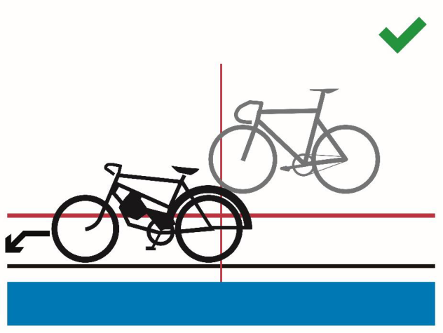
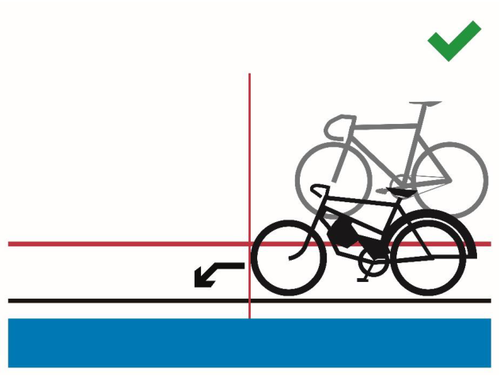
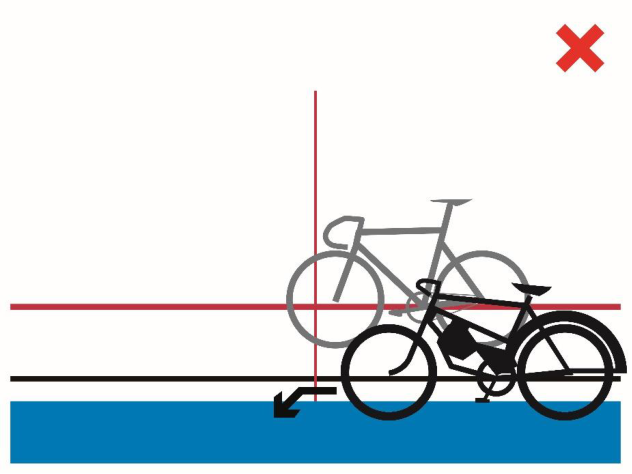
Figure 1
Figure 2
Figure 3
E0726
34
TRACK RACES
-
3.2.141 The race shall be run according to the Sprint Regulations.
-
3.2.142 The race will be stopped if one or more riders are at fault or behave in an unsporting manner while being placed behind the derny. The race will be rerun without the rider(s) at fault, which will be penalised depending on the gravity of the situation (relegation with a warning, or disqualification).
(text modified on 20.09.05; 19.06.09, 12.06.20)
- 3.2.143 A restart will take place immediately if a recognised mishap occurs within the first halflap. After the first half-lap no mishap will be taken into consideration.
(text modified on 01.01.02; 20.09.05; 04.03.19; 01.01.26)
Race stoppages
3.2.143 In the case the event is stopped for any reason, and it is not possible to restart and bis complete the event before the end of the competition, the commissaires’ panel shall decide pursuant to the table below:
| DEC | ISIONS |
|---|---|
| Interrupted before completion of the qualification round, 1/4 finals, 1/2 finals |
Interrupted after completion of the qualification round, 1/4 finals, 1/2 finals, but before completion of the finals |
| *if applicable | *if applicable |
| No final classification. No results will be submitted and no UCI points will be awarded. |
The last available position in the respective finals is attributed to the riders who qualified for the finals |
(article introduced on 01.01.25)
§ 9 Team Sprint
(text modified on 01.01.02)
Definition
- 3.2.144 The Team Sprint is a race with two opposing teams, each of whose riders shall lead for one lap.
The event is run over three laps of a track by teams of three riders.
(text modified on 01.01.02; 19.09.06; 12.06.20)
- 3.2.144 In the qualifying round, teams shall ride against the clock. bis Depending on the number of entered teams, the commissaires’ panel may decide to run qualifying rounds with two teams in each heat .
(article introduced on 21.06.18)
Organisation of the event
- 3.2.145 This event shall be organised in three phases at World Cup, Continental Championships, World Championships and Olympic Games:
E0726
35
TRACK RACES
-
The qualifying round to select the 8 best teams on the basis of their times;
-
In the first round, the 8 best teams shall be matched as follows: The team having obtained the 4th fastest time against the one having obtained the 5th fastest time
-
The team having obtained the 3rd fastest time against the one having obtained the 6th fastest time
-
The team having obtained the 2nd fastest time against the one having obtained the 7th fastest time
-
The team having obtained the fastest time against the one having obtained the 8th fastest time.
-
The finals The four winning teams from the first round shall dispute the finals. The teams having made the two best times shall ride the final for first and second places and the other two teams shall ride the final for third and fourth places.
Teams beaten during the first round shall be placed fifth to eighth according to their times from the first round.
Should there be less than 8 teams taking part in the event, the event shall be run as follows:
| 7 teams | 6 teams | 5 teams | 4 or less teams |
|---|---|---|---|
| Qualifyinground | Qualifyinground | Qualifyinground | |
| First round, based on the results of the qualifying round: a. 4thagainst 5th b. 3rdagainst 6th c. 2ndagainst 7th d. 1stalone |
First round, based on the results of the qualifying round: a. 4thagainst 6th b. 3rdagainst 5th c. 2ndalone d. 1stalone |
First round, based on the results of the qualifying round: a. 4thagainst 5th b. 3rdalone c. 2ndalone d. 1stalone |
Qualifying round (no first round) |
| Final: Winners of each heat of the first round (4 teams) |
Final: Winners of each heat of the first round (4 teams) |
Final: Winners of each heat of the first round (4 teams) |
Final: 4 best teams of the qualifying round |
(text modified on 01.01.02; 14.10.16, 01.08.23; 01.01.26)
- 3.2.146 At the Olympic Games only: The four losing teams from the first round shall dispute the finals for 5th to 8th place. The teams having made the 5th and 6th fastest time shall ride the final for 5th and 6th and the other two teams shall ride the final for 7th and 8th.
(article introduced on 26.06.07; modified on 14.10.16)
-
3.2.147 In case of a draw, the best time made during the last lap shall decide.
-
3.2.148 If a team declares forfeit in a final, it shall not be replaced. The other team shall be declared the winner.
E0726
36
TRACK RACES
If the reason for which that team did not ride is not accepted, the absent team shall be disqualified.
(text modified on 01.01.02)
- 3.2.148 If a team fails to take the start in the first round, no substitution shall be bis made. The team failing to start shall be classified in 8th place.
If several teams fail to start, they shall be classified in 8th place and above in order of their times in the qualifying round. If the reason for failing to ride is not accepted by the commissaires’ panel, the absent team shall be disqualified, and its place shall remain vacant. The team that takes the start must ride alone to set a time to determine the composition of the finals.
(article introduced on 01.10.11)
- 3.2.149 Teams shall be made up of riders entered for this event. The composition of a team may be modified from one round to another. An incomplete team may not take the start.
The team manager must notify the commissaires of any changes at least 30 minutes before the relevant competition round start.
(text modified on 01.01.02; 30.09.10, 01.08.23)
Preparation of the track
- 3.2.149 [abrogated on 01.08.23] bis
Race procedure
- 3.2.150 The start shall be taken in the middle of each straight. During the qualifying round, the place of each team shall be determined by the commissaires. Subsequently, the team having made the best time in the preceding stage of the event, shall start in front of the main grandstand.
(text modified on 01.08.23)
- 3.2.151 The riders of each team shall start side by side behind the start line. The lateral distance between riders shall be 1.5 metres.
(N) The rider, placed on the inside of the track, shall be held by a starting block and shall be the leading rider.
(text modified on 01.01.02; 26.08.04; 10.06.05; 03.03.14)
- 3.2.152 The leading rider shall lead the first lap and move towards the outside of the track and then drop back to leave the track without hindering the other team.
The rider that was in second position shall lead the following lap and then he shall drop out in the same manner.
The third rider shall end the last lap alone.
(text modified on 19.09.06; 04.03.19; 12.06.20)
E0726
37
TRACK RACES
- 3.2.153 At the completion of his lap, the leading edge of the leading rider’s front wheel must cross the pursuit line ahead of the leading edge of the front wheel of the following rider. Thereafter, the leading rider must draw aside immediately and ride above the sprinter’s line no later than within 15 meters after the pursuit line.
Pushing between members of the same team is strictly forbidden.
If there is doubt that the above requirements have been met, a review of available information is to be made. If confirmed, the team shall be relegated to the last place in that stage of the event.
(text modified on 01.01.02; 01.10.12; 14.10.16)
E0726
38
TRACK RACES
Race stoppages
3.2.153 In the case the event is stopped for any reason, and it is not possible to restart and bis complete the event before the end of the competition, the commissaires’ panel shall decide pursuant to the table below:
| DECISIONS |
||
|---|---|---|
| Interrupted before completion of the qualification round |
Interrupted after completion of the qualification round, before completion of the First round |
Interruption after the completion of the First round |
| No final classification. No results will be submitted and no UCI points will be awarded. |
Classification according to the results from the qualification round |
Riders qualified for the gold medal final will be awarded 2nd place, and riders qualified for the bronze medal final will be awarded 4thplace. All other riders will be ranked according to the rules applicable for this event |
(article introduced on 01.01.25)
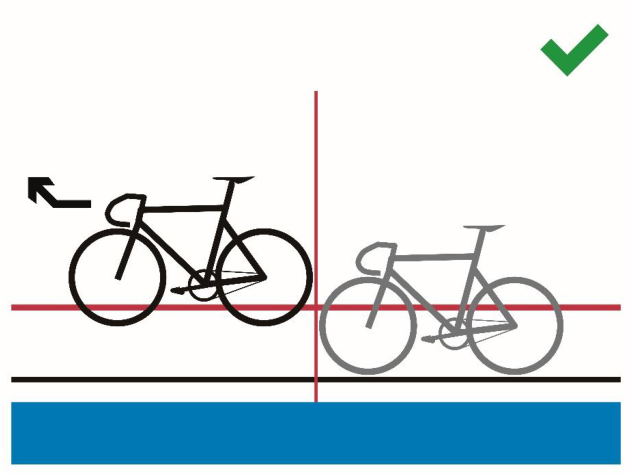
Figure 1
E0726
39
TRACK RACES
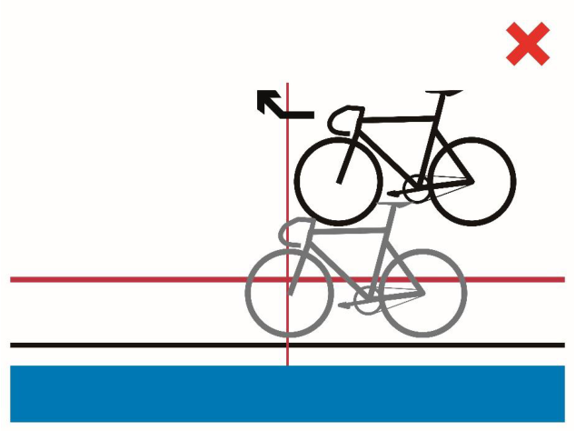
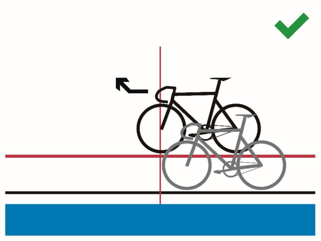
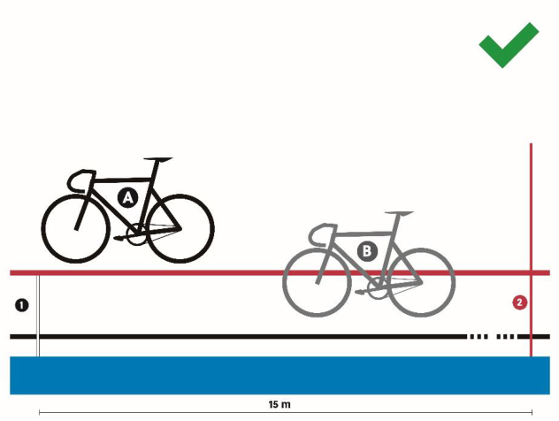
Figure 2
Figure 3
Figure 4
E0726
40
TRACK RACES
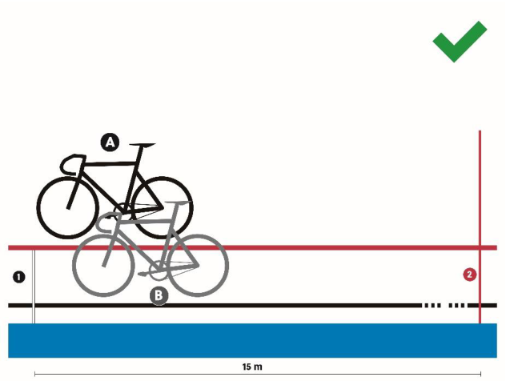
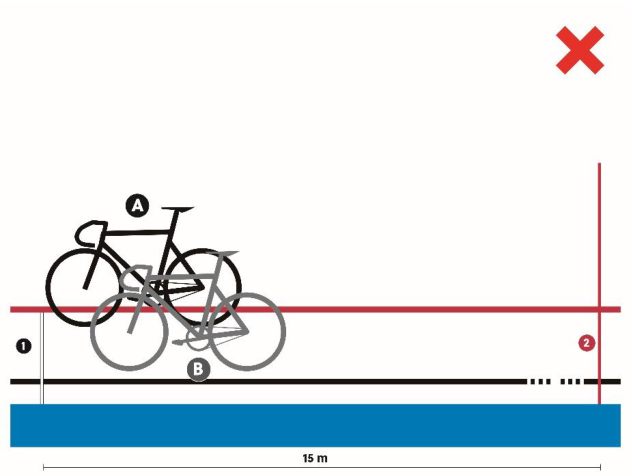
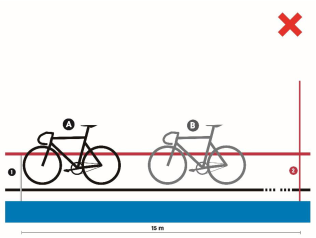
Figure 5
Figure 6
Figure 7
E0726
41
TRACK RACES
Mishap
(section subject to article 3.2.021ter)
- 3.2.154 Qualifying round: In the event of a recognised mishap, the team must restart at the end of the qualifying round. Any team which may have been hindered by a mishap to its opponents may, by decision of the commissaires' panel, be granted a restart at the end of the qualifying round.
(text modified on 01.01.02; 04.03.19, 01.08.23)
- 3.2.155 First round and finals: In the event of a recognised mishap, the race shall be stopped and restarted immediately.
After the first half-lap no mishap will be taken into consideration. In such a case, the team must stop and will be:
-
relegated and placed last as per article 3.3.012 in the first round;
-
considered beaten in finals.
(text modified on 01.01.02; 26.08.04; 26.06.07; 04.03.19; 12.06.20, 01.08.23)
§ 10 Madison
Definition
- 3.2.156 The Madison Race is an event involving teams of 2 riders, in which the final placings are determined according to the accumulated points won by teams during the sprints and by taking laps.
(text modified on 01.01.02; 14.10.16; 04.03.19; 01.10.19)
Organisation of the event
- 3.2.157 If the number of teams entered exceeds the track limit, qualifying heats shall take place according to the tables below. The heats shall be run in such a way as to qualify up to the track maximum number of teams, without necessarily qualifying the maximum number of teams permitted. An equal number of teams shall be eliminated from each heat, at a minimum of 2 teams per heat, among the teams who have started the race.
The event shall be held over at least the following distances (number of laps), and number of sprints as shown in the following table:
| TRACK | ME | N ELITE | WO | MEN ELIT | E | ME | N JUNIO | R | WOM | EN JUN | IOR | ||
|---|---|---|---|---|---|---|---|---|---|---|---|---|---|
| LENGTH (in m) |
Event | Distance (km) |
Laps | Sprint | Distance (km) |
Laps | Sprints | Distance (km) |
Laps | Sprints | Distance (km) |
Laps | Sprints |
| 166 | Qualif | 15 | 90 | 9 | 10 | 60 | 6 | 10 | 60 | 6 | 10 | 60 | 6 |
| Final | 30 | 180 | 18 | 20 | 120 | 12 | 20 | 120 | 12 | 15 | 90 | 9 | |
| 200 | Qualif | 14 | 70 | 7 | 10 | 50 | 5 | 10 | 50 | 5 | 8 | 40 | 4 |
| Final | 30 | 150 | 15 | 20 | 100 | 10 | 20 | 100 | 10 | 16 | 80 | 8 | |
| 250 | Qualif | 15 | 60 | 6 | 10 | 40 | 4 | 10 | 40 | 4 | 10 | 40 | 4 |
| Final | 30 | 120 | 12 | 20 | 80 | 8 | 20 | 80 | 8 | 15 | 60 | 6 |
E0726
42
TRACK RACES
| 285.714 | Qualif | 16 | 56 | 5 | 12 | 42 | 4 | 12 | 42 | 4 | 10 | 35 | 3 |
|---|---|---|---|---|---|---|---|---|---|---|---|---|---|
| Final | 30 | 105 | 10 | 20 | 70 | 7 | 20 | 70 | 7 | 16 | 56 | 5 | |
| 333.33 | Qualif | 14 | 42 | 8 | 10 | 30 | 6 | 10 | 30 | 6 | 10 | 30 | 6 |
| Final | 30 | 90 | 18 | 20 | 60 | 12 | 20 | 60 | 12 | 16 | 48 | 9 | |
| 400 | Qualif | 14 | 35 | 7 | 10 | 25 | 5 | 10 | 25 | 5 | 8 | 20 | 4 |
| Final | 30 | 75 | 15 | 20 | 50 | 10 | 20 | 50 | 10 | 16 | 40 | 8 |
At World Cup, Continental Championships, World Championships and Olympic Games, the distances, number of laps and number of sprints shall be as shown in the following table:
| TRACK LENGTH |
Event | M Distance |
EN ELIT | E | WO Distance |
MEN ELI | TE | ME Distance |
N JUNIO | R | WO Distanc |
MEN JU | NIOR |
|---|---|---|---|---|---|---|---|---|---|---|---|---|---|
| (in m) | (km) |
Laps | Sprints | (km) |
Laps | Sprints | (km) |
Laps | Sprints | e (km) | Laps | Sprints | |
| 200 | Qualif. | 25 | 125 | 12 | 15 | 75 | 7 | 15 | 75 | 7 | 10 | 50 | 5 |
| Final | 50 | 250 | 25 | 30 | 150 | 15 | 30 | 150 | 15 | 20 | 100 | 10 | |
| 250 | Qualif. | 25 | 100 | 10 | 15 | 60 | 6 | 15 | 60 | 6 | 10 | 40 | 4 |
| Final | 50 | 200 | 20 | 30 | 120 | 12 | 30 | 120 | 12 | 20 | 80 | 8 | |
| 285714 | Qualif. | 25.1 | 88 | 8 | 15.1 | 53 | 5 | 15.1 | 53 | 5 | 10 | 35 | 3 |
| . | Final | 50 | 175 | 17 | 30 | 105 | 10 | 30 | 105 | 10 | 20 | 70 | 7 |
| 33333 | Qualif. | 25 | 75 | 15 | 14 | 42 | 8 | 14 | 42 | 8 | 10 | 30 | 6 |
| . | Final | 50 | 150 | 30 | 30 | 90 | 18 | 30 | 90 | 18 | 20 | 60 | 12 |
| 400 | Qualif. | 26 | 65 | 12 | 14 | 35 | 7 | 14 | 35 | 7 | 10 | 25 | 5 |
| Final | 50 | 125 | 25 | 30 | 75 | 15 | 30 | 75 | 15 | 20 | 50 | 10 |
There shall be an equal number of laps between all sprints, starting from the final sprint, according to the following: Tracks of less than 333.33m – 10 laps Tracks of 333.3m or more – 5 laps
In the case where the total number of laps is not divisible by the indicated number of laps between sprints, the “additional” laps shall be ridden prior to the first sprint. (For example, on a 285.7m track, sprints are held every 10 laps. If the race is 56 laps, the first sprint will take place after 16 laps, and then every 10 laps thereafter).
(text modified on 01.01.02; 30.03.09; 01.07.17; 04.03.19; 01.10.19; 17.10.22, 01.08.23; 01.01.25)
-
3.2.158 The two riders of each team shall carry the same rider number but of different colours.
-
3.2.159 [article abrogated on 01.08.23]
-
3.2.160
-
[article transferred to article 3.2.157 on 01.10.19]
-
3.2.161 The first team in each intermediate sprint shall be awarded 5 points, the second 3 points, the third 2 points and the fourth one point. Points awarded in the last sprint after the full distance will be doubled (10 points, 6 points, 4 points, 2 points).
In the case of a tie in the sprint, the teams shall be awarded the same position, with the corresponding points for that position (for example, if two teams tie for first in a
E0726
43
TRACK RACES
points sprint, they will both score 5 points; there will not be a second place in this case).
If a relay between two teammates takes place on the line during a sprint, the front wheel of the second rider will count.
The relay is considered as passed, as soon as both riders are no longer in contact.
(text modified on 01.01.02; 14.10.16; 12.06.20; 17.10.2022, 01.08.23)
- 3.2.162 Where there is a draw on
points, the places in the final sprint shall decide.
Any team that gains a lap is awarded 20 points.
Any team that loses a lap is deducted 20 points.
(text modified on 01.01.02; 26.08.04; 14.10.16; 01.10.19)
Race procedure
3.2.163 A first group of riders, formed of one rider of each team, take their places at the start in the order listed on the start list. Half of this group shall be lined up along the outside balustrade and the other half shall be lined up in the sprinters’ lane with holders.
A second group of riders, formed of the other riders of each team, shall be lined up along the opposite outside balustrade.
A flying start shall be taken by the first group of riders after one neutralised lap. During the neutralised lap, the second group of riders must remain motionless.
(text modified on 01.01.02; 19.06.09; 04.03.19; 01.10.19)
-
3.2.164 Riders of a same team may relay one another at will by a touch of the hand or the shorts.
-
3.2.165 Sprints shall be run according to the Regulations governing Sprint.
-
3.2.166 A rider who drops behind the bunch shall not assist chasing rider(s) to gain a lap on the pain of disqualification of his team.
(text modified on 01.01.02; 01.10.19)
- 3.2.167 When the bell is rung by the commissaire, the head of the race is defined and decisive for the awarding of the sprint points. If at the moment of a sprint considered for classification, if one or some rider(s) gain a lap, this/these rider(s) shall be awarded 20 points and the points awarded for the sprint.
(text modified on 01.01.02; 01.10.19; 17.10.22, 01.08.23)
- 3.2.168 Teams lapped one or several times may be removed by the commissaires’ panel.
(text modified on 01.01.02; 01.10.19)
Mishaps
- 3.2.169 Should one of the riders suffer a recognised mishap, his teammate shall immediately take the team position in the race. There shall be no neutralisation.
E0726
TRACK RACES
44
(text modified on 01.10.19)
-
3.2.170 [article transferred to article 3.2.020bis on 04.03.19]
-
3.2.171 [article transferred to article 3.2.172 on 01.08.23]
3.2.172 If the race is stopped for any reason, including if more than half the teams fall (calculated on the basis of one rider per team), the commissaires’ panel shall determine the duration of the interruption. If the race is restarted in the same session, it shall be restarted as follows:
-
The teams will restart with their already accumulated points (or laps depending on the type of race).
-
The number of laps remaining in the race shall be adjusted to indicate the number following the previously held sprint (for example, if the previously held sprint was on 40 laps remaining, and the race was stopped with 33 laps remaining, the race shall be restarted with 39 laps remaining);
-
The restart will be held as for a normal Madison race start. No account shall be taken of any team who were off the front or back of the main bunch at the time the race was stopped. The racing riders shall start as a single group.
If it is not possible to restart the race in the same session, the commissaires’ panel shall decide pursuant to the table below:
| DECISIONS |
|
|---|---|
| Race stopped before 40% | Complete rerun |
| Race stopped between 40-80% | Resume race with points accumulated/lost |
| Race stopped after 80% | Let results stand |
If less than 80% of the race is completed by the end of the competition, there will be no final classification. No results will be submitted and no UCI points will be awarded.
(text modified on 01.01.03; 14.10.16, 01.08.23, 01.01.25)
§ 11 Scratch Race
Definition
- 3.2.173 The Scratch Race is an individual race over a specified distance.
(text modified on 01.01.02)
Organisation of event
3.2.174 The races shall be held over the following distances: Men Elite & Women Elite 10 km Men Junior & Women Junior 7.5 km
(text modified on 01.01.02, 01.01.25)
- 3.2.175 If the number or riders entered exceeds the track limit, qualifying heats shall take place to reduce the number of riders according to the table below. The heats shall be run in such a way as to qualify up to the track maximum number of riders, without
E0726
TRACK RACES
45
necessarily qualifying the maximum number of riders permitted. An equal number of riders shall be eliminated from each heat, at a minimum of 2 riders per heat, among the riders who have started the race.
| CATEGORY | DISTANCE TO RUN |
|---|---|
| MEN ELITE & WOMEN ELITE | 7.5 km |
| MEN & WOMEN JUNIOR | 5 km |
(text modified on 01.01.02; 01.01.03; 12.06.20, 01.01.25)
Race procedure
- 3.2.176 Before the start, half of the riders shall be lined up along the railings, the other half lining up in single file in the sprinter’s lane.
A flying start shall be taken after one neutralised lap.
(text modified on 01.01.02)
-
3.2.177
-
Riders overtaken by the main bunch shall immediately leave the track.
-
3.2.178 The final placings are determined during the final sprint, taking into account laps gained.
(text modified on 01.01.02; 01.01.03)
-
3.2.179 [abrogated on 01.01.02]
-
3.2.180 [article transferred to article 3.2.002 on 04.03.19]
-
3.2.181
-
[article transferred to article 3.2.017 on 04.03.19]
Mishaps
- 3.2.182 Any rider not ending the race will not be placed.
(text modified on 26.08.04; 20.09.05; 30.09.10; 04.03.19)
3.2.183 If the race is stopped for any reason, the commissaires’ panel shall determine the duration of the interruption. If the race is restarted in the same competition session, it shall be restarted as follows:
-
The riders will restart with their already gained or lost laps;
-
The number of laps remaining in the race shall be as at the time the race was stopped (for example, if the race was stopped with 15 laps remaining, the race shall be restarted with 15 laps remaining). If fewer than 10 laps were remaining when the race was stopped, the number of laps remaining in the race shall be adjusted to indicated 10 laps remaining (for example, if the race was stopped with 4 laps remaining, the race shall be restarted with 10 laps remaining);
-
All riders will start together in a single group. In exceptional cases, the commissaire’s panel may decide to allow riders who were more than a half lap ahead of the declared main bunch to start a half lap ahead of the remaining riders on the track.
If it is not possible to restart the race in the same competition session, the race shall be completely rerun.
(text modified on 01.08.23)
E0726
46
TRACK RACES
§ 12 Tandem
Definition
-
3.2.184 The «tandem» speciality shall be a «sprint» event for tandems. It shall be run according to the rules applicable to the «sprint» event, except as stipulated below.
-
3.2.184 The start shall be taken from the Pursuit line in the finishing straight. bis
-
(article introduced on 01.08.23)
Organisation of the event
-
3.2.185 Each pair of riders shall be considered a single participant.
-
3.2.186 The races shall be run as shown in the table in Article 3.2.050 according to the number of participants and by calculating from the final.
-
Nevertheless, on tracks of 333.33 metres or less, a heat shall be ridden with a maximum of three tandems.
-
3.2.187 The qualifying heats shall be run over one lap with a flying start.
-
3.2.188 The race shall be run over the distance of 3 laps.
(text modified on 01.08.23)
§ 13 Motor-Pacing
Definition
- 3.2.189 Motor-Pacing is a race in which each rider rides behind a motorcycle-mounted pacer.
Motorcycles and pacers
-
3.2.190 The Federation of the organiser shall provide ten motorbikes (of which two in reserve) complying with the description given in articles 3.6.007 to 3.6.028. The reserve motorcycles shall be used by any pacer or pacers whose motorcycle breaks down.
-
3.2.191 The commissaires shall check the motorcycles, if necessary, with the help of a technician experienced in this type of work.
-
3.2.192 The check shall take place at the time indicated by the commissaires’ panel before each race.
-
3.2.193 After having been checked, the motorcycles shall be deposited in a locked enclosure, the keys of which shall be held by one of the commissaires. The motorcycles shall not be entrusted to the pacers until they are about to go on track.
-
3.2.194 Between two such checks, each pacer shall always use the same motorcycle.
-
3.2.195 Pacers shall hold a licence. Pacers shall present a medical certificate to participate in international competitions and shall not be aged older than 65 years old.
(text modified on 04.03.19)
E0726
TRACK RACES
47
- 3.2.196 The Chief Commissaire shall designate two reserve pacers. These pacers, throughout the races, shall stand by ready to start up the reserve motorbikes if one of the machines in the race should break down.
Organisation of the event
- 3.2.197 Pacing races may be held either over a set time (1 hour) or a set distance.
(text modified on 04.03.19)
-
3.2.198 All the heats shall be run the same day.
-
3.2.199 The commissaires shall make up a number of heats according to the number of riders entered for the speciality.
-
There shall be at least two heats and each heat shall involve a maximum of 8 riders.
If there are two heats, the first three of each heat plus the fourth of the faster heat shall qualify for the final.
- If there are three heats, the first two of each heat plus the third of the fastest heat shall qualify for the final.
If there are four or more heats, the winner of each heat plus the second of the fastest heats shall qualify in such a way that there be seven riders in the final.
-
3.2.200 [abrogated on 04.03.19]
-
3.2.201 If a final is conducted in heats, the organiser shall set a rule how the general classification will be established. If such a rule is missing, it is up to the commissaires’ panel to set the rule before the start of the races.
(text modified on 04.03.19)
- 3.2.202 [abrogated on 04.03.19]
Race procedure
-
3.2.203 [abrogated on 04.03.19]
-
3.2.204 Riding outside the demarcation line, while being challenged, shall be forbidden. Should a rider do so, his opponents may not pass him on the inside or they will be disqualified.
(text modified on 04.03.19)
-
3.2.205 A challenging rider may ride beyond the demarcation line only to come up on the right of the rider he is challenging, but at all times leaving a maximum of space to allow other riders to challenge also from the right.
-
3.2.206 The position of riders at the start of each heat and the allocation of motorcycles shall be determined by the drawing of lots on the track itself.
The starting position for the first heat of the final shall also be determined by drawing lots on the track itself. The position at the start of the second heat shall be the reverse of that in the first heat.
E0726
48
TRACK RACES
-
3.2.207 Each rider shall have the same pacer throughout the entire competition.
-
3.2.208 The pacers shall enter the track without the riders. On a signal from the starter, the pacers, after a few laps to warm up, shall take up their positions at the start.
-
3.2.209 The riders shall be lined up at the start in a set order.
-
3.2.210 The start of the race shall be given by a pistol shot. After one lap, the riders shall have fallen in behind their pacers.
-
3.2.211 A bell shall indicate the last lap of the leading rider. The placing shall be determined by the order in which the riders cross the finishing line and by the number of laps covered, it being understood that, once the winner has crossed the finishing line, the other riders shall cross it once only.
-
3.2.212 [abrogated on 04.03.19]
-
3.2.213 Once a rider has dropped a lap of behind the leading rider, he may no longer react to an attack from another rider who is more than one lap ahead, on pain of being eliminated from the race after a single warning.
(text modified on 04.03.19)
- 3.2.214 Any rider falling more than 5 laps behind the leading rider shall be eliminated.
E0726
49
TRACK RACES
- 3.2.215 Pacers committing the following faults shall be punished as follows
| Penalty | F | lag | Degree | ||
|---|---|---|---|---|---|
| warni | ng | gr | een | A | |
| fine o | f CHF 500 | green a | nd yellow | B | |
| fine o | f CHF 750-and 15-days’suspension | ye | llow | C | |
| fine o | f CHF 1,000 and 1 to 3 months’suspension | r | ed | D | |
| Infrin | gement: | 1st | 2nd | 3rd | 4th |
| 1) | Riding above the stayers’ line with an opponent at less than 10 meters |
A | B | C | D |
| 2) | Riding above the stayers’ line when being challenged |
B | C | D | |
| 3) | Riding above the stayers’ line with an opponent along side |
B | C | D | |
| 4) | Infringement (1), committed by a rider being overtaken |
B | C | D | |
| 5) | Infringements (2) or (3), committed by a rider being overtaken |
C | D | ||
| 6) | Crowding to the railing while being challenged by an opponent |
B | C | D | |
| 7) | Crowding to the railing while being challenged by two opponents |
C | D | ||
| 8) | Dropping back down with less than a 5 meter lead (cutting in) |
C | D | ||
| 9) | Attempt to pass four abreast | D | |||
| 10) | Overtaking on the inside | D | |||
| 11) | Riding with only one hand on the handlebar | A | B | C | D |
3.2.216 In the case of a motorcycle breakdown or recognised mishap before the riders join their pacers, a false start shall be indicated, and the race shall be restarted.
Should the same thing happen after the riders have joined their pacers, a neutralisation shall be granted for the number of laps closest to 1500 metres, save during the last 1500 metres or the last minutes of time races, in which case the race shall continue. The rider having suffered the mishap shall be placed in the position he held at the time of the mishap, if the commissaires consider that his result was a foregone conclusion. If that is not the case, he shall be placed last amongst riders who have ridden the same numbers of laps at the moment of the mishap.
(text modified on 04.03.19)
3.2.217 If the track becomes impracticable, the race shall be entirely restarted except if it is stopped during the two last kilometres or, the two last minute in time races. In that case, the riders shall be placed according to their positions when they last crossed the finishing line.
(text modified on 04.03.19)
E0726
50
TRACK RACES
§ 14 Elimination Race
Definition
- 3.2.218 The Elimination Race is an individual race in which the last rider in each intermediate sprint is eliminated.
Organisation of the event
- 3.2.219 The organisation of the event shall be governed by the specific race regulations. If the number of riders exceed the track limit, qualifying heats shall take place to reduce the number of riders. All riders entered shall first participate in qualifying Scratch Race heats run over the distance as per the regulations for Scratch Race heats. The heats shall be run in such a way so as to qualify up to the track maximum number of riders, without necessarily qualifying the maximum number of riders permitted. An equal number of riders shall be eliminated from each heat, at a minimum of 2 riders per heat, among the riders who have started the race.
All riders not qualifying to participate in the final of the Elimination Race shall be placed jointly in last position. Any riders not finishing any of the qualifying rounds shall not be placed (DNF).
(text modified on 12.06.20, 01.08.23)
Race procedure
- 3.2.220 Before the start, half of the riders shall be lined up along the railings, the other half lining up in single file in the sprinter’s lane.
(text modified on 29.01.10)
-
3.2.221 A flying start shall be taken after one neutralised lap during which the riders shall ride in a compact group at a moderate speed.
-
3.2.222 A sprint shall be run every third lap on tracks of less than 200 metres, every second lap on tracks of 200 metres to less than 333.33 metres, and every lap on tracks of 333.33 metres or more.
On tracks of less than 333.33 metres, each lap that precedes the sprint shall be indicated by a bell.
(article modified on 01.10.19)
- 3.2.223 After each sprint the last rider, according to the position of his rear wheel on the finishing line, shall be eliminated.
If one or more riders are lapped or abandon the race between sprints, they shall be the riders eliminated in the next sprint.
In certain cases, the commissaires may decide to eliminate a rider other than the last rider in the sprint (for example, if a rider passes on the blue band). The president of the commissaires’ panel shall be responsible for making the final decision on who will be eliminated based on information from the judge-referee and other commissaires.
In all cases, the decision on which riders shall be eliminated must be made and announced prior to the riders crossing the pursuit line on the back straight after the elimination sprint. If no decision can be made by this time, then no riders shall be eliminated until the next sprint. This shall be indicated by a green flag on the start line.
E0726
51
TRACK RACES
An eliminated rider shall leave the track immediately, failing which he shall be penalised depending on the gravity of the situation (relegation with a warning, or disqualification). In the case where the rider does not leave the track immediately, the president of the commissaires’ panel may decide to neutralise the race in order to remove the rider.
(text modified on 18.06.10; 30.09.10; 01.10.11; 21.06.18; 12.06.20)
- 3.2.223 Riders eliminated shall be placed in inverse order according to the time of their bis elimination (for example, the first rider eliminated is placed last, the second rider eliminated is places second last, etc).
(article introduced on 18.06.10)
-
3.2.224 The last two riders remaining in the race shall ride the final sprint. Their placing shall be based on the position of their front wheels on the finishing line.
-
3.2.225 The fact that a rider may gain a lap shall not count.
-
3.2.226 In the case of a recognized mishap by one or more riders, as decided by the president of the commissaires’ panel, the race shall immediately be neutralized for a maximum distance of the number of laps closest to 1250 metres to allow the affected riders to return to the bunch. In the case where all riders on the track suffer a recognized mishap, the race shall be neutralized for a maximum of 3 minutes to allow the affected riders to return to the race.
The neutralization shall be indicated by a yellow flag on the start line and all riders on the track shall ride in a compact group at a moderate speed. No account shall be taken of the position of any riders off the front or back of the bunch at the time of the mishap.
The race shall be restarted, when affected riders are back on the track or when the neutralisation is over, by the withdrawal of the yellow flag and the firing of the starter’s pistol. Any riders not able to rejoin the race at this point shall be considered as eliminated and their position determined according to the time of their elimination. The bell shall be rung the following lap to indicate the start of a sprint lap.
Except in the case when all riders on the track suffer a recognized mishap, once four or fewer riders remain on the track, no neutralization shall be granted, and any riders not finishing shall be eliminated and their position determined according to the time of their elimination.
(text modified on 18.06.10; 30.09.10; 04.03.19; 12.06.20)
- 3.2.226 [article transferred to article 3.2.002 on 04.03.19] bis
E0726
52
TRACK RACES
§ 15 Six-Day Races
-
3.2.227 [abrogated on 01.01.25]
-
3.2.228 The organiser shall be free to set the duration and the programme of the “Six-Day Race” within the limits set in the articles of this section.
(text modified on 01.01.04; 01.01.25)
-
3.2.229 The “Six-Day Race” is a team race, each team comprising 2 or 3 riders who shall all wear jerseys bearing identical riders’ number as indicated in article 1.3.044.
-
3.2.230 A “Six-Day Race” shall be run on a track of minimum length 140 m.
-
3.2.231 The organiser shall determine the number of teams according to the track length.
-
3.2.232 At the start of Madisons/chases (handicap races excepted), the illuminated indicator panel shall be set to zero (0) for all teams.
-
After the end of the Madisons/chases, the illuminated indicator panel shall again show the actual general placings for the race.
On the last day of race, when the final Madisons/chases is being run, the illuminated indicator panel shall indicate the actual general placings at all times.
(text modified on 01.01.04)
-
3.2.233 [abrogated on 01.01.2004]
-
3.2.234 Should a mechanical mishap occur and be recognised as valid by the commissaires, or should a rider fall, the team shall be entitled to a of the number of laps closest to 1250 metres (5 laps on a 250m-track). In the case of a mishap not recognized by commissaires or on expiry of the neutralisation, one of the team members shall resume the race 100% from the position occupied at the moment of the mishap, failing which the team shall be penalised by the number of laps lost.
(text modified on 01.01.04; 04.03.19)
-
3.2.235 Laps gained by a team, one of whose members has been neutralised, shall be recognised only if the rider who remained in the race covers the full distance, i.e. does not miss a single relay.
-
3.2.236 During a timed Madison/chase, a team reduced to a single rider shall leave the track 10 laps before the end of the Madison/chase.
(text modified on 01.01.04)
- 3.2.237 The Track Manager, with the agreement of the Commissaires’ Panel, shall be entitled to create a temporary team comprising riders whose teammates have been neutralised. Such riders shall wear identical jerseys and numbers. To determine the provisional position of such a provisional team, the number of laps covered by each of the original teams from which the members of the provisional team were drawn shall be added, rounded down to the nearest even number and divided by two.
E0726
53
TRACK RACES
When the provisional team is finally disbanded, laps gained or lost and any points won shall be credited towards the general placings of the original teams from which each of the members of the provisional team were drawn.
- 3.2.238 If a rider is neutralised, his teammate shall continue the ongoing chase according to the articles 3.2.235 and 3.2.236. If the neutralised rider is unable to continue the following chase, all the team shall be neutralised.
After the chase, the neutralised team shall be placed in the same position as the closest team in the general classification at the beginning of the race, including the laps lost by this team during the chase. The gained laps shall not be considered.
Moreover, the neutralised team shall be penalised by one lap.
- 3.2.239 The race doctor may decide to neutralise a rider for a maximum period lasting until 36 hours, after which the rider shall be eliminated.
(text modified on 01.01.04)
-
3.2.240 Should a rider abandon the race, the team shall be disbanded. The remaining rider shall participate in all the individual events.
-
If he has not been included in another team within 48 hours, he shall be eliminated.
-
3.2.241 Should a new team be created, account shall be taken of the placing of the best team disbanded plus one lap’s penalty.
The points won by the two teams will be added and divided by two.
-
3.2.242 Points shall be awarded as follows:
-
Team event; Madison, Madison-Elimination, Team Time Trial (500-1000 m): 20, 12, 10, 8, 6, 4 points
-
Individual event; Points race, Elimination, Time Trial (1 lap), Derny, Scratch, Keirin: 10, 6, 5, 4, 3, 2 points
-
Sprint: 5, 3, 2, 1 points; points double during the final Madison (maximum 6, every 10 laps).
(text modified on 10.06.05; 25.09.07)
-
3.2.243 As it is impossible to run all teams on track together for the same race, the event has to be run in heats. The following procedure shall then apply:
-
a) 1 heat with teams from the 1st half of the general classification: with 1 rider or per team: 10-8-6-4-2 points.
-
per team (one relay in mid-race): 10, 8, 6, 4, 2 points
-
Madison: 15, 10, 8, 6, 4, 2 points
-
1 heat with teams from the 2nd half of the general classification: with 1 rider or per team: 10-8-6-4-2 points.
-
per team (one relay in mid-race): 10, 8, 6, 4, 2 points
-
Madison: 15, 10, 8, 6, 4, 2 points.
-
-
b) 2 heats with teams from the 1st half of the general classification: with 1 rider: 5- 4-3-2-1 points.
- 2 heats with teams from the 2nd half of the general classification: with 1 rider: 5- 4-3-2-1 points.
Laps won in races behind dernys do not count for the overall ranking.
E0726
TRACK RACES
54
(text modified on 01.01.04)
-
3.2.244 In Madison/chase of the «Six-Day Race», the placing shall be determined by distance according to the number of complete laps covered by each team plus by accrued points.
-
Apart from the final Madison/chase of the «Six-Day Race», teams shall be credited with one bonus lap for every 100 points logged.
-
Bonus laps can also be given in special events like time-trials, but only if all teams are allowed to participate in the event.
(text modified on 01.01.04; 01.07.17)
- 3.2.245 All points won in the individual and team events shall count towards the general placings.
All laps won in races in which there is at least one rider of each team on track shall count towards general classification.
Laps won in Elimination races do not count for the overall ranking.
(text modified on 21.01.06)
- 3.2.246 Each day, in addition to the partial classification of the race or stage, a general classification shall also be prepared on the basis of the number of laps completed and points acquired.
The total distance covered over the six racing days, expressed in complete laps, and the total number of points obtained shall determine the final classification.
The points classification shall be used to classify teams with the same number of laps. The team with the greatest number of laps, regardless of the score obtained, shall be declared the winner.
To distinguish team with equal laps and equal points, account shall be taken of the finishing order of the teams in the final sprint.
§ 16
Omnium
(chapter introduced on 07.07.06)
Definition
3.2.247 The omnium is an event consisting of four races run with a maximum number of riders set by the track limit (article 3.1.009) which shall be held over one day in the following order:
- Scratch
10 km for Men Elite & Women Elite
-
7.5 km for Men Junior & Women Junior
-
Tempo Race 10 km for Men Elite & Women Elite 7.5 km for Men Junior & Women Junior
-
Elimination
-
Points Race
- 25 km for Men Elite
E0726
TRACK RACES
55
20 km for Women Elite 20 km for Men Junior 15 km for Women Junior
-
(text modified on 24.09.09; 29.03.10; 18.06.10; 01.02.11; 20.06.14; 14.10.16, 01.01.25)
-
3.2.247 In competitions for which the number or riders entered exceeds the track limit and bis there is no existing qualification system to establish the number of participating riders, their selection shall be determined as follows:
All riders entered shall first participate in Points Race qualifying heats run over the distance and with the number of sprints, specified in the first table of the article 3.2.117, which applies to qualifying heats of international competitions, regardless of the class of competition. The heats shall be run in such a way so as to qualify up to the track maximum number of riders, without necessarily qualifying the maximum number of riders permitted. An equal number of riders shall be eliminated from each heat, at a minimum of 2 riders per heat, among the riders who have started the race.
All riders not qualifying to participate in the Omnium shall be placed jointly in last position. Any riders not finishing any of the qualifying rounds for whatever reason shall not be placed.
(article introduced on 18.06.10, text modified on 01.08.23, 01.01.25, 01.01.26)
Organisation of the event
-
3.2.248 Whenever possible, there shall be an interval of at least 30 minutes between two events.
-
3.2.249
-
[abrogated on 01.01.26]
-
3.2.249 For all the races, riders shall be lined up in single file along the railing and in the bis sprinters lane in the order listed on the start list. For the Scratch Race, this order shall be based on the latest UCI Endurance Ranking. For the Points Race, Elimination, and Tempo Race, this order shall be based on the current intermediate Omnium classification.
(article introduced on 01.02.11; modified on 01.07.17; 01.10.17: 01.01.26)
Ranking
- 3.2.250 A full result shall be produced for the three events. For these three events, only, each winner shall be awarded 40 points, each second place shall be awarded 38 points, each third place shall be awarded 36 points, etc.
Riders ranked 21st and below shall each be awarded 1 point.
(text modified on 20.06.14; 14.10.16)
- 3.2.251 Prior to the start of the Points Race, a current ranking with the points totals shall be drawn up, and riders will start the Points Race with these points accrued over the first three events. Riders shall add to, and lose points from, their points totals based on laps gained and lost, and points won in sprints, during the Points Race.
E0726
56
TRACK RACES
Final overall Omnium ranking shall evolve through the Points Race.
The winner of the Omnium shall be the rider who has obtained the highest total of points.
(text modified on 20.06.14; 14.10.16)
3.2.251 Any rider failing to start in one of the events or abandoning any of the events shall not bis be allowed to continue in the Omnium and shall be recorded in the final classification, in accordance with article 3.3.012.
In the case of the Scratch Race and the Tempo Race, a rider losing two laps shall be withdrawn. That rider will be penalised with a deduction of 40 points in the classification of the Omnium and will be allocated the next available rank determined by the number of riders remaining on the track at this moment. If for any reason the rider is not withdrawn, they will be classified as though they had been at the point at which they lost their second lap (including the deduction of points).
(text modified on 18.06.10; 01.02.11; 20.06.14; 15.03.16; 01.10.19; 12.06.20, 01.08.23, 01.01.26)
3.2.251 In the case of the Scratch Race, any rider not finishing the race due to a fall in the ter final kilometre, or not being able to return to the track during the final kilometre, will be allocated the next available ranking (and points) after the riders who finished the race considering the laps taken and the number of riders remaining on the track at this moment.
(article introduced on 15.03.16; modified on 14.10.16; 01.07.17; 01.10.17; 12.06.20; 01.01.26)
- 3.2.252 In the event of a tie in the final ranking, the places in the final sprint of the last event, the Points Race shall break the tie.
(text modified on 20.06.14)
Race Stoppages
3.2.252 During the Omnium, in the case one of the races is stopped for any reason, and bis the omnium can’t be completed before the end of the competition, the commissaires shall decide as follow:
During the final Points Race, article 3.2.133 shall be applied. In the case where less than 80% of the distance of the Points Race has been completed, but cannot be restarted, the intermediate standings after the Elimination Race will become the final classification of the Omnium.
If the track becomes impracticable after the Elimination Race has been completed, but before the start of the final Points Race, the intermediate standings will become the final classification of the omnium.
If the track becomes impracticable before the Elimination Race has been completed, no final classification will be considered for the omnium. As a result, no results will be submitted and no UCI points will be awarded for the Omnium.
(article introduced on 01.01.25)
E0726
TRACK RACES
57
§ 17 Flying Lap
(chapter introduced on 29.01.10)
Definition
- 3.2.253 The flying lap is a race against the clock with a flying start from the finish line.
(text modified on 18.06.10; 01.07.12; 14.10.16)
Race Procedure
-
3.2.254 Riders shall take the start in the order determined by the commissaires.
-
3.2.255 The rider shall enter the track as soon as he has been passed by the previous rider who has triggered the timing device.
-
3.2.256 The distance to accomplish including the momentum and the lap of the track is fixed as follows, depending on the length of the track: track of 250 metres or shorter: 3.5 laps track of 285,714 metres: 3 laps track of 333,33 metres: 2.5 laps track of 400 metres or longer: 2 laps.
-
3.2.257 In case of tie, riders will be ranked according to the best times in the last 200 metres.
-
3.2.258 In case of a recognised mishap, the rider shall take a new start. Only one new start per rider is permitted.
(text modified on 01.08.23)
§ 18
Tempo Race
(chapter introduced on 14.10.16)
Definition
- 3.2.259 The Tempo Race is an event in which the final placings are determined according to accumulated points won by riders during the sprints and by taking laps.
Organisation of the event
- 3.2.260 Except for the specific details (even implicit) in this sub-section, the rules of the Points Race shall apply equally to the Tempo Race .
The races shall be held over the following distances: Men Elite & Women Elite 10 km Men Junior & Women Junior 7.5 km
(article modified on 01.10.19, 01.01.25)
-
3.2.261 After the first 4 laps, sprints shall be conducted every lap. After the completion of four laps, the bell will be rung to indicate the start of the sprint laps.
-
3.2.262 The first rider in each sprint shall be awarded 1 point, including for the final sprint.
Any rider that gains a lap is awarded 20 points.
Any rider that loses a lap is deducted 20 points.
E0726
58
TRACK RACES
(text modified on 28.02.17; 05.04.17; 01.10.19)
Race Procedure
-
3.2.263 Before the start, half of the riders shall be lined up along the railings, the other half lining up in single file in the sprinter’s lane.
-
3.2.264 A flying start shall be taken after one neutralised lap during which the riders shall ride in a compact group at a moderate speed.
-
3.2.265 If the race is stopped for any reason, including if more than half the riders fall, the commissaires’ panel shall determine the duration of the interruption. If the race is restarted in the same session of the competition, it shall be restarted as follows:
-
The riders will restart with their already accumulated points;
-
The number of laps remaining in the race shall be adjusted by adding 5 laps to the total being shown (for example, if the number of laps remaining was 11 when the race was stopped, the race shall be restarted with 16 laps remaining). If there were 5 or fewer laps remaining when the race was stopped, the race shall be restarted with 11 laps remaining;
-
The start will be held as for a normal Tempo Race. After the first 4 laps, sprint shall be conducted every lap. After the completion of four laps, the bell will be rung to indicate the start of the sprint laps.
-
All riders will start together in a single group. No account should be taken of any riders who were off the front or back of the main bunch at the time the race was stopped.
-
If it is not possible to restart the race in the same session, the race shall be completely rerun.
(article introduced on 01.08.23)
E0726
59
TRACK RACES
Chapter III UCI TRACK RANKINGS
(Chapter introduced on 31.05.04; modified on 15.03.16)
- 3.3.001 The UCI has created an individual classification system for riders of elite and junior categories participating in the races referred to in article 3.3.009.
Points won in competitions for the under 23 category will be integrated in the elite classification.
This classification shall be called the “UCI Track Ranking” and shall be the exclusive property of the UCI.
The UCI Track Ranking is composed of the following rankings: UCI Nation Rankings
-
Endurance ranking
-
includes the Omnium, Scratch Race, Points Race & Elimination Race events
-
Sprint ranking
-
includes the Sprint & Keirin events
-
Madison ranking
-
Team Pursuit ranking
-
Team Sprint ranking
-
UCI Individual Rankings
-
Endurance ranking
-
includes the Omnium, Scratch Race, Points Race & Elimination Race events
-
Sprint ranking
-
includes the Sprint & Keirin events
-
Madison ranking
(text modified on 25.09.07; 15.03.16; 01.01.25)
UCI Nation Ranking
3.3.002 A classification by nation for men and women, of elite and junior categories, is also drawn up for each competition referred to in article 3.3.009 and shall be the exclusive property of the UCI.
For team events (Madison excluded), points for the UCI Nation Ranking in a competition are summed up to the following maximum quota, equal to the regular number of riders composing the team.
MEN WOMEN Team Pursuit: 4 Team Pursuit: 4 Team Sprint: 3 Team Sprint: 3
Once a nation has reached its maximum quota in an event, its riders over quota will not receive any points.
For all events, the UCI Nation Ranking is calculated by summing the points in each competition as follows:
- when applicable, the best Olympic Games result in each of the events included in the respective ranking.
E0726
60
TRACK RACES
-
the best World Championships result (as per the maximum number of riders by nationality stipulated in article 9.2.022) in each of the events included in the respective ranking.
-
the best Continental Championships result (as per the maximum number of riders by nationality stipulated in article 10.1.005) in each of the events included in the respective ranking.
-
the best World Cup result (as per the maximum number of riders by nationality stipulated in article 3.4.007) in each of the events included in the respective ranking.
-
the best 3 Class 1 results (including Regional Games) in each of the events included in the respective ranking.
-
the best 3 Class 2 results (including Regional Games) in each of the events included in the respective ranking.
-
the best National Championships result in each of the events included in the respective ranking.
(text modified on 30.09.10; 14.10.16; 05.03.18; 21.06.18; 12.06.20; 25.10.21, 01.08.23; 01.01.25, 01.01.26)
UCI Track Team Ranking
- 3.3.002 [abrogated on 01.01.25] bis
3.3.003 The classification shall be established according to the points obtained by riders participating in Track competitions on the International calendar, divided into classes according to article 3.8.003.
The classification is drawn up over a period of one year by adding the points won since the preceding ranking was drawn up. At the same time, the remaining points obtained up to the same day of the previous year by each rider in international track cycling competitions are deducted.
If during the one-year period two national, continental or World Championships are held in the same category, only the points of the most recent one will be taken into account. Points of the national, continental and World championships remain on the track classification until the next edition or for a maximum period of 18 months.
The UCI may grant dispensation in case of unpredictable late change of the Elite World Championships dates.
(text modified on 10.06.05; 25.09.08; 01.10.12; 14.10.16; 21.06.18; 04.03.19; 17.10.2022, 01.01.26)
- 3.3.004 The number of points to be won in each race is indicated in article 3.3.010.
For the competitions in class 2, only events matching the participation criteria might award UCI points.
(text modified on 25.02.13; 15.03.16; 17.10.2022)
- 3.3.005 UCI points will be awarded only once per event per competition.
For the competitions run as a tournament, UCI points will be awarded according to the overall standings of the event. In the absence of overall standings, the event which
E0726
61
TRACK RACES
will award the UCI points shall be clearly identified on the programme of the competition, failing that, the points will not be awarded.
(text modified on 01.08.23)
- 3.3.006 All national federations shall immediately communicate any facts or decisions that could result in an amendment to the points obtained by a rider.
Should such information not be transmitted, the Management Committee may declassify the competition in question or exclude it from the Calendar, notwithstanding any other penalties provided for in the Regulations.
(text modified on 25.10.21, 01.08.23)
- 3.3.007 The Individual Ranking and the Nation Ranking shall be drawn up at least once a week.
If need be, the classification of preceding weeks will be corrected.
(text modified on 12.06.20, 01.08.23)
- 3.3.008 The UCI Management Committee may award prizes to riders, in accordance with such criteria as it may establish and with their placing within the system of Ranking.
(text modified on 01.01.21)
Classification of competitions
-
3.3.009 Olympic Games UCI World Championships
-
UCI World Cup
-
Continental Championships
-
Class 1 & Class 2 competitions (including Regional Games)
-
National Championships
(text modified au 25.02.13; 15.03.16; 25.10.21, 01.08.23, 01.01.26)
UCI Individual Ranking
-
3.3.010 Points are awarded according to the following scale, with only the best results of each rider in each of the events included in the respective rankings taken into account as follows:
-
when applicable, the Olympic Games result
-
the UCI World Championships result
-
the Continental Championships result
-
the best UCI World Cup result
-
the best 3 Class 1 results (including Regional Games)
-
the best 3 Class 2 results (including Regional Games)
-
the National Championships result
(text modified on 12.06.20; 25.10.21, 01.08.23; 01.01.25, 01.01.26)
E0726
62
TRACK RACES
| ELITE / J Men and World |
UNIOR Women |
||
|---|---|---|---|
| Rank | Championships Olympic Games* |
World Cup* |
Continental Championships |
| 1 | 1000 | 800 | 600 |
| 2 | 900 | 720 | 540 |
| 3 | 800 | 640 | 480 |
| 4 | 750 | 600 | 450 |
| 5 | 700 | 560 | 420 |
| 6 | 650 | 520 | 390 |
| 7 | 600 | 480 | 360 |
8 |
550 | 440 | 330 |
| irin 9 |
500 | 400 | 300 |
| Ke 10 |
450 | 360 | 270 |
| t, 11 |
410 | 328 | 246 |
| rin 12 |
380 | 304 | 228 |
| Sp 13 |
350 | 280 | 210 |
| m, 14 |
320 | 256 | 192 |
| iu 15 |
290 | 232 | 174 |
| mn 16 |
260 | 208 | 156 |
| O 17 |
197 | 192 | 144 |
| 18 | 181 | 176 | 132 |
| 19 | 165 | 160 | 120 |
| 20 | 149 | 144 | 108 |
| 21 | 133 | 128 | 96 |
| 22 | 117 | 112 | 84 |
| 23 | 101 | 96 | 72 |
| 24 | 85 | 80 | 60 |
| 25 to X | 1 | 1 | 1 |
*Elite only
E0726
63
TRACK RACES
| ELITE / J Men and World |
UNIOR Women |
|||
|---|---|---|---|---|
| Rank | Championships Olympic Games* |
World Cup* |
Continental Championships |
|
| 1 | 750 | 600 | 450 | |
| 2 | 675 | 540 | 405 | |
| 3 | 600 | 480 | 360 | |
| ce | 4 | 560 | 450 | 335 |
| a | 5 | 525 | 420 | 315 |
| s R | 6 | 487 | 390 | 292 |
| int | 7 | 450 | 360 | 270 |
| Po | 8 | 410 | 330 | 248 |
| e, | 9 | 375 | 300 | 225 |
| c | 10 | 335 | 270 | 205 |
| Ra | 11 | 310 | 246 | 185 |
| on | 12 | 285 | 228 | 171 |
| ati | 13 | 262 | 210 | 157 |
| in | 14 | 240 | 192 | 144 |
| lim | 15 | 217 | 174 | 130 |
| E | 16 | 195 | 156 | 117 |
| ce, | 17 | 150 | 144 | 108 |
| Ra | 18 | 135 | 132 | 99 |
| h | 19 | 125 | 120 | 90 |
| atc | 20 | 112 | 108 | 81 |
| cr | 21 | 100 | 96 | 72 |
| S | 22 | 87 | 84 | 63 |
| 23 | 75 | 72 | 54 | |
| 24 | 65 | 60 | 45 | |
| 25 to X | 1 | 1 | 1 |
*Elite only
E0726
64
TRACK RACES
| ELITE Men an World |
/ JUNIOR d Women |
||
|---|---|---|---|
| Rank | Championships Olympic Games* |
World Cup* |
Continental Championships |
| 1 | 2000 (2 x 1000) | 1600 (2 x 800) | 1200 (2 x 600) |
| 2 | 1800 (2 x 900) | 1440 (2 x 720) | 1080 (2 x 540) |
| 3 | 1600 (2 x 800) | 1280 (2 x 640) | 960 (2 x 480) |
| 4 | 1500 (2 x 750) | 1200 (2 x 600) | 900 (2 x 450) |
| 5 | 1400 (2 x 700) | 1120 (2 x 560) | 840 (2 x 420) |
| 6 | 1300 (2 x 650) | 1040 (2 x 520) | 780 (2 x 390) |
| 7 | 1200 (2 x 600) | 960 (2 x 480) | 720 (2 x 360) |
| n 8 |
1100 (2 x 550) | 880 (2 x 440) | 660 (2 x 330) |
| so 9 |
1000 (2 x 500) | 800 (2 x 400) | 600 (2 x 300) |
| di 10 |
900 (2 x 450) | 720 (2 x 360) | 540 (2 x 270) |
| Ma 11 |
820 (2 x 410) | 656 (2 x 328) | 492 (2 x 246) |
12 |
760 (2 x 380) |
608 (2 x 304) |
456 (2 x 228) |
| 13 | 570 (2 x 285) | 560 (2 x 280) | 420 (2 x 210) |
| 14 | 522 (2 x 261) | 512 (2 x 256) | 384 (2 x 192) |
| 15 | 474 (2 x 237) | 464 (2 x 232) | 348 (2 x 174) |
| 16 | 426 (2 x 213) | 416 (2 x 208) | 312 (2 x 156) |
| 17 | 394 (2 x 197) | 384 (2 x 192) | 288 (2 x 144) |
| 18 | 362 (2 x 181) | 352 (2 x 176) | 264 (2 x 132) |
| 19 to X | 2 (2 x 1) | 2 (2 x 1) | 2 (2 x 1) |
*Elite only
E0726
65
TRACK RACES
| ELITE Men an World |
/ JUNIOR d Women |
||
|---|---|---|---|
| Rank | Championships Olympic Games* |
World Cup* |
Continental Championships |
| 1 | 2000 (4 x 500) | 1600 (4 x 400) | 1200 (4 x 300) |
| 2 | 1800 (4 x 450) | 1440 (4 x 360) | 1080 (4 x 270) |
| 3 | 1600 (4 x 400) | 1280 (4 x 320) | 960 (4 x 240) |
| 4 | 1500 (4 x 375) | 1200 (4 x 300) | 900 (4 x 225) |
| 5 | 1400 (4 x 350) | 1120 (4 x 280) | 840 (4 x 210) |
| 6 | 1300 (4 x 325) | 1040 (4 x 260) | 780 (4 x 195) |
| 7 | 1200 (4 x 300) | 960 (4 x 240) | 720 (4 x 180) |
| 8 | 1100 (4 x 275) | 880 (4 x 220) | 660 (4 x 165) |
| 9 | 1000 (4 x 250) | 800 (4 x 200) | 600 (4 x 150) |
| t 10 |
900 (4 x 225) | 720 (4 x 180) | 540 (4 x 135) |
| sui 11 |
820 (4 x 205) | 656 (4 x 164) | 492 (4 x 123) |
| ur 12 |
760 (4 x 190) | 608 (4 x 152) | 456 (4 x 114) |
| P 13 |
700 (4 x 175) | 560 (4 x 140) | 420 (4 x 105) |
| am 14 |
640 (4 x 160) | 512 (4 x 128) | 384 (4 x 96) |
| Te 15 |
580 (4 x 145) | 464 (4 x 116) | 348 (4 x 87) |
16 |
520 (4 x 130) | 416 (4 x 104) | 312 (4 x 78) |
| 17 | 404 (4 x 101) | 384 (4 x 96) | 288 (4 x 72) |
| 18 | 372 (4 x 93) | 352 (4 x 88) | 264 (4 x 66) |
| 19 | 340 (4 x 85) | 320 (4 x 80) | 240 (4 x 60) |
| 20 | 308 (4 x 77) | 288 (4 x 72) | 216 (4 x 54) |
| 21 | 276 (4 x 69) | 256 (4 x 64) | 192 (4 x 48) |
| 22 | 244 (4 x 61) | 224 (4 x 56) | 168 (4 x 42) |
| 23 | 212 (4 x 53) | 192 (4 x 48) | 144 (4 x 36) |
| 24 | 180 (4 x 45) | 160 (4 x 40) | 120 (4 x 30) |
| 25 to X | 2 (4 x 0.5) | 2 (4 x 0,5) | 2 (4 x 0,5) |
*Elite only
E0726
66
TRACK RACES
| ELITE Men an World |
/ JUNIOR d Women |
||
|---|---|---|---|
| Rank | Championships Olympic Games* |
World Cup* |
Continental Championships |
| 1 | 1500 (3 x 500) | 1200 (3 x 400) | 900 (3 x 300) |
| 2 | 1350 (3 x 450) | 1080 (3 x 360) | 810 (3 x 270) |
| 3 | 1200 (3 x 400) | 960 (3 x 320) | 720 (3 x 240) |
| 4 | 1125 (3 x 375) | 900 (3 x 300) | 675 (3 x 225) |
| 5 | 1050 (3 x 350) | 840 (3 x 280) | 630 (3 x 210) |
| 6 | 975 (3 x 325) | 780 (3 x 260) | 585 (3 x 195) |
| 7 | 900 (3 x 300) | 720 (3 x 240) | 540 (3 x 180) |
| 8 | 825 (3 x 275) | 660 (3 x 220) | 495 (3 x 165) |
| 9 | 750 (3 x 250) | 600 (3 x 200) | 450 (3 x 150) |
10 |
675 (3 x 225) | 540 (3 x 180) | 405 (3 x 135) |
| int 11 |
615 (3 x 205) | 492 (3 x 164) | 369 (3 x 123) |
| Spr 12 |
570 (3 x 190) | 456 (3 x 152) | 342 (3 x 114) |
| m 13 |
525 (3 x 175) | 420 (3 x 140) | 315 (3 x 105) |
| a 14 |
480 (3 x 160) | 384 (3 x 128) | 288 (3 x 96) |
| Te 15 |
435 (3 x 145) | 348 (3 x 116) | 261 (3 x 87) |
| 16 | 390 (3 x 130) | 312 (3 x 104) | 234 (3 x 78) |
| 17 | 303 (3 x 101) | 288 (3 x 96) | 216 (3 x 72) |
| 18 | 279 (3 x 93) | 264 (3 x 88) | 198 (3 x 66) |
| 19 | 255 (3 x 85) | 240 (3 x 80) | 180 (3 x 60) |
| 20 | 231 (3 x 77) | 216 (3 x 72) | 162 (3 x 54) |
| 21 | 207 (3 x 69) | 192 (3 x 64) | 144 (3 x 48) |
| 22 | 183 (3 x 61) | 168 (3 x 56) | 126 (3 x 42) |
| 23 | 159 (3 x 53) | 144 (3 x 48) | 108 (3 x 36) |
| 24 | 135 (3 x 45) | 120 (3 x 40) | 90 (3 x 30) |
| 25 to X | 1.5 (3 x 0.5) | 1.5 (3 x 0.5) | 1.5 (3 x 0.5) |
*Elite only
E0726
67
TRACK RACES
| ELITE / JU Men and W |
NIOR omen |
||
|---|---|---|---|
| Class 2 | |||
| Rank | Class 1 | National Championships | |
| 1 | 200 | 100 | |
| 2 | 180 | 90 | |
| 3 | 160 | 80 | |
| 4 | 150 | 75 | |
| 5 | 140 | 70 | |
| 6 | 130 | 65 | |
| 7 | 120 | 60 | |
| 8 | 110 | 55 | |
| irin | 9 | 100 | 50 |
| Ke | 10 |
90 |
45 |
| t, | 11 | 82 | 41 |
| rin | 12 | 76 | 38 |
| Sp | 13 | 70 | 35 |
| m, | 14 | 64 | 32 |
| iu | 15 | 58 | 29 |
| mn | 16 |
52 |
26 |
| O | 17 | 48 | 24 |
| 18 | 44 | 22 | |
| 19 | 40 | 20 | |
| 20 | 36 | 18 | |
| 21 | 32 | 16 | |
| 22 | 28 | 14 | |
| 23 | 24 | 12 | |
| 24 | 20 | 10 | |
| 25 to X | 1 | 1 |
E0726
68
TRACK RACES
| ELITE / JU Men and W |
NIOR omen |
||
|---|---|---|---|
| Class 2 | |||
| Rank | Class 1 | National Championships | |
| 1 | 150 | 75 | |
| 2 | 135 | 68 | |
| 3 | 120 | 60 | |
| ce | 4 | 112 | 56 |
| a | 5 | 105 | 52 |
| s R | 6 | 98 | 49 |
| int | 7 | 90 | 45 |
| Po | 8 | 82 | 41 |
| e, | 9 | 75 | 37 |
| ac | 10 | 68 | 34 |
| R | 11 | 62 | 31 |
| on | 12 | 57 | 28 |
| ati | 13 | 52 | 26 |
| in | 14 | 48 | 24 |
| lim | 15 | 44 | 22 |
| , E | 16 | 39 | 20 |
| ce | 17 | 36 | 18 |
| Ra | 18 | 33 | 16 |
| h | 19 | 30 | 15 |
| atc | 20 | 27 | 14 |
| cr | 21 | 24 | 12 |
| S | 22 | 21 | 10 |
| 23 | 18 | 9 | |
| 24 | 15 | 8 | |
| 25 to X | 1 | 1 |
E0726
69
TRACK RACES
| ELITE / JU Men and W |
NIOR omen |
|
|---|---|---|
| Class 2 | ||
| Rank | Class 1 | National Championships |
| 1 | 400(2 x 200) | 200(2 x 100) |
| 2 | 360(2 x 180) | 180(2 x 90) |
| 3 | 320(2 x 160) | 160(2 x 80) |
| 4 | 300(2 x 150) | 150(2 x 75) |
| 5 | 280(2 x 140) | 140(2 x 70) |
| 6 | 260(2 x 130) | 130(2 x 65) |
| 7 | 240(2 x 120) | 120(2 x 60) |
8 |
220(2 x 110) | 110(2 x 55) |
| on 9 |
200(2 x 100) | 100(2 x 50) |
| dis 10 |
180(2 x 90) | 90(2 x 45) |
| Ma 11 |
164(2 x 82) | 82(2 x 41) |
| 12 | 152(2 x 76) | 76(2 x 38) |
| 13 | 140(2 x 70) | 70(2 x 35) |
| 14 | 128(2 x 64) | 64(2 x 32) |
| 15 | 116(2 x 58) | 58(2 x 29) |
| 16 | 104(2 x 52) | 52(2 x 26) |
| 17 | 96(2 x 48) | 48(2 x 24) |
| 18 | 88(2 x 44) | 44(2 x 22) |
| 19 to X | 2(2 x 1) | 2(2 x 1) |
E0726
70
TRACK RACES
| ELITE / JUN Men and W |
IOR omen |
|
|---|---|---|
| Class 2 | ||
| Rank | Class 1 | National Championships |
| 1 |
400 (4 x 100) |
200 (4 x 50) |
| 2 | 360 (4 x 90) | 180 (4 x 45) |
| 3 | 320 (4 x 80) | 160 (4 x 40) |
| 4 | 300 (4 x 75) |
150 (4 x 37,5) |
| 5 | 280 (4 x 70) | 140 (4 x 35) |
| 6 | 260 (4 x 65) | 130 (4 x 32,5) |
| 7 | 240 (4 x 60) | 120 (4 x 30) |
| 8 | 220 (4 x 55) | 110 (4 x 27,5) |
| 9 | 200 (4 x 50) | 100 (4 x 25) |
| it 10 |
180 (4 x 45) |
90 (4 x 22,5) |
| su 11 |
164 (4 x 41) | 82 (4 x 20,5) |
| ur 12 |
152 (4 x 38) | 76 (4 x 19) |
| P 13 |
140 (4 x 35) | 70 (4 x 17,5) |
| am 14 |
128 (4 x 32) | 64 (4 x 16) |
| Te 15 |
116 (4 x 29) | 58 (4 x 14,5) |
16 |
104 (4 x 26) |
52 (4 x 13) |
| 17 | 96 (4 x 24) | 48 (4 x 12) |
| 18 | 88 (4 x 22) | 44 (4 x 11) |
| 19 | 80 (4 x 20) | 40 (4 x 10) |
| 20 | 72 (4 x 18) | 36 (4 x 9) |
| 21 | 64 (4 x 16) | 32 (4 x 8) |
| 22 | 56 (4 x 14) | 28 (4 x 7) |
| 23 | 48 (4 x 12) | 24 (4 x 6) |
| 24 | 40 (4 x 10) | 20 (4 x 5) |
| 25 to X | 2 (4 x 0.5) | 2 (4 x 0.5) |
E0726
71
TRACK RACES
| ELITE / JUN Men and W |
IOR omen |
|
|---|---|---|
| Class 2 | ||
| Rank | Class 1 | National Championships |
| 1 |
300 (3 x 100) |
150 (3 x 50) |
| 2 | 270 (3 x 90) | 135 (3 x 45) |
| 3 | 240 (3 x 80) | 120 (3 x 40) |
| 4 | 225 (3 x 75) | 112,5 (3 x 37,5) |
| 5 | 210 (3 x 70) | 105 (3 x 35) |
| 6 | 195 (3 x 65) | 97,5 (3 x 32,5) |
| 7 | 180 (3 x 60) | 90 (3 x 30) |
| 8 | 165 (3 x 55) | 82,5 (3 x 27,5) |
| 9 | 150 (3 x 50) | 75 (3 x 25) |
| t 10 |
135 (3 x 45) |
67,5 (3 x 22,5) |
| in 11 |
123 (3 x 41) | 61,5 (3 x 20,5) |
| Spr 12 |
114 (3 x 38) | 57 (3 x 19) |
| m 13 |
105 (3 x 35) | 52,5 (3 x 17,5) |
| a 14 |
96 (3 x 32) | 48 (3 x 16) |
| Te 15 |
87 (3 x 29) | 43,5 (3 x 14,5) |
| 16 |
78 (3 x 26) |
39 (3 x 13) |
| 17 | 72 (3 x 24) | 36 (3 x 12) |
| 18 | 66 (3 x 22) | 33 (3 x 11) |
| 19 | 60 (3 x 20) | 30 (3 x 10) |
| 20 | 54 (3 x 18) | 27 (3 x 9) |
| 21 | 48 (3 x 16) | 24 (3 x 8) |
| 22 | 42 (3 x 14) | 21 (3 x 7) |
| 23 | 36 (3 x 12) | 18 (3 x 6) |
| 24 | 30 (3 x 10) | 15 (3 x 5) |
| 25 to X | 1.5 (3 x 0.5) | 1.5 (3 x 0.5) |
(text modified on 10.06.05; 19.09.06; 25.09.07; 13.06.08, 29.03.10; 1.07.12; 1.02.13; 10.04.13; 15.03.16; 14.10.16; 01.07.17; 05.03.18; 21.06.18, 12.06.20; 17.10.2022, 01.01.25)
Regional Games
3.3.010 Regional games will be considered Class 1 or Class 2 competitions in accordance bis with the number of national federations participating:
5 nations and more: Class 1; 3 to 4 nations: Class 2; 1 to 2 nations: no points.
Points will only be awarded to the Regional Games registered on the UCI International Track Calendar.
When a nation is represented by several regional teams, the points will be awarded to the best rider(s) of this nation up to the maximum number of participants permitted for teams by the specific regulation of each event.
(text modified on 04.03.19, 01.08.23)
E0726
72
TRACK RACES
National championships
3.3.010 The points for the national championships are those awarded to an international ter competition of Class 2.
Points will only be awarded to the national championships registered beforehand and appearing on the UCI Track Calendar. The results must reach the UCI electronically after the competition is finished on the specified deadline for calculating quota for the various competitions, or the deadline for submission of results to DataRide, whichever is sooner. Results submitted after this deadline will not be considered.
When two or three nations are organising joint national championships, each nation must register their championships on the UCI Track Calendar in order to consider results distinctively for the purposes of awarding points.
Where elite and under 23 men compete in the national championships in the same event, points are awarded according to their position in the classification of the event.
For national federations organizing a separate event for the under-23 category, the points are awarded as for the corresponding elite event.
Any rider can claim the award of points in only one category by event, where applicable, his own.
Where the title of national champion for an event is awarded at an international competition, the riders, regardless of their nationality, shall be awarded the points relative to their position in the classification of that event.
(text modified on 04.03.19; 01.10.19)
-
3.3.010 [abrogated on 01.01.26] quarter
-
3.3.011 The order of precedence between riders or nations on equal points in the respective rankings shall be determined according to their classification of competitions in the following order:
-
UCI World Championships;
-
UCI World Cup;
-
Continental Championships;
-
International competition of Class 1;
-
International competition of Class 2; 6. National Championships.
If they still stand equal, precedence shall be awarded to the rider with the best classification in the most recent event of the same class of competitions.
In a combined ranking, the tiebreaker shall be determined by comparing the best result, regardless of the event, following the same order.
(text modified on 13.06.08; 25.02.13; 15.03.16; 12.06.20; 25.10.21, 01.01.26)
E0726
73
TRACK RACES
3.3.012 Ranking for classification
Riders who are classified as finishers according to the specific UCI Regulations, will be ranked, and will score UCI points, according to those specific regulations.
Unless otherwise provided for in a specific provision of the UCI Regulations, riders who do not start, or who do not finish any of the events will have this indicated in their results, and will score UCI points, according to the following, based on the event type: The reason for not finishing will be indicated by one of the following result mark : DNS – Did Not Start: the rider did not come to the start line and did not start the race. DNF – Did Not Finish: the rider started the race but did not finish the race due to one of the following reasons: recognised mishap, withdrawn by the commissaires, withdrawn by the race doctor
ABD – Abandon: the rider started the race but did not finish the race due to one of the following reasons: unrecognised mishap or not finishing the race by their own decision. DSQ – Disqualified: the rider may or may not have started the race but was removed from the classification by the commissaires due to the breach or application of an article of the UCI Regulations.
A. Bunch Events
Riders who do not finish qualifying heats will be designated with one of the following depending on the reason for them not finishing: Did Not Finish (DNF); Abandon (ABD) Did Not Start (DNS); Disqualified (DSQ). These riders shall not progress to the next round of the event.
The final classification of the event shall be drawn up in groups in the following order: 1. All riders competing in the final and finishing (based on the UCI Regulations) will be ranked and will score UCI points according to the UCI Regulations.
-
All riders competing in the final and not finishing due to having been withdrawn by the commissaires (indicated as DNF) or suffering a mishap (indicated as DNF) will be given a tied ranking for the next available position after the riders in group 1 and will score the UCI points for that position.
-
In the case where qualifying heats were held, all riders competing in the final and not finishing due to abandoning the race (indicated as ABD) will be given a tied ranking of the last available position in the race, and will score the UCI points for that position. In all other cases (when qualifying heats are not organised), all riders competing in the final and not finishing due to abandoning the race (indicated as ABD) will not be assigned a rank, and score no UCI points.
-
All riders qualified for the final through qualifying heats, but not starting (indicated as DNS) will be given a tied ranking for the next available rank after group 3, and will score the UCI points for that position.
-
All riders qualified for the final but disqualified (indicated as DSQ) will not be assigned a rank, and will score no UCI points.
-
All riders competing in the qualifying heats, and finishing, but not qualifying for the final will be given a tied ranking for the next available rank after group 4, and will score the UCI points for that position.
-
All riders not finishing the qualifying heats, for whatever reason (grouped first as DNF, ABD, then DNS, then DSQ) will not be assigned a rank, and will score no UCI points.
B. Keirin
Other than for riders who do not start, or who are disqualified, any riders who do not finish any of the rounds are ranked in the last place for the heat in which they were competing. They may proceed to the next round of the event, according to the UCI Regulations.
E0726
TRACK RACES
74
When creating the final classification of the event, no rider can be moved up into a position for which he was not competing. Some positions may therefore be left vacant.
The final classification of the event shall be drawn up in groups in the following order: 1. Riders competing in the major final and finishing (based on the UCI Regulations) will be ranked and will score UCI points according to the UCI Regulations.
-
All riders competing in the major final and not finishing due to suffering a mishap (indicated as DNF) will be given a tied ranking for the next available position after the riders in group 1 and will score the UCI points for that position.
-
All riders qualifying for the major final but not starting (indicated as DNS) will be given a tied ranking for the last available position in their race and will score the UCI points for that position.
-
All riders competing in the major final and having been disqualified (indicated as DSQ) will not be assigned a rank, and will score no UCI points. Any ranking positions that would have been occupied by these riders will remain vacant.
-
Riders competing in the minor final will be classified and ranked next, according to the same principles applicable to groups 1 to 4 above.
For each round of the event, other than those in groups 1 to 5, riders who do not qualify for the following round will be ranked as follows, with the riders taking part in the later rounds ranking higher than the riders taking part in the earlier rounds:
-
All riders finishing will be ranked according to the finish order in each of the heats and will score the equivalent UCI points.
-
All riders not finishing (indicated as DNF) will be ranked tied in the next available rank for that round of the event, taking into account riders who may have finished ahead of them in other heats, and will score the equivalent UCI points.
-
All riders not starting (indicated as DNS) will be ranked tied in the last available rank for that round of the event and will score the equivalent UCI points, other than for the first round where riders not starting will not be assigned a rank, and will score no UCI points. 9. All riders competing and having been disqualified (indicated as DSQ) will not be assigned a rank, and will score no UCI points. Any ranking positions that would have been occupied by these riders will remain empty, taking into account riders who may have received a ranking in equivalent heats.
C. Sprint
Riders who do not finish the qualifying 200m time trial will be designated with one of the following according to the reason for them not finishing: Did Not Finish (DNF); Did Not Start (DNS); Disqualified (DSQ). These riders shall be grouped first as DNF, then DNS, then DSQ. They shall not progress to the Sprint event.
Other than where there is a specific provision in the UCI Regulations, riders having started but not finished their heat (indicated as DNF), except for the case of DSQ, shall be considered to have lost their heat. Any such rider will be ranked according to the UCI Regulations as if they had lost their heat in a regular manner and will score the equivalent UCI points.
Any riders not starting a heat (indicated as DNS), other than for disqualification, will be considered to have lost their heat. In any round of the competition run over the best of 3 heats, any riders not starting will be considered to have lost that round of the event. Any such riders will be ranked according to the UCI Regulations as if they had lost their heat in a regular manner and will score the equivalent UCI points.
All riders being disqualified (indicated as DSQ), will not be assigned a rank, and will score no UCI points. Any ranking positions that would have been occupied by these riders will remain empty.
E0726
TRACK RACES
75
D. 1kmTime Trial
Riders who do not finish the qualifying round will be designated with one of the following according to the reason for them not finishing: Did Not Finish (DNF); Did Not Start (DNS); Disqualified (DSQ). These riders shall not progress to the next round of the event.
The final classification of the event shall be drawn up in groups in the following order: 1. All riders competing in the final and finishing (based on the UCI Regulations) will be ranked and will score UCI points according to the UCI Regulations.
-
All riders competing in the final and not finishing for whatever reason (indicated as DNF), other than for disqualification, will be given a tied ranking for the next available position after the riders in group 1 and will score the UCI points for that position.
-
All riders qualifying for the final but not starting (indicated as DNS) will be given a tied ranking for the last available position in the final round and will score the UCI points for that position.
-
All riders qualifying for the final but having been disqualified (indicated as DSQ) will not be assigned a rank, and will score no UCI points. Any ranking positions that would have been occupied by these riders will remain vacant.
-
All riders competing in the qualifying round, and finishing, but not qualifying, will be ranked with the next available rankings after group 3 and will score the equivalent UCI points.
-
All riders not finishing the qualifying heats, for whatever reason (grouped first as DNF, then DNS, then DSQ) will not be assigned a rank, and will score no UCI points.
E. Team Pursuit
Teams that do not finish the qualifying round will be designated with one of the following according to the reason for them not finishing: Did Not Finish (DNF); Did Not Start (DNS); Disqualified (DSQ). These teams shall not progress to the next round of the event.
In the final classification, teams shall be ranked according to the regulations of the event.
The final classification of the event shall be drawn up in groups as follows: 1. For all teams competing in the final round, any teams not starting (indicated as DNS), or not finishing (indicated as DNF) for any reason, will be considered to have lost their heat. These teams shall be ranked according to the UCI Regulations as if they had lost their heat and will score the equivalent UCI points. Any disqualified team (indicated as DSQ) will not be assigned a rank, and will score no UCI points. Any ranking positions that would have been occupied by these teams will remain vacant.
-
In the case of a first round, all teams competing and finishing in this round, but not advancing to the final, other than in the case of disqualification, will be classified according to their times from this round.
-
In the case of a first round, all teams competing and not starting (indicated as DNS) or not finishing (indicated as DNF) in this round, shall be ranked after group 2 according to the UCI Regulations, and will score the equivalent UCI points.
-
In the case of a first round, any teams having been disqualified (indicated as DSQ) will not be assigned a rank, and will score no UCI points. Any ranking positions that would have been occupied by these teams will remain empty.
-
All teams competing in the qualifying round, and finishing, but not qualifying, will be ranked with the next available rankings after group 4, or 1 as applicable, and will score the equivalent UCI points.
-
All teams not finishing the qualifying round, either because of a recognised mishap, or because of not being allowed to restart (indicated as DNF), will not be assigned a rank, and will score no UCI points.
-
All teams not starting the qualifying round (indicated as DNS) will not be assigned a rank, and will score no UCI points.
E0726
76
TRACK RACES
- All teams competing in the qualifying round and having been disqualified (indicated as DSQ) will not be assigned a rank, and will score no UCI points.
F. Individual Pursuit
Riders who do not finish the qualifying round will be designated with one of the following according to the reason for them not finishing: Did Not Finish (DNF); Did Not Start (DNS); Disqualified (DSQ). These riders shall not progress to the next round of the event.
The final classification of the event shall be drawn up in groups as follows: 1. For all riders competing in the final round, any riders not starting (indicated as DNS), or not finishing (indicated as DNF) for any reason, will be considered to have lost their heat. These riders shall be ranked according to the UCI Regulations as if they had lost their heat, and will score the equivalent UCI points. Any riders having been disqualified (indicated as DSQ) will not be assigned a rank, and will score no UCI points. Any ranking positions that would have been occupied by these riders will remain empty.
-
All riders competing in the qualifying round, and finishing, but not qualifying, will be ranked with the next available rankings after group 1 and will score the equivalent UCI points.
-
All riders not finishing the qualifying round, either because of a recognised mishap, or because of not being allowed to restart (indicated as DNF) will not be assigned a rank, and will score no UCI points.
-
All riders not starting the qualifying round (indicated as DNS) will not be assigned a rank, and will score no UCI points.
-
All riders competing in the qualifying round and having been disqualified (indicated as DSQ) will not be assigned a rank, and will score no UCI points.
G. Team Sprint
Teams who do not finish the qualifying round will be designated with one of the following according to the reason for them not finishing: Did Not Finish (DNF); Did Not Start (DNS); Disqualified (DSQ). These teams shall not progress to the next round of the event.
The final classification of the event shall be drawn up in groups as follows: 1. For all teams competing in the final round, not starting (indicated as DNS), or not finishing (indicated as DNF) for any reason, will be considered to have lost their heat. These teams shall be ranked according to the UCI Regulations as if they had lost their heat, and will score the equivalent UCI points. Any teams having been disqualified (indicated as DSQ) will not be assigned a rank, and will score no UCI points. Any ranking positions that would have been occupied by these teams will remain empty.
-
In the case of a first round, all teams competing and finishing in this round, but not advancing to the final, other than in the case of disqualification, will be classified according to their times from this round.
-
In the case of a first round, all teams competing and not starting (indicated as DNS) or not finishing (indicated as DNF) in this round, shall be ranked after group 2 according to their times from the Qualification Round, and will score the equivalent UCI points. 4. In the case of a first round, any teams having been disqualified (indicated as DSQ) will not be assigned a rank, and will score no UCI points. Any ranking positions that would have been occupied by these teams will remain empty.
-
All teams competing in the qualifying round, and finishing, but not qualifying for the first round will be ranked according to their times with the next available rankings after group 4, or 1 as applicable, and will score the equivalent UCI points.
-
All teams not finishing the qualifying round, either because of a recognised mishap, or because of not being allowed to restart (indicated as DNF) will not be assigned a rank, and will score no points.
-
All teams not starting the qualifying round (indicated as DNS) will not be assigned a rank, and will score no UCI points.
E0726
TRACK RACES
77
- All teams competing in the qualifying round and having been disqualified (indicated as DSQ) will not be assigned a rank, and will score no UCI points.
(article introduced on 01.10.19, text modified on 01.08.23, 01.01.25)
E0726
78
TRACK RACES
Chapter IV UCI TRACK WORLD CUP
- 3.4.001 The UCI has created a “Track World Cup”, comprising a general classification by nation based on a number of competitions designated each year by the UCI Management Committee.
(text modified on 12.06.20, 01.08.23)
-
3.4.002 The Track World Cup shall be the exclusive property of the UCI.
-
3.4.003 World Cup events shall be selected from those of the World Championships hereunder:
MEN WOMEN 1) 1 km TT, standing start 1)1 km TT, standing start 2) Sprint 2) Sprint 3) Individual pursuit, 4 km 3) Individual pursuit, 4 km 4) Team pursuit, 4 km 4) Team Pursuit, 4 km 5) Keirin 5) Keirin 6) Team sprint 6) Team sprint 7) Points race, 40 km 7) Points race, 25 km 8) Madison, 50 km 8) Madison, 30 km 9) Scratch race, 10 km 9) Scratch race, 10 km 10) Omnium 10) Omnium 11) Elimination 11) Elimination
(text modified on 01.01.02; 01.01.03; 19.09.06; 25.09.07; 29.03.10; 18.06.10; 25.02.13; 14.10.16; 01.10.19; 12.06.20, 01.01.2025)
Participation
3.4.004 The competitions shall be for national teams. Riders shall be aged 18 (2nd year juniors) and over.
The participation in the individual events shall be restricted to riders with at least 500 points in the respective UCI Track Ranking. Top 4 Junior riders at the most recent Junior World Championships in the bunch events, Sprint or Keirin events can participate in the UCI Track World Cup without the minimum points required, provided they are 2nd year juniors.
For the Madison, participation shall be restricted to riders with at least 250 points in the respective UCI Track Ranking, or for riders who were in the top 4 teams in the Madison at the most recent Junior World Championships, provided they are 2nd year juniors.
To be eligible, each rider must have the minimum amount of points required either six weeks before the first round of the World Cup, or in the latest update of the respective UCI Track Ranking.
For the development of track cycling, the UCI may grant dispensation of this requirement. Any request for dispensation much reach the UCI before the end of the registration period of each round.
The participation in each event of the World Cup determines the eligibility of the national federations to the corresponding event of the World Championships according to article 9.2.027bis.
E0726
79
TRACK RACES
(text modified on 01.01.03; 21.01.06; 25.02.13; 10.04.13; 20.06.14; 15.03.16; 01.07.17; 05.03.18; 12.06.20; 25.10.21; 17.10.22; 01.01.25, 01.01.26)
-
3.4.004 [abrogated on 01.01.25] bis
-
3.4.005 Enrolment shall be open to UCI-affiliated national federations (as per article 3.4.004).
(text modified on 25.09.07; 01.10.12; 01.02.13; 10.04.13; 15.03.16; 14.10.16; 21.06.18; 12.06.20, 01.08.23; 01.01.25)
-
3.4.006
-
[abrogated on 15.03.16].
3.4.007 The maximum number of participants by national team for each event shall be the following:
| MEN | WOMEN | ||
|---|---|---|---|
| Team Sprint | 2 teams | Team Sprint | 2 teams |
| Sprint | 2 riders | Sprint | 2 riders |
| Keirin | 2 riders | Keirin | 2 riders |
| 1 km Time Trial | 2 riders | 1 km Time Trial | 2 riders |
| Team pursuit | 2 teams | Team pursuit | 2 teams |
| Individual pursuit | 2 riders | Individual Pursuit | 2 riders |
| Points race | 1 rider | Points race | 1 rider |
| Scratch race | 1 rider | Scratch race | 1 rider |
| Omnium | 1 rider | Omnium | 1 rider |
| Elimination | 1 rider | Elimination | 1 rider |
| Madison | 1 team | Madison | 1 team |
A maximum of one substitute rider for each event is permitted. Substitute riders must be confirmed at the confirmation of starters as per article 3.4.009. Team Managers may forward modifications to the secretary of the college of commissaires until the start of the first competition session on the day of each event.
For the sake of clarity, in team events, only the best ranked team of the same nationality will score points as per article 3.3.002.
(text modified on 01.01.02; 01.01.03; 26.08.04; 19.09.06; 25.09.07; 29.03.10; 18.06.10; 25.02.13; 10.04.13; 14.10.16; 12.06.20, 01.01.25)
E0726
80
TRACK RACES
-
3.4.007 [abrogated on 01.01.25] bis
-
3.4.007 [abrogated on 12.06.20] ter
-
3.4.008 [abrogated on 15.03.16].
-
3.4.009 The names of riders, substitutes and attendants shall reach the organiser by 3 weeks before the date of the competition at the latest. In case of late entry after the prescribed deadline, a late registration fee of CHF 200 per team will be perceived.
In case of non-attendance of entered riders at the competition, a penalty of CHF 300.per rider may be imposed.
The names of the riders taking part must be announced to the commissaires’ panel by noon at the latest on the eve of the first race of the competition as per the published times and instructions. Any announcement made out of the time limit shall be liable to a fine of CHF 300.-.
Attendance to the Team Manager’s meeting is compulsory. Attendance is defined as presence from the roll call at the start of the meeting until the meeting concludes.
(text modified on 26.08.04; 30.09.10; 04.03.19; 01.10.19; 12.06.20; 17.10.2022)
- 3.4.009 [abrogated on 01.07.17] bis
Organisation
-
3.4.010 Organisers of World Cup races shall sign a contract with the UCI governing, notably, the radio and TV broadcasting rights, marketing rights and the material organisation of the races.
-
3.4.011 [abrogated on 15.03.16].
-
3.4.012 [abrogated on 15.03.16].
-
3.4.013 The commissaires’ panel shall comprise UCI international commissaires appointed by the UCI as per article 1.2.116.
The organising National Federation shall designate all other commissaires that may be necessary for the efficient control of the races, as well as timekeepers as per article 1.2.116.
(text modified on 01.01.02; 15.03.16)
-
3.4.014 The UCI shall appoint a Technical Delegate.
-
(text modified on 01.01.02)
-
3.4.015 [abrogated on 01.08.23]
-
3.4.016 A meeting shall be convened before the first event of the competition. It shall be attended by all the officials and the Team Leaders. It shall be chaired by the president
E0726
81
TRACK RACES
of the commissaires’ panel in the presence of the UCI Technical Delegate and the persons responsible for the organisation.
(text modified on 21.06.18, 01.08.23)
Prizes
- 3.4.017 The scale of prizes for the individual classification by event will be established annually by the UCI Management Committee in the financial obligations.
(text modified on 01.01.02)
-
3.4.018 [abrogated on 01.01.02]
-
3.4.019 [abrogated on 15.03.16].
-
3.4.020 The three first in each event shall receive from the organiser, respectively, a gold medal (1st place), a silver medal (2nd place) and a bronze medal (3rd place).
(text modified on 12.06.20)
UCI Rankings
- 3.4.021 On completion of each event in each competition, riders shall be awarded the number of points as per the corresponding scale of article 3.3.010.
(text modified on 01.01.02; 25.02.13; 12.06.20; 01.01.25)
UCI Track World Cup Standings
- 3.4.021 At the end of each competition, the order of precedence between riders drawing in bis the general standings shall be determined according to the greatest number of 1st places, then 2nd places, etc. considering only the placings for which points are awarded.
If they still stand equal, precedence shall be awarded to the rider with the best classification in the most recent event.
(article introduced on 01.10.04; modified on 12.06.20)
- 3.4.022 The general standings of the competition by nation shall be determined by adding the points obtained by the riders of each team in each event.
In case of a tie on points, the number of first places shall be taken into account, then the number of second places, and so on.
(text modified on 01.01.02; 15.03.16; 12.06.20)
- 3.4.023 The total points obtained by each nation in each competition shall serve, after the last competition of the season, to establish the final general standings by nation.
(text modified on 12.06.20)
-
3.4.024 [abrogated on 12.06.20]
-
3.4.025 [abrogated on 15.03.16]
E0726
82
TRACK RACES
Chapter V WORLD RECORDS
General comments
3.5.001 The UCI shall recognise solely World Track Records in the following categories and specialities:
Flying start: All categories: 200 m and 500 m.
Standing start:
Men: Team Sprint (on 250m track only), 1 km, 4 km, 4 km team, hour record Women: Team Sprint (on 250m track only), 1 km, 4 km, 4 km team, hour record Junior Men: Team Sprint (on 250m track only), 1 km, 3 km, 4 km team Junior Women: Team Sprint (on 250m track only), 1km, 3 km, 4 km team
For Masters, Best Performances are covered under Chapter IX MASTERS.
(text modified on 01.01.02; 10.06.05, 24.09.09; 30.09.10; 01.01.25)
- 3.5.002 The World Record is the exclusive property of the UCI.
The UCI is the exclusive holder of all audio-visual, marketing and other rights relating to any attempt to set a world or any other record. The UCI may surrender those rights on any conditions that it may determine.
(text modified on 01.01.02)
- 3.5.003 Only the UCI may recognise and confirm a world record.
(text modified on 01.01.02)
- 3.5.004 The UCI shall keep an up-to-date list of the World Records and Olympic records which it shall publish regularly.
(text modified on 05.03.18, 01.08.23)
- 3.5.005 Records may be set during a competition or during a special attempt that shall also be ridden in accordance with the relevant UCI regulations.
Any special attempt requires the prior written authorization of the UCI. In this regard such authorization is subject to the requirements determined by the UCI including, but not limited to, requirements related to the UCI Anti-Doping Rules. Riders making a special attempt must be included in the UCI Registered Testing Pool and provide accurate and up-to-date whereabouts information and must be subjected to doping controls collected and analysed in accordance with Athlete Biological Passport programme as implemented by the UCI. If the rider is not in the Registered Testing Pool or does not have any Athlete Biological Passport, all the associated costs for testing the rider or any extra controls shall be borne by the rider.
Moreover, a special attempt must be authorized in writing in advance by the national federation of the rider(s). This authorization must reach the UCI no later than four months prior to the attempt.
Specific World Record attempts shall not take place during the World Championships competitions other than for the hour record.
E0726
83
TRACK RACES
Each application for the Hour record attempt must state a specific time and a single date for that attempt. For the other World Record special attempts, the organiser (rider, national federation, team, or other) must identify a time window of maximum 2 hours in which the attempt must take place. The rider may make more than one attempt for the record provided that the attempts start within the declared 2 hours window. In the event of a recognised mishap, the attempt may be rescheduled for the day after the fixed date, following the same principle.
If the organiser wishes to alter the date or time after receiving UCI authorisation, it is imperative that all relevant parties be duly notified by the organiser, particularly with regards to the facilities, timekeeping, commissaires and doping control. Furthermore, the organiser shall submit a formal request for authorisation to the UCI, accompanied by a statement confirming that all necessary measures have been taken to ensure full compliance with the applicable provisions.
(text modified on 01.01.02; 15.05.14; 1.02.15; 01.10.19, 01.01.25, 01.01.26)
-
3.5.006 The public and the Press shall be able to attend World Record attempts for their full duration.
-
The number of spectators and Press personnel may be limited in the interest of sporting performance, subject to prior UCI agreement.
-
3.5.007 For record attempts outside competition, the rider or the team shall take the track alone.
(text modified on 01.01.02)
- 3.5.008 Records must be set on a UCI-approved track.
Only bicycles admitted by the Track Race Regulations may be used.
-
A starting block shall be used in all specialities with a standing start, including the hour record.
-
3.5.009 If the record attempt takes place in a country other than that of the National Federation of the rider, both Federations shall reach a written agreement which shall ensure that the attempt may be made under the best possible circumstances, especially with regard to policing services, timekeeping, commissaires and the drug test. A copy of this agreement must be provided to the UCI no later than four months prior to the attempt.
(text modified on 01.01.02; 01.10.19)
-
3.5.010 Any costs incurred by the attempt shall be met by the rider (including the travel and accommodation costs of the international commissaire and the Doping Control Officer, the laboratory costs and other UCI expenses).
-
If the attempt takes place in some other country, the National Federation of that country shall be entitled to be reimbursed any expenses it may have had to incur.
The rider’s National Federation shall be held jointly liable for paying costs incurred by the attempt.
E0726
84
TRACK RACES
Time-keeping
-
3.5.011 Record attempts shall be electronically timed lap by lap to the nearest thousandth of a second.
-
3.5.012 Electronic time-keeping of hour record attempts must be accompanied by a system of manual time-keeping. That time-keeping shall be conducted by two timekeepers approved by the National Federation of the country where the attempt takes place.
-
3.5.013 Recorded times shall be entered on the time-keeping sheets that then have to be signed by the timekeeper that fills them in.
Verification
-
3.5.014 A record set during a competition shall be confirmed only if a UCI international commissaire has been monitoring the race as member of the commissaires’ panel and signs the report referred to in article 3.5.016.
-
3.5.015 Any record attempt shall be authorised in writing beforehand by the National Federation of the country where the attempt takes place. The National Federation shall appoint a UCI international commissaire to supervise the attempt. For an hour record attempt, the commissaire shall be appointed by the UCI.
(text modified on 15.05.14)
Report
- 3.5.016 A succinct report specifying the circumstances in which the record has been set shall in all cases be drawn up on the models provided by the UCI. The report shall be immediately written and signed by the UCI international commissaire and by at least one other official present and by the rider(s) who set the record.
See appendix 1
(text modified on 01.01.02)
- 3.5.017 The UCI international commissaire shall then send the report, with the original timekeeping sheets, to the UCI.
Doping Control
- 3.5.018 A World Record shall only be validated upon the requirement that the rider in question submits to a doping control immediately after the end of the race. For team events, all team members who have set the new record shall undergo a doping control.
The doping control shall be carried out in accordance with the UCI Anti-Doping Rules.
The record shall only be confirmed on the basis of a certificate issued by the WADAaccredited laboratory indicating that the analysis of the sample did not turn out positive (i.e. no adverse analytical finding was declared).
(text modified on 01.01.02, 18.06.10; 05.03.18, 01.08.23)
Confirmation
-
3.5.019 No record shall be confirmed if it does not comply with all applicable provisions.
-
3.5.020 A record beaten the same day shall not be confirmed.
E0726
85
TRACK RACES
- 3.5.021 Records established during World Cup rounds, World Championships and Olympic Games may be confirmed by a certified copy of the official result communiqué, signed by the Chief Commissaire and by the UCI Technical Delegate. In case of disagreement, a request for conformation may be lodged with the Management Committee pursuant to the following articles.
(text modified on 01.01.02; 10.06.05)
-
3.5.022 Notwithstanding the application of article 3.5.021, a World Record shall be recognised only if confirmed by the UCI.
-
3.5.023 A request for confirmation shall be lodged by the rider that set the record or by his National Federation. To be considered, the request shall have reached UCI headquarters at the latest one month after the date the record was set.
-
3.5.024 If the UCI considers that there exist circumstances opposing confirmation, it shall invite the rider or his representative to elucidate those circumstances before taking a decision. If that is not done and if the record is not confirmed, the rider may lodge an appeal with CAS.
(text modified on 01.01.10)
- 3.5.025 [article included in article 3.5.004 on 01.08.23]
Hour Record
- 3.5.026 The Hour Record is the greatest distance achieved in one hour on a traditional bicycle, as defined in articles 1.3.006 to 1.3.010 and 1.3.019 of the rules.
(text modified on 15.05.14)
-
3.5.026 [abrogated on 15.05.14] bis
-
3.5.027 The bicycle and other riding components as required in the equipment submission form available on the UCI website shall be submitted to the UCI for approval no later than 15 days before the date of the attempt.
(text modified on 15.05.14, 01.01.25)
-
3.5.028 The rider starts from the pursuit line as defined in article 3.6.084.
-
3.5.029 The timekeeper shall, by ringing a bell, indicate the last lap (or the lap during which the hour expires) when the time remaining to ride is less than the average time realised over one lap of the track.
-
3.5.030 The attempt shall terminate when the rider crosses the pursuit line from which he started. The end shall be indicated by a single pistol shot.
(text modified on 04.03.19)
- 3.5.031 The distance covered in the hour shall be calculated as follows:
D = (L Pi x TC) + Di C Di C = L Pi x TRC
E0726
86
TRACK RACES
TTC
Where: D = distance covered in the hour
L Pi = length of track
-
TC = number of complete laps before the last lap
-
Di C = additional distance
-
TTC = time of the last complete lap
-
TRC = time remaining to ride at the beginning of the last lap
-
3.5.032 The distance covered shall be rounded down to the nearest metre. The Hour Record may not be beaten by less than one metre.
(text modified on 15.05.14)
- 3.5.033 If, between the expiry of the hour and the end of the last lap, an incident occurs to prevent completion of the lap, the additional distance shall be calculated on the basis of the time of the lap before last.
Best hour performance behind derny
- 3.5.034 The best hour performance behind derny is the greatest distance achieved in one hour on a bicycle in compliance with articles 1.3.006 to 1.3.010.
The moped (derny) must comply with articles 3.6.029 to 3.6.051 and the attire of the moped pacers must comply with article 3.6.063. In no case the machine may be fitted with a roll behind the rear wheel.
The bicycle and the moped (derny) shall be submitted to the Equipment Unit for approval at least 15 days before the date of the attempt.
(article introduced on 10.06.05)
- 3.5.035 The articles 3.5.028 to 3.5.033 of the hour record regulation shall apply.
(text modified on 15.05.14)
E0726
87
TRACK RACES
Chapter VI EQUIPMENT AND INFRASTRUCTURE
§ 1 Starting Blocks
- 3.6.001 The starting blocks shall be constructed in order that they are easy to handle and removable from the track surface in 5 seconds maximum. They must be tested and approved by the UCI Technical Delegate or the president of the commissaires’ panel of the competition.
(text modified on 01.01.02, 01.08.23)
-
3.6.002 The bicycle shall be held in a vertical position, whatever the banking of the track. For that purpose, the starting block shall be fitted with adjustable feet.
-
3.6.003 The bicycle shall be held firmly by means of a brake that grips the edge of the rear wheel rim.
(text modified on 01.01.02)
-
3.6.004 The brake shall be adjustable in height so that it can block wheels of different diameters and in width to grip rims of different thickness.
-
3.6.005 The brake shall release the rear wheel at the moment of the start, so that all competitors start at exactly the same moment.
-
3.6.006 (N) The brake of the starting block shall be released by the electronic system which simultaneously triggers the chronometer.
§ 2
Motorbikes for motor-pacing
- 3.6.007 Machines used for training shall comply with the drawing in article 3.6.028.
All the measurements in the drawing are taken from the centre of the rear wheel spindle or from a fixed point on the framework as near as possible to the rear wheel spindle (this point being clearly defined) and from the ground.
-
3.6.008 The machines shall be single track, of unspecified make and model and shall be driven by a single driver.
-
3.6.009 The engine and the frame shall correspond exactly to standards of the original model as defined by the constructor.
Engine
-
3.6.010 The engine capacity shall be 500 cc. minimum and 1000 cc. maximum.
-
3.6.011 These engines shall be of the single or double cylinder, vertical type. Flat Tween engines are forbidden.
Frame
- 3.6.012 The machine shall be of a commercially available type. The width of the framework shall be 350 mm. maximum. The rear shock absorber shall be removed and replaced by a round tube of the same diameter as the tubes of the frame, that is to say 30 mm.
E0726
88
TRACK RACES
Saddle
- 3.6.013 The saddle, of a commercially available type, shall be 300 mm wide and 350 mm long. The position of the pacer being what is referred to as “standing”, the saddle shall be set tipped forward. The saddle may in no case be modified; the addition of cushions, leather, cloth, etc., which might afford additional shelter, shall be absolutely forbidden. The front outer edge of the saddle shall be set at 800 mm from the ground and 250 mm forwards of a perpendicular passing through the rear wheel spindle. The rearmost point of the saddle shall be set at 1030 mm from the ground and touching that same perpendicular passing through the rear wheel spindle.
Wheels
-
3.6.014 The wheels shall comprise metal rims and commercial spokes. They shall be of a maximum diameter of 650 mm. Tyres: front wheel 350 x 19, rear wheel 350 or 400 x 19.
-
3.6.015 A reliable brake shall act on the front wheel. The brake acting on the rear wheel shall serve merely to slow down the bicycle.
Handlebar
-
3.6.016 The handlebar shall be made in one piece. Its width to the rear shall be 700 mm maximum (width taken at the exterior of the grips).
-
3.6.017 The two grips shall be of the same height. The height above the ground shall be 1000 mm minimum and 1050 mm maximum. The height may be adjustable within those limits.
-
3.6.018 The rear extremity of the grips of the handlebar shall pass through the same perpendicular to the ground as that passing through the foremost point of the saddle, that is to say 250 mm forwards of the rear wheel spindle.
-
3.6.019 No lever or any other controlling device may, in its operating position, project beyond the rearmost extremity of the grips. Leather devices, levers or hooks and other accessories fixed to the grips shall be absolutely forbidden.
-
3.6.020 Each pacer shall hold his handlebar with both hands. Driving with one hand alone shall be authorised only when adjusting the engine or in cases of danger.
Footrests
-
3.6.021 Footrests shall be fixed to the frame tubes to the left and right. Each footrest shall comprise a “sole” and a sheet metal toe-cap.
-
3.6.022 The sole of the footrest shall comprise a flat plate, whose dimensions shall be 120 mm wide by 240 mm long overall. It shall be rounded into a semicircle to the rear. The toe-cap shall measure 80 mm to the fore and 200 mm to the rear; it shall be welded around the sole.
-
3.6.023 The centre of the footrest shall align on the same perpendicular to the ground as that of the foremost point of the saddle and rearmost points of the handlebar. The front of the footrests shall be permanently fixed at 240 mm from the ground.
-
3.6.024 The rear shall be adjustable. However, the both footrests shall always be set to the same height for all motorbikes used in any given competition.
E0726
89
TRACK RACES
- 3.6.025 The overall width between the outer edges of the two footrests shall be 650 mm maximum.
Roll
-
3.6.026 Each machine shall, behind the rear wheel, be fitted with a roll the tube of which shall be of a maximum diameter of 35 mm. The width of the roll shall be 600 mm. The centre of the roll spindle shall be set 335 mm from the ground.
-
3.6.027 The roll shall be fixed to the rear of the frame using cranked flat irons; the irons shall be 35 mm wide by 6 mm thick. Two distance pieces hold the roll in the correct position; these distance pieces shall also be made of flat iron strip, 35 mm wide by 6 mm thick. The distance between the rear-wheel spindle and the roll shall be adjustable in 50 mm steps from a minimum of 600 mm to a maximum of 800 mm.
3.6.028


E0726
90
TRACK RACES
§ 3 Mopeds
-
3.6.029 As the moped is meant to replace human pacing, the shelter that it affords shall be fundamentally the same as that afforded by a bicycle.
-
3.6.030 No part of the moped may be surrounded by leather, rubber, felt or other materials that could act as an artificial wind-break.
-
3.6.031 The moped shall comply strictly with the following provisions.
Engine
-
3.6.032 The machine shall be fitted with an engine of 100 cc maximum which will serve merely to help the pacer pedal.
-
3.6.033 The use of a free wheel shall be absolutely forbidden; a fixed front chain-wheel shall be mandatory.
Frame
-
3.6.034 The machine shall be a single-track one-seater.
-
3.6.035 The machine, including the front fork, shall be made of tubing, similar in every respect to that used for the construction of an ordinary bicycle.
-
3.6.036 The height of the frame with a rake similar to that of a bicycle shall be between 560 mm minimum and 580 mm maximum (distance taken from the chainset spindle to the axis of the upper tube).
-
3.6.037 The height of the chainset spindle above the ground shall be from 230 mm minimum to 290 mm maximum.
-
3.6.038 The width of the chainset (including pedals) shall be 380 mm maximum.
Saddle
-
3.6.039 The saddle shall be of a commercially available racing model in leather; it shall measure 300 mm maximum in length by 150 to 180 mm in width. The saddle shall overhang the frame by an equal distance on each side.
-
3.6.040 The saddle may not be in any way modified. The addition of cushions, leather, cloth, etc. to provide additional shelter shall be absolutely forbidden.
-
3.6.041 The foremost tip of the saddle peak shall be placed:
-
a) 450 mm from the axis of the steering expander tightening bolt on tracks of 200 metres and more;
-
b) 400 mm from the axis of the steering expander tightening bolt on tracks of less than 200 metres.
-
3.6.042 The height of the rear of the saddle above the ground shall be 870 mm minimum.
Handlebar
-
3.6.043 The handlebar shall be made in one piece and be a maximum 500 mm across (distance measured at the extremities of the grips).
-
3.6.044 The handlebar shall be 30 mm below the level of the steering expander tightening bolt which bolt shall itself be 900 mm above the ground. The handlebar grips shall therefore be 870 mm from the ground (distance measured from the top of the grips).
E0726
91
TRACK RACES
For tracks of less than 200 m, the handlebar grips shall be 920 mm from the ground (distance measured from the top of the grips).
- 3.6.045 The rearmost points of the handlebar shall be 200 mm maximum to the rear of the steering expander tightening bolt. The tube ends shall be filled and the grips may be clad in insulating tape. Rubber grips shall be absolutely forbidden.
Wheels
-
3.6.046 The wheels shall comprise metal rims. They shall be of 650 mm diameter and fitted with a 55 mm section tyre.
-
3.6.047 The rear wheel shall be of 700 mm diameter and shall be fitted with a 42 mm section tyre.
Tank
- 3.6.048 The tank, being cylindrical, measuring 180 mm in diameter by 265 mm in length and taking a petrol (gasoline) and oil mixture, shall be fixed to the steering pin.
Mudguard
-
3.6.049 The mudguard shall be made of steel.
-
3.6.050 The width of the rear mudguard shall be 70 mm maximum. It shall be made as a single piece and form a protective shield on both sides. Its foremost point shall be fixed to the frame tubes and its rearmost point to the rear wheel spindle. It shall be 140 mm high. The distance between the steering expander button and the perpendicular with the ground passing through the rear end of the mudguard shall be 1250 mm. The distance between the rear of the saddle and the perpendicular with the ground, passing through the rear end of the mudguard, shall therefore be 500 mm minimum.
3.6.051
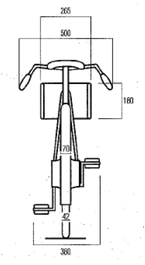
E0726
92
TRACK RACES
§ 4 Attire of motor-pacers
- 3.6.052 Motor-pacers shall wear a leather jacket of the following dimensions:
| - | length of the back without collar | 67 cm |
|---|---|---|
| - | width of the back at sleeve level | 45 cm |
| - | width of chest at sleeve level | 35 cm |
| - | circumference of chest taken under the arms | 120 cm |
| - | circumference of the bottom of the jacket | 120 cm |
| - | length of sleeve from shoulder seam to elbow | 60 cm |
| - | circumference of sleeve around biceps | 40 cm |
| - | circumference of sleeve around wrist | 28 cm |
| - | circumference of collar | 44 cm |
| - | height of collar | 3.5 cm |
-
3.6.053 The collar shall be closed by two hooks. The jacket shall zip up the back (from the bottom up).
-
3.6.054 The jacket may not be opened during the race or in any way modified for the purpose of favouring a rider.
-
3.6.055 Pacers shall wear leather trousers, without gaiters, and of the following dimensions:
| - | length of outer leg | 94 cm |
|---|---|---|
| - | length of inner leg | 68 cm |
| - | circumference of waist | 102 cm |
| - | circumference of hip across the buttocks | 114 cm |
| - | circumference of thigh | 72 cm |
| - | circumference above the knee | 48 cm |
| - | circumference below the knee | 36 cm |
| - | circumference of calf | 40 cm |
| - | circumference of ankle | 30 cm |
-
3.6.056 The leather trousers shall also have a 22 cm wide cloth belt with, to the rear and pointing downward, a rubber tail 48 cm long by 9 cm wide.
-
3.6.057 The trousers shall have no openings other than on the outside of each leg, running 40 cm up from the ankle. These openings shall be secured by zip fasteners closing from the top down.
-
3.6.058 The trousers shall be held up by straps crossing and secured behind with rubberised loops.
-
3.6.059 Under their leather suits, pacers shall wear only a light, tight-fitting jersey and cyclist’s racing shorts. The jacket must close without straining the seams or the zipper. The jerseys shall be of equal thickness throughout and may in no way be padded. There may be no openings in underclothes and jerseys.
-
3.6.060 Pacers may wear only one pair of socks. They must be held up by suspenders.
-
3.6.061 Only normal-size, fully enclosed leather boots shall be permitted.
-
3.6.062 A rigid helmet shall be worn at all times during racing and training. It may not be unstrapped or removed during the race. Ear-flaps, which may be fixed to the helmet, may not protrude by more than 1 cm by 3 cm.
E0726
93
TRACK RACES
§ 5 Attire of moped pacers
-
3.6.063 All pacers shall wear the same attire:
-
a) a light, short-sleeved pullover
-
b) a clinging rider’s jersey with patch pockets; long sleeves shall be allowed; the commissaires may permit the wearing of a supplementary racing jersey
-
c) shorts (tight black descending to mid-thigh)
-
d) special black shoes known as “cyclists’ shoes” and all-white or all-black socks e) a pair of racing gloves or a pair of normal unlined gloves but not gauntlet gloves f) a moulded shell hat of the type worn by stayers; it may have neither ear-flaps nor leather, felt or cloth strips that could act as artificial wind-breakers.
TECHNICAL SPECIFICATIONS AND VELODROMES HOMOLOGATION
§ 6
Velodromes
- 3.6.064 Track competitions included on the UCI International calendar must be held at a UCIhomologated velodrome. As an exception to the above, the UCI may accept inclusion of non-homologated velodromes on the International Calendar, provided that they fulfil all required guarantees in terms of safety.
Track competitions included on a national calendar may be held at a nationally homologated or a UCI-homologated velodrome.
(text modified on 14.10.16)
- 3.6.065 A velodrome will not normally be homologated by the UCI unless it meets the following conditions.
(text modified on 14.10.16)
- 3.6.066 The stability and resistance of the materials and fixings which make up the structure of the velodrome shall meet the legislation regarding construction and safety of the country in which it is built and shall take account of specific geological and climatic conditions.
These elements, along with general compliance of the construction and construction materials with technical standards and good practice, remain the exclusive responsibility of the owner, contractor, architect, consulting engineer, proprietor, operator, user, organiser or others, in accordance with local legislation or regulations. The UCI is exempt from any responsibility in this regard.
Homologation of the velodrome by the UCI rests not on the technical and structural characteristics of the velodrome, but solely on the compliance of its external features with the provisions of the present paragraph at the time of the inspection. The UCI is not liable for any faults or defects which lie out-side the scope of such homologation, or which appear or come to light subsequent to the inspections on which such homologation is based.
(text modified on 01.01.02)
E0726
94
TRACK RACES
Track geometry
Form
- 3.6.067 The inner edge of the track shall consist of two bends connected by two parallel straight lines. The entrance and exit of the bends shall be designed so that the transition is gradual.
The banking of the track shall be determined by taking into account the radius of the bends and the maximum speeds achieved in the various disciplines.
Length
- 3.6.068 The length of the track must lie between 133 metres and 500 metres inclusive.
The length of a track shall be such that a whole number of laps or half laps shall give a distance of precisely 1 kilometre, with a tolerance of + 5 centimetres.
For the World Championships and the Olympic Games the length must be 250 metres. In the interest of the development of track cycling, the UCI may grant a special dispensation for Velodromes already in use.
(text modified on 01.01.02, 24.09.09)
- 3.6.069 The length of the track shall be measured 20 cm above the inner edge of the track (the upper edge of the blue band).
Width
3.6.070 The width of the track must be constant throughout its length. Tracks approved in category A must have a minimum width of 7 metres. Tracks approved in category B must have a width proportional to its length of 5 metres minimum.
(text modified on 01.01.02, 01.01.26)
Blue band
3.6.071 A rideable area sky-blue in colour known as the “blue band” must be provided along the inside edge of the track. The width of this band must be at least 10% of the width of the track and its surface must have the same properties as of the track. No advertising inscription is permissible in this area.
With the exception of mounted riders, no person or unauthorised object may be on the blue band while one or more riders are on the track.
(text modified on 01.01.02, 01.08.23)
Safety zone
3.6.072 Immediately inside the blue band there shall be a prepared and marked safety zone. The combined width of the blue band and the safety zone shall be at least 4 metres for tracks of 250 metres and over, and 2.5 metres for tracks shorter than 250 metres.
With the exception of the commissaires, mounted riders or other persons authorised by the president of the commissaires’ panel, no person or object (including starting blocks) may be inside the safety zone when a rider is on the track.
(text modified on 01.01.02; 26.08.04, 01.08.23)
E0726
95
TRACK RACES
- 3.6.072 A fence (inner fence) of a construction ensuring the adequate safety for riders to a bis height of at least 120 cm above the level of the safety zone must be permanently installed on the inner edge of the safety zone. This requirement applies both during track competitions and outside of them, except in cases where there is no height difference or abrupt gradient between the safety zone and the track centre or within the track centre itself. In such cases, the inner fence must be installed during competitions for all velodromes that received their initial homologation after 1 January 2026.
The inner fence must be stable, solidly mounted, and transparent and in no circumstances may any advertising boards be attached to it. It must present no protrusions or projecting parts and the upper edge of the inner fence shall be fitted with protective covering.
The inner fence must support at least the following loads:
-
4 kN applied at any point up to a height of 65 cm
-
1.5 kN applied at any point above 65 cm and up to the top
The loads calculation must be certified by a structural engineer and provided during the homologation process, prior to the installation of the track.
The inner fence shall be continuous and free of gaps wherever possible. Where unavoidable, any gaps shall be less than 1 cm, including those between the bottom of the fence and the safety zone.
In places where the level of the safety zone is at a level 1.5 m or more than the actual track centre, additional protective measures such as nets, panels, or the like, shall be erected installed in order to prevent athletes being subjected to injury. In velodromes requesting their initial homologation after 1st January 2026, in places where the level of the safety zone is at a level 1.5 m or more than the actual track centre, the inner fence must have a minimum height of 2 m. This minimum height shall be measured at the location of the drop.
Where there is a difference in the height of the inner fence, the transition between these heights must not exceed an angle of 45°.
E0726
96
TRACK RACES
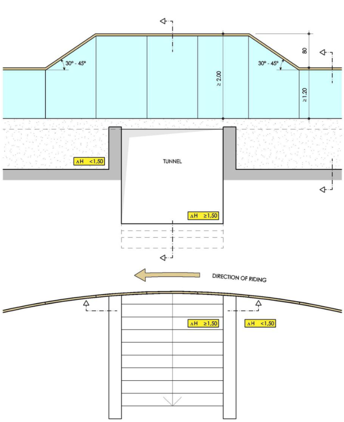
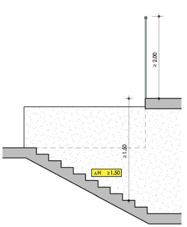
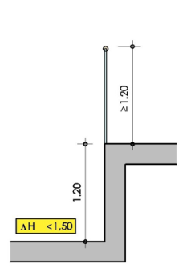
Diagram showing the inner fence at different heights
E0726
97
TRACK RACES
Any gates provided in the fencing must be fitted with simple and reliable fastenings. They must be kept closed while racing and training is in progress.
(text modified on 01.01.02; 26.08.04; 01.01.25, 01.01.26)
Profile
-
3.6.073 At any point on the track, a cross section of the track surface must present a straight line. In the bankings, the inner edge should have a curved transition onto the blue band.
-
3.6.073 At any point of the track or safety zone surface, a perpendicular distance from the bis surface of at least 3 metres must be guaranteed free of any obstacle.
(text modified on 01.01.02)
Surface
- 3.6.074 The surface of the track shall be completely flat, homogenous, non-abrasive. The tolerance of flatness for the track surface shall be 5 mm over 2 metres. The track surface must be capable of withstanding a minimum load of 5 kN at any point on the track. The load calculation must be certified by a structural engineer and provided during the homologation process, prior to the installation of the track. The surface of the track shall be made of wood, concrete or asphalt. The use of other materials is permitted only upon submission of a dossier to the UCI for approval, demonstrating that all essential surface characteristics relevant to the discipline are ensured. The coating shall be uniform in all its aspects over the entire track surface. Coatings intended to improve the rolling qualities of one part of the track only are not permitted.
(text modified on 01.01.02, 01.01.26)
- 3.6.075 The surface colour of the track must leave the track marking lines clearly visible.
Marking
Painting
- 3.6.076 Any demarcation, line, advertisement or other marking on the track must be applied with a paint or product which is non-slip and which does not alter the adhesion properties, consistency or homogeneity of the surface.
(text modified on 01.01.02)
- 3.6.077 Advertisements on the track surface must be placed above the stayers’ line within a longitudinal band between 50 cm of the stayers’ line and 50 cm from the fence (the outside edge of the track). No advertisement may be placed within 1m either side of the pursuit and the 200 m lines, or within 3 m either side of the finish line, measured from the outside edge of the white band.
(text modified on 01.01.02)
- 3.6.078 The longitudinal lines covered by articles 3.6.079 to 3.6.081 shall have a constant width of 5 cm. The perpendicular lines covered by articles 3.6.082 to 3.6.084 shall have a constant width of 4 cm and shall not be drawn within the safety zone or the blue band.
(text modified on 01.01.26)
Longitudinal markings:
E0726
98
TRACK RACES
Measuring line
- 3.6.079 A line, in black on a light background or in white on a dark background, known as the “measuring line” shall be drawn at 20 cm from the inside edge of the track, numbered every 10 metres and marked every 5 metres. The measurement of the measuring line shall be taken on its inside edge.
Sprinters’ line
- 3.6.080 A red line, known as the “sprinters’ line” shall be marked out 85 cm from the inner edge of the track.
The distance is to be measured to the inner edge of the red line.
(text modified on 21.01.06)
Stayers’ line
- 3.6.081 A blue line, known as the “stayers’ line” shall be drawn at one third of the total width of the track or 2.45 m (whichever is the greater) from the inner edge of the track.
The distance is to be measured to the inner edge of the blue line.
(text modified on 21.01.06)
Perpendicular markings:
Finish line
- 3.6.082 The finish line shall be situated towards the end of one of the straights but at least a few metres before the entrance of the banking, and in principle in front of the main grandstand.
It shall be marked by a perpendicular black line 4 cm in width at the centre of a white band 72 cm in width, thus leaving 34 cm of white on each side of the black line.
The finish line marking on the track shall continue up to the top of the flat surface of the fencing.
(text modified on 01.01.26)
200 metre line
- 3.6.083 A white line shall be drawn across the track 200 metres before the finish line, from which point the times will be taken for sprint events.
Pursuit lines
- 3.6.084 Two white lines 4 m in length, perpendicular to the track and precisely in line with one another, shall be drawn at the precise midpoint of each of the straights to mark the finish points for pursuit events.
(text modified on 01.01.26)
3.6.084 Starting position marks, for the Team Pursuit and Team Sprint events shall be drawn bis at 11 cm from the pursuit lines.
- Team Pursuit: four white square markings (each a 9 cm2 ), spaced 1 m apart, shall be used. The first marking, positioned on the inside of the track and defining the position of the others, shall be located halfway between the measuring and sprinters’ line.
E0726
99
TRACK RACES
- Team Sprint: three square markings (each a 9 cm2 ), spaced 1.5 m apart, shall be used. The first marking, positioned on the inside of the track and defining the position of the others, shall coincide with the first marking used for the Team Pursuit. The third marking shall coincide with the fourth Team Pursuit starting position marking. The second marking, positioned between the first and third, is the only marking applied exclusively for the Team Sprint event and shall be coloured red.
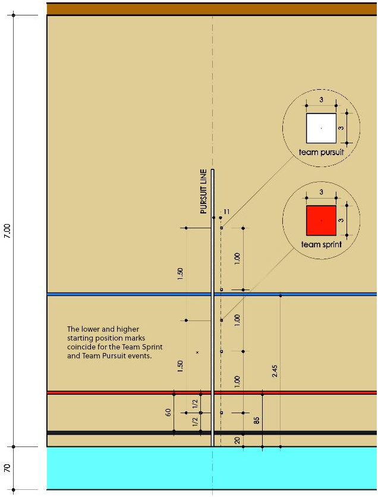
Diagram of the Starting Position Track Markings
(article introduced on 01.01.26)
EQUIPMENT Access tunnel
- 3.6.085 The track centre, which is located inside the safety zone, must be obligatorily accessible via one or more tunnels.
Riders’ area
3.6.086 Within the track centre areas must be provided for riders to change and warm up, as well as waiting areas near the pursuit and finish lines.
E0726
100
TRACK RACES
Outer fence
- 3.6.087 The outside edge of the track must be surrounded by a safety fence (outer fence) to protect riders and spectators. It must be stable and solidly mounted, with an overall height of at least 140 cm above the track for velodromes requesting their initial homologation after 1st July 2025. The inside part must be smooth, unbroken and with no projecting parts.
The outer fence must support at least the following loads:
-
4 kN applied at any point up to a height of 65 cm
-
1.5 kN applied at any point above 65 cm and up to the top.
The loads calculation must be certified by a structural engineer and provided during the homologation process, prior to the installation of the track.
At the places where the area outside the track is at a level 1.5 metres or more below the outside edge of the track surface, additional protective measures (nets, panels, etc.) must be provided to reduce the risks resulting from riders accidentally leaving the track. In velodromes requesting their initial homologation after 1st January 2026, it is mandatory as part of the additional measures the installation of an outer fence, with a minimum height of 2 m. This minimum height shall be measured at the location of the drop.
Where there is a difference in the height of the outer fence, the transition between these heights must not exceed an angle of 45°.
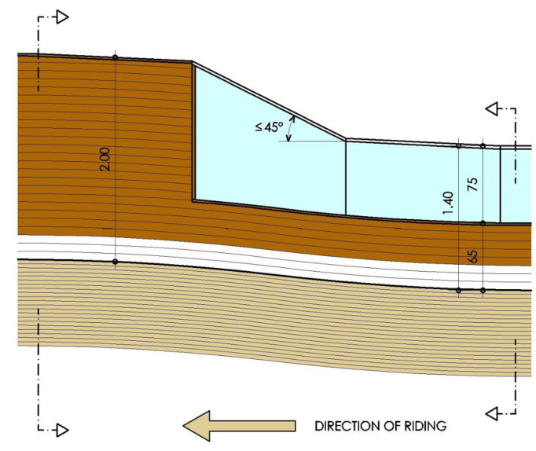
E0726
101
TRACK RACES
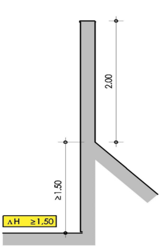
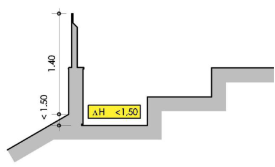
Diagram showing the outer fence at different heights
The colour of the outside fencing must contrast clearly with that of the track. When the outer fence is made entirely of transparent material, the lower part (up to a minimum height of 65 cm from the track side) should be made non-transparent.
Any gates provided in the outside fencing must open outwards and be fitted with simple and reliable fastenings. They must be kept closed while racing and training is in progress.
(text modified on 01.01.02; 01.01.25, 01.01.26)
Miscellaneous
3.6.088 A lap counter clearly visible to riders and spectators and a bell audible through-out the track area shall be placed near the finish line.
For pursuit events, bells and lap counters shall be placed on both side of the track, near the pursuit lines, in accordance with article 3.2.066.
(text modified on 01.01.02)
3.6.089 A timing system including starting blocks, contact bands and an electronic display (times to the thousandth of second, laps, points, etc.), a photofinish or video-finish system to assist in judging finishes, and a general public address system clearly audible throughout the entire velodrome area must be provided.
Contact strips must be laid over the width of the track or an acceptable timing detector such as light beams installed.
(text modified on 01.01.02)
Lighting
3.6.090 Suitable lighting must be provided which meets the safety conditions into force in that country.
The lighting system must be supplemented by an emergency lighting system operating independently of mains electricity, capable of providing an intensity of at least 100 Lux for 5 minutes which must be effective instantaneously.
E0726
102
TRACK RACES
During training sessions without spectators, vertical lighting must be at least 300 lux (maintained average).
During competitions, vertical maintained average of at least 1000 Lux is required for category A velodromes and 500 Lux for category B velodromes.
For the World Cup, UCI World Championships, Continental Championships and the Olympic Games, the vertical maintained lighting level shall be at least 1400 Lux and evenly distributed.
Luminaires and positioning must be designed and angled to avoid glare for riders, spectators and television broadcast.
(text modified on 01.01.02, 01.01.26).
ACCOMMODATION FOR OFFICIALS
Commissaires’ platform
3.6.091 A platform must be provided for the commissaires, located in the track centre in line with the finish line.
(text modified on 01.01.26).
Judge-referee platform:
3.6.093 A platform must be provided for the judge-referee on the outside of the track. It must be in a quiet, isolated location overlooking the track with an unimpeded view, e.g. at the top of the stand above the finish line. Cable ducting must be provided from that location to the infield. During competitions, there must be a radio link between the referees and the other commissaires, including the starter and the president of the commissaires’ panel.
(text modified on 01.10.19, 01.01.26)
Starter’s platform:
3.6.093 In the middle of the track centre in line with the pursuit lines, a platform must bis be provided for the starter. It must have an area of between 3 and 4 m2 and must be raised above track level, to ensure the starter has an unobstructed view along the full length of both pursuit lines.
(text modified on 01.01.02, 01.01.26)
HOMOLOGATION OF VELODROMES
3.6.094 At the time of their homologation, velodromes shall be classified into two categories on the basis of the technical quality of the track and installations, as shown in the following table:
| CATEGORY CATEGORY A CATEGORY B |
|---|
E0726
103
TRACK RACES
| Type of Velodrome | Indoor | Indoor |
|---|---|---|
| (250m tracks only) | Roofed Cantilever Outdoor |
(text modified on 01.01.26)
- 3.6.095 All tracks must meet the following criteria (calculated for a minimum safe speed of at least 85 km/h):
| Length of the track |
250 m | 285.714 m | 333.33 m | 400 m |
|---|---|---|---|---|
| Radius of bends | 19-25 m | 22-28 m | 25-35 m | 28-50 m |
| Width | 7-8 m | 7-8 m | 7-9 m | 7-10 m |
(text modified on 01.01.02, 01.01.26)
-
3.6.096 [abrogated on 01.01.26]
-
3.6.097 The request for homologation must be sent to the UCI at least 2 months before the planned inspection date, by completing the homologation application form. It must be accompanied by a technical file complying with the UCI’s standard model. In any case, the national federation of the country, in which the velodrome is located, shall be informed and involved in the homologation process.
The UCI may require any additional document or information.
(text modified on 01.01.02, 01.01.26)
- 3.6.098 The applicant for the homologation shall organise the inspection of the velodrome in the presence of a specialist responsible for carrying out the regulation measurements under the direction of a UCI delegate. On this occasion, a test of the track by a group of riders must be carried out.
All expenses incurred in connection with the inspection of the velodrome are to be covered by the applicant, the national federation being held jointly liable.
The costs of the UCI delegate are covered in accordance with the conditions specified in the UCI financial obligations in force.
(text modified on 01.01.02; 01.01.26)
-
3.6.099 A detailed inspection report shall be drawn up by the UCI delegate and countersigned by the persons responsible for the measurement of the track and a representative of the national federation.
-
3.6.100 Should the UCI consider that there are aspects which might lead to homologation being withheld, it shall invite the parties requesting homologation to justify these aspects before a decision is reached. Failing this, and in the event that homologation for the velodrome is withheld, the Federation concerned may appeal to CAS.
E0726
104
TRACK RACES
(text modified on 01.01.10)
- 3.6.101 Any changes to or renovation of the facilities following the inspection of the velodrome shall nullify the homologation. The new homologation of existing facilities is subject to the procedure described in articles 3.6.097 and following, as well as the UCI homologation procedure available on the UCI website.
(text modified on 01.01.02; 01.01.25)
E0726
105
TRACK RACES
Chapter VII TRACK TEAMS
(Chapter introduced on 31.05.04)
§ 1 Identity
- 3.7.001 A UCI Track Team is an entity, comprising at least three riders each of whom must be of the age of 19 years and older.
Any person, company, foundation, association or other entity which operate and act as the person or entity responsible for managing the UCI Track Team is hereinafter referred to as the team representative and/or the employer. The team representative shall represent the UCI Track Team for all purposes as regards the UCI Regulations.
(text modified on 30.03.09; 25.10.21)
- 3.7.002 The UCI Track Team shall comprise all the riders registered with the UCI as part of the team, the team representative, the sponsors and all the other persons (Team Manager, Ass. Team Manager, Coach, Mechanic, Paramedical Staff, Press) contracted by the team representative and/or the sponsors for the functioning of the team. The UCI Track Team shall be designated by a special name and be registered with the UCI as provided in these regulations.
(text modified on 25.10.21)
- 3.7.003 UCI Track Teams riders may take part in all track events for their team, when not racing for the National Federation.
(text modified on 25.10.21)
- 3.7.004 Sponsors shall be persons, companies or bodies which contribute to the funding of the UCI Track Team. Of these sponsors, no more than two may be designated as the principal partners of the UCI Track Team. Should neither of the two principal partners be the employer of the UCI Track Team then the employer (team representative) may be only a person or body corporate, whose sole commercial income is derived from advertising.
(text modified on 25.10.21)
- 3.7.005 The principal partner(s) and team representative shall commit themselves to the UCI Track Team for a full track season as defined in article 3.2.001.
(text modified on 25.10.21)
Team Name
- 3.7.006 The name of the UCI Track Team must either be that of the company or brand name of the principal partner or that of one or both of the two principal partners, or the name of its team representative.
Upon specific request, the UCI may authorise another designation which is linked to the UCI Track Team project. The UCI may refuse the UCI Track Team’s registration because of a resemblance of the name of a new UCI Track Team, its team representative or its principal partners which is likely to create confusion with another UCI Track Team.
E0726
106
TRACK RACES
(text modified on 01.10.11; 25.10.21)
- 3.7.007 Two UCI Track Teams, their principal partners or team representative, may not bear the same name. Should application for a new and identical name be simultaneously made by two or more UCI Track Teams, priority shall be given to the UCI Track Team which has used the name for the longer or longest time. In case of first registration, the UCI Track Team that first submitted its application to the UCI shall receive priority for the name.
(text modified on 25.10.21)
Transfer period
- 3.7.008 During the season, a rider cannot join a UCI Track Team outside from the UCI Track Team registration period going from 2 months to 2 weeks before the start of the new Track Individual Classification, January 1st.
(text modified on 30.09.10; 25.10.21; 17.10.202 2)
§ 2 Legal and Financial Status
- 3.7.009 The team representative shall represent the UCI Track Team for all purposes relating to the UCI Regulations. His registered office/main residence must be in the same country where the UCI Track Team is registered.
The team representative has the power to hire staff. He shall sign the contracts with the UCI Track Team's riders and other employees.
(text modified on 25.10.21)
3.7.009 Any person, company, foundation, association or other entity that becomes the team bis representative or principal partner of a UCI Track Team for the first time shall no later than the date of the application for the registration of that UCI Track Team submit the following to the National Federation:
-
For individuals: proof of residence;
-
For incorporated bodies and other organisations:
-
Constitution or articles of association;
-
Proof of an entry on the business register or the register of companies or associations, or any other official document demonstrating the legal existence of the organisation;
-
List of officers or directors with their full names, occupations and addresses;
-
- Annual accounts (balance sheet and profit and loss account for the last financial year in the current legal form.
Furthermore, the team representative and the principal partners must inform the National Federation without delay of any of the following: a change of domicile or registered offices, reduction in capital, change of legal form or identity (merger, takeover), request for or implementation of any agreement or any measure concerning all creditors.
(article introduced on 25.10.21)
§ 3 Requirements imposed on the UCI Track Team for the registration
Registration with the National Federation
E0726
107
TRACK RACES
- 3.7.010 The application for the status of UCI Track Team must be made to the National Federation of the nationality of the majority of the riders of the team in accordance with the procedures set out below (articles 3.7.010bis to 3.7.028bis).
(text modified on 25.10.21)
- 3.7.010 Each National Federation may register a maximum of 3 UCI Track Teams each year. bis For the development of track cycling, the UCI may grant dispensation of this requirement.
(article introduced on 25.10.21; modified on 17.10.22)
-
3.7.010 The National Federations may set the deadlines for the procedure as set out in the ter registration manual as they wish, as long as the deadlines for registration with the UCI are respected.
-
The conditions set out in this paragraph are minimum conditions. National Federations are permitted to set stricter conditions.
(article introduced on 25.10.21)
-
3.7.010 The UCI Track Team must submit the following to the National Federation: quarter 1. Original copies of the contracts signed with the riders;
-
Original copies of the contracts signed with the riders;
-
Original copies of the contracts signed with other UCI Track Team staff;
-
An original copy of a bank guarantee, as described in article 3.7.030 to 3.7.035; 4. A detailed budget following the model set out in the manual for the registration of UCI Track Teams;
-
Proof that the insurance cover required under article 3.7.023bis has been taken out for all the riders in the UCI Track Team;
-
A copy of the sponsorship contract or, if no such contract exists, documentary evidence of the UCI Track Team's income.
(article introduced on 25.10.21)
-
3.7.010 The National Federation shall register the UCI Track Team only if it considers that the
-
quinquies documentation submitted meets all the conditions above and that its budget is adequate for such a team.
(article introduced on 25.10.21)
- 3.7.011 The National Federation shall be solely responsible for checking compliance with regulatory and legal requirements, both on registration and throughout the registration year.
(text modified on 25.10.21)
-
3.7.012 [abrogated on 25.10.21]
-
3.7.013 The UCI Track Team shall communicate the complete registration documentation of UCI Track Teams (including their list of staff and riders) 15 days prior to the UCI Track Individual Classification period start, for verification and registration.
-
The UCI Track Team registration must include the following information:
-
the exact name of the UCI Track Team.
-
the complete contact details (address, e-mail, telephone and fax numbers) to which all communications for the UCI Track Team can be sent.
E0726
108
TRACK RACES
-
the names and addresses of the principal partners, team representative and the team manager.
-
the surnames, first names, addresses, nationalities and dates of birth of the riders, and UCI ID of the riders.
-
Scanned copies of contracts between the UCI Track Team and the respective riders.
The registration of UCI Track Teams is valid for a full track season as defined in article 3.2.001.
(text modified on 25.10.21)
-
3.7.014 Article 3.7.013 shall also apply to any amendment to the list. Such amendments shall immediately be submitted by the Teams to the UCI for approval.
-
3.7.015 Only Teams on the registered list of the UCI may receive benefits such as those listed in article 3.7.019.
-
3.7.016 By their annual registration with the UCI, UCI Track Teams and especially the team representative and sponsors shall undertake to respect the Constitution and Regulations of the UCI and their respective National Federation and to participate in cycling events in a loyal and sporting manner. The team representative and principal partners shall be held jointly and severally liable for all the financial commitments of the UCI Track Team to the UCI and the National Federations, including any relevant fines.
(text modified on 25.10.21)
- 3.7.017 The registration of the UCI Track Team with the UCI shall involve a registration fee that the UCI Track Team shall pay 15 days prior to the UCI Track Individual Classification period start. The amount shall be set annually by the UCI Management Committee.
(text modified on 04.03.2019)
-
3.7.018 With their registration application, each UCI Track Team must submit to the UCI a colour graphic design of their team jersey, complete with sponsor logos.
-
3.7.019 Those UCI Track Teams registered with the UCI will receive the following benefits: 1. Information services and publications in addition to the regular distributions.
-
Where applicable, advertising space on specific series jerseys
(text modified on 25.10.21, 01.01.26)
§ 4 Teams and Riders
-
3.7.020 The UCI Track Team shall be the totality of the team riders in the elite and/or under 23 categories to take part in events and specialisations as specified in article 3.7.003.
-
3.7.021 [abrogated on 25.10.21].
-
3.7.022 A rider shall not enter into any commitment with an organiser, whomsoever that organiser may be, with a view to participating in a race, without having firstly obtained the agreement of his team representative. That agreement shall be considered to
E0726
109
TRACK RACES
have been granted if, on being duly requested, the team representative has not replied within ten days.
(text modified on 25.10.21)
§ 5 Contract of Employment & Insurance
- 3.7.023 A rider’s membership of a UCI Track Team shall be subject to a contract which must at least contains the stipulations of the standard contract presented in article 3.7.029. It does not include bonus/incentive programs, race schedules, equipment provisions and other details. These are subject to negotiations between the team representative and the rider(s).
A rider who is already employed or a member of another UCI registered team (racing in another discipline), may be registered in a UCI Track Team, only if a signed threeparty agreement (rider, UCI Track Team and the other UCI Team) is provided during the registration process.
The insurance cover, as set out in article 3.7.023bis must be guaranteed and specified in detail in the contract.
(text modified on 25.10.21)
-
3.7.023 Insurance against the following risks is compulsory for all events occurring in the bis course of the rider's activities for the UCI Track Team (racing, training, travel, promotion, etc.). The insurances must be valid in all countries in which the rider is susceptible of performing activities for the UCI Track Team, whether individually or jointly with other UCI Track Team members:
-
Civil responsibility (of the rider; for an adequate amount);
-
Accidents (costs of treatment until recovery with no amount limit);
-
Sickness (costs of treatment and hospitalisation with no amount limit);
-
Repatriation (unlimited cover);
-
Death (minimum value EUR 100’000.- due to the beneficiaries designated by the rider).
UCI Track Teams shall take out and cover the costs for the insurances listed above insofar as the rider does not have such insurances through his licence or his compulsory national social security system.
(article introduced on 25.10.21)
- 3.7.024 Any clause concluded between the rider and the team representative that clearly impinges on the basic rights of the rider as provided for in the UCI regulations shall be considered null and void.
(text modified on 25.10.21)
3.7.025 Any contract between a UCI Track Team and a rider shall be drawn up in duplicate at least in a language which can be understood by both the rider and the National Federation. One signed scanned copy shall be forwarded to the UCI with a translation in French or English.
(text modified on 01.07.17; 25.10.21)
§ 6 End of Contract
E0726
110
TRACK RACES
- 3.7.026 On the expiration of the foreseen term of the contract, the rider shall be free to enter the service of some other employer. No system of transfer fees shall be permitted.
§ 7 Dissolution of a UCI Track Team
3.7.027 A UCI Track Team shall announce its dissolution or the end of its activity or its inability to respect its obligations, as soon as possible to the riders, to its other members, to the UCI and its National Federation.
Once this announcement has been made, riders shall be fully entitled to contract with third parties for the following season or for the period starting at the moment announced for the dissolution, the end of activities or the inability to perform.
§ 8 Penalties
-
3.7.028 Should a UCI Track Team, as a whole, fail or cease to meet all the conditions of the relevant UCI regulations, it may no longer participate in cycling events.
-
3.7.028 The UCI shall have the right to refuse or withdraw the registration of a UCI Track bis Team which does not meet all the minimum conditions set in the present regulations or by another regulatory provision.
Notwithstanding the above, in the event of delay in payment and/or receipt of the registration file by the UCI, the registration fee shall be automatically increased up to CHF 100 per day. Furthermore, the UCI will not proceed with the registration of the UCI Track Team without receipt of the entire application for registration and full settlement of all registration fees, including any applicable increases.
Moreover, the UCI Track Team may only claim the rights related to the UCI Track Team status once its registration has been granted.
(article introduced on 25.10.21)
E0726
111
TRACK RACES
§ 9 UCI Model Contract Between a Rider and a UCI Track Team
- 3.7.029 Between the undersigned,
(name and address of employer)
employer of the Track Team (name of the Track Team), affiliated by the (name of the National Federation) and whose principal partners are:
-
(name and address) (if appropriate, the employer)
-
(name and address)
hereafter called « the team representative »,
ON ONE PART
And:
(name and address of the rider)
born in
on
nationality
holder of a licence issued by
hereafter called «the Rider»
ON THE OTHER PART
Do hereby recall that:
-
The team representative employs a team of cyclists who, forming the ….. (name of the UCI Track Team) and under the direction of Mr. (name of the Team Manager), participate in track events governed by the Regulations of the Union Cycliste Internationale;
-
The Rider wishes to join the (name of the UCI Track Team)
-
Both parties are acquainted with and declare that they will abide wholly by the UCI Constitution and Regulations, and those of its affiliated National Federation.
This having been established, it is hereby agreed as follows:
ARTICLE 1 – Engagement
The Employer shall engage the Rider, and the Rider shall agree to be engaged as a Track rider.
The participation of the Rider in competitions in other disciplines shall be agreed upon by the Parties case by case.
ARTICLE 2 – Duration
The present contract shall be concluded for a fixed period commencing on … (start date) and expiring on … (end date, if possible, end of track season)
ARTICLE 3 – Remuneration
a) Paid rider
The Rider shall be entitled to an annual gross salary of … (amount in figures and words) This remuneration may not be lower than (choose one):
- The legal minimum wage of the country of the nationality of the UCI Track Team;
E0726
112
TRACK RACES
-
Where there is no legal minimum, than the usual salary that is paid or should be paid to full-time workers employed in the country whose National Federation issued the Rider’s licence
-
The amount set by (name of NF) in its national regulations;
-
The minimum salary negotiated by (name of NF) with (e.g. name of riders’ union) of the country.
If the duration of that contract is to be less than one year, the Rider shall, over that period, earn at least the full annual salary provided for in the preceding paragraph, less the contractual salary that he would have been able to earn, as a rider with professional status, with some other employer in the course of the year preceding the final date of the present contract. This provision shall not apply if the present contract is extended.
b) Unpaid rider
The Rider receives no salary or remuneration but receives expenses as per the scale below for the activities carried out for the UCI Track Team and/or at its request: (Suggestions, examples →)
-
(currency and amount) per kilometre travelled;
-
reimbursement of air tickets for distances greater than (number) km;
-
reimbursement of the cost of a 2-star hotel room for the nights before and after the event if the competition venue is more than (number) km from the rider's home;
-
on presentation of receipts, reimbursement for all meals taken during travel up to a maximum price of (currency and total amount) per meal;
-
on presentation of invoices, reimbursement for minor mechanical expenses to a maximum total amount of (currency and total amount) per year.
ARTICLE 4 - Payment of remuneration and/or expenses
a) Paid rider
-
The UCI Track Team shall pay the remuneration determined under article 3 in 12 equal monthly instalments on or before the 5th day of the following month.
-
Should the Rider be suspended under the terms of the UCI Regulations or those of one of its affiliate Federations, he/she shall not be entitled to the said remuneration referred to in article 3 for the part of the suspension exceeding one month.
-
In the event of failure to make payment of the remuneration referred to in article 3, the rider is, without summoning the employer to make payment, fully entitled to an extra benefit of 5% interest per year.
b) Unpaid rider
-
The UCI Track Team must pay the sums specified in article 3 no later than the last working day of each month as long as it has received the expenses claim from the rider before the 20th of that month.
-
In the event of a failure to make payment of any sum by its due date, the rider has the right, without notice, to the interest and supplements commonly applied in that country. Any sum due to the rider from the UCI Track Team must be paid by transfer to the rider's bank account no (number) at the (name of the bank) at (branch where the account is held). Only the proof of the execution of the bank transfer is accepted as proof of payment.
ARTICLE 5 - Insurance
The Employer shall provide the rider with an appropriate insurance to ensure a reasonable allowance in the event of an unforeseen injury or illness which affects the rider's ability to fulfil the competition aspects of his/her contractual obligations.
E0726
113
TRACK RACES
ARTICLE 6 - Premiums and prizes
The Rider shall be entitled to premiums and prizes won during cycling competitions in which he/she participated for the UCI Track Team, in accordance with the Regulations of the UCI and its Affiliated Federations.
Premiums and prizes shall be paid as promptly as possible, but at latest on the last working day of the month following that in which said premiums and prizes were won.
-
ARTICLE 7 - Miscellaneous Obligations
-
The Rider may not, for the duration of the present contract, work for any other UCI Track Team or advertise for any other sponsors than those belonging to the (name of the UCI Track Team), except in such cases as are provided for in the Regulations of the UCI and of its affiliated Federation.
-
The Employer hereby undertakes to allow the Rider properly to perform his occupation by providing him with the necessary equipment and apparel and by permitting him/her to participate in a sufficient number of cycling events, either as a member of the UCI Track Team or individually.
-
The Rider may not participate individually in a race without the express agreement of the Employer. The Employer shall be deemed to have given its agreement if it has not replied within a period of ten days from the date of the request. In no case may the Rider take part in a race within any other structure or a mixed team if the (name of the UCI Track Team) has already entered for that race.
-
The Parties undertake to respect the riders’ health protection programme of the UCI and/or the (name of NF).
In case of a national selection, the Employer shall be required to permit the Rider to participate in preparatory races and programmes decided upon by the National Federation. The Employer shall authorise the National Federation to give the Rider any instructions it deems necessary in connection with and for the duration of the selection provided that it does so solely in connection with sporting matters, in its own name and on its own behalf.
In none of the aforementioned cases shall the Contract be suspended.
ARTICLE 8 - Transfers
On the expiry of the present contract, the Rider shall be entirely free to sign a new contract with another employer, subject to the provisions of the UCI Regulations.
ARTICLE 9 - End of contract
Notwithstanding the legislation governing the present contract, it may terminate before expiration, in the following cases and on the following conditions:
-
The Rider may terminate the present contract, without notice nor liability for damages:
-
(a) if the employer be declared bankrupt, insolvent or goes into liquidation.
-
(b) if the employer or a principal partner withdraw from the UCI Track Team and the continuity of the UCI Track Team is not guaranteed or else if the UCI Track Team announces its dissolution, the winding up of its activities or its inability to meet its commitments; if the announcement be made for a given date, the Rider shall perform the contract until that date.
-
The Employer may terminate the present contract, without notice or liability for damages, in the case of serious defaulter on the part of the Rider and of the suspension of the Rider under the terms of the UCI Regulations for the duration of the present contract remaining to run.
Serious defaulter is considered, in particular, refusal to participate in cycling races, despite being constantly summoned to do so by the Employer.
E0726
114
TRACK RACES
-
If need be, the Rider shall have to prove that he was in no state to participate in a race.
-
Either party shall be entitled to terminate the present contract, without notice or liability, should the Rider be rendered permanently unable to exercise the occupation of professional cyclist.
ARTICLE 10 - Unreasonable demand
Any clause agreed upon between the parties that runs counter to the terms of the UCI Model Contract between a Rider and a UCI Track Team and/or to the provisions of the UCI Constitution or Regulations and which would in any way restrict the rights of the Rider shall be null and void.
ARTICLE 11 - Arbitration
Any dispute between the Parties arising from the present Contract shall be submitted to arbitration, to the exclusion of the courts, by the UCI arbitral board.
Made in
on
The Rider The Employer
Approved for joint and several liability for three (3) months salary payment
Principal Partner Principal Partner of the UCI Track Team of the UCI Track Team
(text modified on 01.01.10; 14.10.16; 25.10.21)
§ 10 Bank guarantee of UCI Track Team
-
(articles introduced on 25.10.21)
-
3.7.030 For each registration year, a UCI Track Team or any formation applying for this status must set up a first-demand bank guarantee (abstract guarantee) in favour of its National Federation, using the model set out in article 3.7.040.
-
3.7.031 The purpose of that guarantee shall be:
-
to defray debts incurred for the year of registration, in accordance with the procedure set out below, incurred by the sponsors and the team representative to firstly the riders and secondly any other person contracted for the operation of the UCI Track Team and to cover the payment of any fines imposed as a result of the application of the UCI regulations;
-
to defray the payment of expenses, indemnities, fines and sanctions or sentences imposed under or as a result of the application of the regulations of the UCI or the responsible National Federation or associated with their application. For the application of provisions regarding the bank guarantee companies through whom the licence holders concerned carry out their activity for the operation of the UCI Track Team shall be considered as members of that UCI Track Team.
E0726
115
TRACK RACES
-
3.7.032 The minimum total amount of the bank guarantee shall be the higher of:
-
15% of the total pay due to the riders and other staff (whether employees or self-employed);
-
a minimum sum of EUR 10,000 (ten thousand euros) – to be indexed by country in accordance with the UCI table.
-
3.7.033 For the first registration year, the guarantee shall be valid from 15 days prior to the UCI Track Individual Classification period start of the first registration year until 31 December of the following year. From the second registration year, and for the following years, the bank guarantee may stipulate that it may be called upon at the latest as of 1st April following the registration, including for the sums due in January, February and March. In any case, the bank guarantee shall be valid until 31 December after the registration year covered by the guarantee.
Calling up the bank guarantee
- 3.7.034 The National Federation shall call up the bank guarantee in favour of the creditor specified in article 3.7.031 except where there are clearly no grounds for the claim. The UCI Track Team shall be notified of the creditor's claim and the call on the guarantee.
The National Federation may set an appropriate indemnity for any call on the guarantee.
-
3.7.035 The actual payment to the creditor shall not take place until one month after the calling up of the guarantee. If, in the interim, the UCI Track Team raises a reasonably justifiable objection to the payment of the money to the creditor, the National Federation shall pay the sum at issue into a special account and shall subsequently distribute it in accordance with any agreement reached between the parties or according to an enforceable legal decision.
-
3.7.036 If the creditor has not introduced his claim against the team representative before the body designated in his contract or the body which he regards as competent on some other basis during the three months following the date of his call on the guarantee, the team representative may apply to the National Federation to have the blocked funds released in his favour.
The funds shall be released should the creditor fail to take proceedings within one month of the despatch of notice by the National Federation or to submit proof of such proceedings within the following fifteen days. Should the body before which proceedings are taken declare itself not competent to rule, the creditor shall resubmit his claim within one month of being informed of the decision.
Failing this the team representative may apply to the National Federation to have the blocked funds released in his favour. The funds shall be released should the creditor fail to take further proceedings within one month of the despatch of notice by the National Federation or to submit proof of such proceedings within the following fifteen days.
- 3.7.036 Any creditor having called-up the bank guarantee shall keep the National Federation bis informed of all follow-up action and proceedings initiated before the competent decision-making body. If the creditor fails to provide the National Federation with information regarding the status of proceedings before the competent decisionmaking body during a period of three years as from blocking of the funds by the National Federation or as from the last notification from the creditor, the UCI shall release the funds in favour of the team representative after having deducted any
E0726
116
TRACK RACES
amounts due to the UCI or the National Federation in accordance with article 3.7.034 to 3.7.037.
-
3.7.037 If the debt submitted exceeds a sum equal to 15 percent of the annual contractual benefits, only a total amount corresponding to 15 percent of the annual contractual benefits shall be paid out in the first instance, provided that the conditions of payment are fulfilled. The acknowledged balance of the debt may be paid from the global guarantee on condition that the latter would not be exhausted at the end of its period of validity. In the event that there are several creditors, the available balance of the guarantee will be allocated proportionally between them.
-
3.7.038 A UCI Track Team whose guarantee is drawn upon shall be automatically suspended if the guarantee is not made up to its full amount within one month.
-
3.7.038 Whenever a competent authority pronounces the opening of liquidation or bankruptcy bis proceedings against the team representative, the National Federation may release the bank guarantee in favour of the liquidation or bankruptcy administration, upon request from the competent authority.
-
3.7.039 The creditor must submit his application to the National Federation for the guarantee to be called up by 30 days before its expiry date at the latest. Documentary evidence must be provided with the application. Failing this the National Federation is not obliged to call up the guarantee.
Model bank guarantee
3.7.040 The present bank guarantee is issued under the terms of Article 3.7.030 of the Cycling Regulations of the UNION CYCLISTE INTERNATIONALE for the purpose of guaranteeing, within the limits set in those regulations, the payment of sums due by the UCI Track Team [name] (team representative: [name of team representative]) to riders and other creditors covered in article 3.7.031 of those Regulations as well as the payment of expenses, indemnities, fines and sanctions or sentences imposed under or by consequence of the regulations of the UCI.
The amount of the present Guarantee is limited to [currency] X].
The bank,
-
Exact name;
-
Full address to which any call on the guarantee can be sent;
-
Telephone and fax numbers of the department of the bank which handles the calling up of the guarantee;
-
E-mail address.
hereby undertakes, on first demand and within fifteen days of receiving the demand, to pay [the responsible National Federation of the UCI Track Team] any amount in [currency] requested up to a maximum of [currency] X up to the exhaustion of the present guarantee.
The aforementioned payments shall be made on reception of a simple request regardless of any objection raised or exception taken by anyone whomsoever. The request shall require no justification.
The present Guarantee shall remain in effect until [the last day of the third month following the end of the relevant season]
E0726
117
TRACK RACES
Any call on the present guarantee must be received by the bank no later than [last day of the third month following the end of the relevant season].
Chapter VIII CALENDAR
General observations
3.8.001 Track competitions are entered on the calendars in accordance with their classification and criterias as per articles 3.8.003 and 3.8.005.
The UCI Management Committee allocate a classification in the international calendar to each competition in accordance with the criteria which it shall draw up, taking into account the criterias set in article 3.8.003.
(article introduced on 01.01.04)
3.8.001 Every entity organising a track competition shall conduct the event in strict compliance bis with the UCI Constitution and UCI Regulations. All competitions registered on the UCI Track Calendar must respect the UCI financial obligations (in particular calendar fee, entry fees and prize money) approved by the UCI Management Committee and published on the UCI website.
Entry fees for competitions on the UCI Track Calendar may only be demanded for Class 1 and Class 2 competitions, as well as the Masters World Championships and the Masters Continental Championships, in accordance with the UCI’s Financial Obligations.
Any new competition will be registered in Class 2 for one year of probation. From the second edition, the organiser will be allowed to request an upgrade to Class 1.
The status of a competition in Class 1 or 2 is yearly evaluated. Upgrade is accepted only if all the conditions are respected, that the organisation does not present any major issue and after UCI approval.
(text modified on 15.03.16; 01.07.17; 25.10.21; 01.01.26)
- 3.8.001 Class 1 competition may not be registered on the UCI Calendar after the prescribed ter deadline.
Class 2 competition may be registered on the UCI Calendar after the prescribed deadline as late entry. In this case, a minimum of three months between the registration date and the actual date of the competition is required. A late registration fee will apply as per the UCI financial obligations.
Modification in the entered events may be possible. In this case, a minimum of one month between the registration date and the actual date of the event is required. A late registration fee will apply for events entered after the prescribed deadline.
(article introduced on 15.03.16; modified on 05.03.18; 25.10.21)
- 3.8.002 Without prejudice to the provisions of article 1.2.014, if a competition registered in class 1 as specified by article 3.8.003 is not held and did not obtain a UCI approval beforehand, it shall be relegated to class 2 for the following edition.
Similarly, if a Class 1 competition as specified in article 3.8.003 does not comply with all the minimum requirements, the complete competition might be relegated to Class
E0726
118
TRACK RACES
2 the following edition. If a specific event as specified in article 3.8.003 does not comply with the minimum requirements, only this event might be relegated to Class 2 the following edition.
For Class 2 competition as specified in article 3.8.003 not complying with all the minimum requirements, the complete competition might be relegated to national level the following edition. If a specific event as specified in article 3.8.003 does not comply with the minimum requirements, this event might directly be relegated to national level and will not attribute UCI points.
Any organisation not fulfilling the requirements above will be individually evaluated by a UCI working group.
(text modified on 01.01.04; 26.08.04; 15.03.16; 25.10.21, 01.08.23)
World Calendar
3.8.003
| Type of competition | Criteria |
|---|---|
| Olympic Games | - As per the regulations for cycling events at the Olympic Games |
| UCI World Championships | - As per World Championships regulations |
| UCI World Cup | - As per articles 3.4.004 to 3.4.007 |
| Continental Championships Regional Games |
- See article 3.8.004 |
| Over the competition: | |
| Class 1 | - CL1 events for Men Elite and Women Elite3) - Additional events: for: Junior (M/W), U23 (M/W), or Para-cycling (minimum 1 category)4) - Minimum 5 events of Class 12) Per event: - Minimum 4 participating nations1) - Minimum distance as per UCI regulations - Minimal number of riders per event Elite and U23:5) •Sprint: 8 riders (article 3.2.031) •Keirin: 10 riders (article 3.2.135) •Bunch events: 15 riders •Madison: 10 teams - Prize money for Elite events (as per the UCI Financial Obligations) |
| Class 2 | Over the competition: - CL2 events for Men Elite or Women Elite - Additional events for: Junior (M/W), U23 (M/W), Elite (M/W) or Para-cycling (minimum 1 category)4) - Minimum 3 events of Class 22) Per event: - Minimum 3 participating nations1) - Minimum distance as per UCI regulations - Minimal number of riders per event Elite and U23:5) •Sprint: 8 riders (article 3.2.031) |
E0726
119
TRACK RACES
• Keirin: 10 riders (article 3.2.135)
-
Bunch events: 12 riders
-
Madison: 8 teams
1) In team events (Madison excluded), if a team is composed of riders from different nations (mixed team), the nation of the majority of riders shall prevail. In team events (Madison excluded), where no majority is possible, the nation of the participating rider shall not count. In Madison, the nations of all the riders taking part in the event shall be counted.
2) Events from the Elite World Championships programme, organised for Men Elite and Women Elite categories.
3) Both categories must reach Class 1 requirements to maintain the event in class 1 the following year.
4) Additional events can be of the competition class or lower (Class 1, Class 2 or National)
5) No minimum is necessary in other events (Individual Pursuit, Time Trial, Team Pursuit and Team Sprint)
(article modified on 01.01.04; 01.10.13; 3.03.14; 15.03.16; 05.03.18; 25.10.21; 01.01.25, 01.01.26)
3.8.004 To be able to be registered on the International Calendar, the Continental Championships have to guarantee participation of riders of at least 6 federations of that continent, exception being where the Continental Confederation does not have 6 federations.
To count for the qualification to the Elite World Championships as per article 9.2.027 and 9.2.027bis, the Elite Continental Championships (Men and Women) must be scheduled after the last Elite World Championship or at least six weeks before the next Elite World Championships.
(article modified on 01.01.04; 25.10.21)
National Calendars
3.8.005
| Type of competition | Participation |
|---|---|
| National Championships | Governed by National Federations |
| Other competitions | Governed by National Federations |
(article introduced on 01.01.04)
E0726
120
TRACK RACES
Chapter IX MASTERS
(chapter introduced on 10.06.05)
Participation in the UCI Masters Track World Championships
-
3.9.001 All 35 years old and older riders holding a master license shall be entitled to participate in the UCI Masters Track World Championships, except the following:
-
Any rider who was a member of any track team registered with the UCI in the current season. The season is the period referred to in the second indent of article 3.3.003.
-
Any rider who has participated in any World Championships, Olympic Games, Continental Championships, Regional Games or World Cup in the current year in the track discipline (para excluded), except for the races that are open to masters only.
-
[abrogated on 04.06.16]
(text modified on 19.09.06; 30.01.09; 04.06.16; 05.03.18, 01.08.23, 01.01.26)
Licenses
3.9.002 All participants for the UCI Masters Track World Championships must present a valid license to the competition’s headquarters in order to be given a race number and be permitted to participate. The license must have been issued by the rider’s UCIaffiliated national federation and must be valid for an entire calendar year.
(text modified on 01.08.23, 01.01.26)
- 3.9.003 In races other than the UCI Masters Track World Championships, riders may participate with a temporary or daily license, issued by their national federation.
The license must clearly state the starting and finishing dates of its period of validity. The national federation shall make sure that the holder of a temporary license will, for the duration of his license, benefit from the same insurance cover and other benefits as those attached to an annual license.
(text modified on 01.08.23)
- 3.9.004 Riders entered to compete in the UCI Masters Track World Championships represent their country but are permitted to wear the clothing of their own choice.
(text modified on 01.08.23)
- 3.9.005 All the details applying specifically to each UCI Masters Track World Championships in each of the categories must be obtained from the competition website. The events on the competition programme are defined by the UCI.
(text modified on 21.06.18, 01.08.23)
- 3.9.006 UCI Masters Track World Championships are normally organised in age groups of five years: 35-39, 40-44, 45-49 etc. Depending on the number of participants in each age group, the latter may be regrouped with an adjoining age group. In this instance, separate classifications will be drawn up.
E0726
121
TRACK RACES
There shall be no separate race for an age group if there are less than 12 participants in mass start events (i.e. points race) or less than 8 participants in the other events.
For team events, a team may include riders from more than one age category. However, the team must compete in the age category corresponding to the youngest rider.
(text modified on 25.01.08; 30.01.09; 05.03.18; 21.06.18, 01.08.23, 01.01.26)
Races distances
3.9.006 A. Points Race
bis The races shall be held over the following distances:
| Gender Men Women |
Event PR PR |
35-39 30km 15km |
40-44 20km 10km |
45-49 20km 10km |
50-54 15km 10km |
55-59 15km 10km |
60-64 10km 10km |
65-69 10km 10km |
70-74 10km 10km |
75+ 10km 10km |
|---|---|---|---|---|---|---|---|---|---|---|
If more than 24 riders, qualifyings (half distance) as per 3.2.117 // 10 points for gaining/losing a lap for races under 20km
B. Scratch
The races shall be held over the following distances:
| Gender | Event | 35-39 | 40-44 | 45-49 | 50-54 | 55-59 | 60-64 | 65-69 | 70-74 | 75+ |
|---|---|---|---|---|---|---|---|---|---|---|
| Men | SH | 10km | 10km | 10km | 7.5km | 7.5km | 5km | 5km | 5km | 5km |
| Women | SH | 5km |
If more than 24 riders, qualifyings (half distance) as per 3.2.175
C. Sprint
The races shall be held over the following number of laps:
| Gender | Event | 35-39 | 40-44 | 45-49 | 50-54 | 55-59 | 60-64 | 65-69 | 70-74 | 75+ |
|---|---|---|---|---|---|---|---|---|---|---|
| Men | SP | 3 laps | ||||||||
| Women | SP | 3 laps |
As per table in art. 3.2.050
E0726
122
TRACK RACES
D. Individual Pursuit
The races shall be held over the following distances:
| Gender Men Women |
Event IP IP |
35-39 3km 3km |
40-44 3km 3km |
45-49 3km 3km Qualificatio |
50-54 2km 2km n and best |
55-59 2km 2km 4 in finals |
60-64 2km 2km |
65-69 2km 2km |
70-74 2km 2km |
75+ 2km 2km |
|---|---|---|---|---|---|---|---|---|---|---|
E. Time Trial
The races shall be held over the following distances:
| Gender | Event | 35-39 | 40-44 | 45-49 | 50-54 | 55-59 | 60-64 | 65-69 | 70-74 | 75+ |
|---|---|---|---|---|---|---|---|---|---|---|
| Men | TT | 1km | 750m | 750m | 500m | 500m | 500m | 500m | 500m | 500m |
| Women | TT | 1km | 750m | 750m | 500m | 500m | 500m | 500m | 500m | 500m |
Direct finals
F. Team Pursuit
The races shall be held over the following distances:
| Gender | Event | 35-39 | 40-44 | 45-49 | 50-54 | 55-59 | 60-64 | 65-69 | 70-74 | 75+ |
|---|---|---|---|---|---|---|---|---|---|---|
| Men | TP | 4 | km, 4 ride | rs | ||||||
| Women | TP | Q | ualificatio | 4 n and best |
km, 4 ride 4 in finals |
rs |
G. Team Sprint
The races shall be held over the following number of laps:
| Gender | Event | 35-39 | 40-44 | 45-49 | 50-54 | 55-59 | 60-64 | 65-69 | 70-74 | 75+ |
|---|---|---|---|---|---|---|---|---|---|---|
| Men | TS | 3 l | aps, 3 rid | ers | ||||||
| Women | TS | 3 l | aps, 3 rid | ers |
Qualification and best 4 in finals
(article introduced on 01.01.26)
Best Performances
- 3.9.007 The UCI shall draw up a list of the best performances for masters set in time trial, 200 metres, individual pursuit and the hour for all men’s and women’s age groups.
(text modified on 25.01.08; 17.10.22)
E0726
123
TRACK RACES
- 3.9.008 The UCI must be informed of the best performances recorded in the UCI Masters Track World Championships, using a confirmation request form for masters. The request must be accompanied by the following documents: proof of electronic or manual time-keeping; the place; the date and the nature of the competition; the result of the race in which the performance was recorded. The form must be countersigned by a UCI commissaire or Elite National commissaire appointed for the event in question.
(article introduced on 13.06.08; modified on 17.10.22, 01.08.23; 01.01.25)
- 3.9.009 The UCI must be informed of the best performances recorded in masters events, using a confirmation request form for masters. The request must be accompanied by the following documents: doping control form, proof of electronic or manual timekeeping; the place; the date and the nature of the competition; the result of the race in which the performance was recorded. The form must be countersigned by a UCI commissaire appointed for the event in question.
(text modified on 19.09.06; 17.10.22)
- 3.9.010 The UCI must also be informed of best performances recorded out of competition (ex.: best hour performance) using a confirmation request form. The following documents must accompany the request: doping control form, proof of electronic or manual timekeeping; the place; the date and nature of the performance. The form must be countersigned by a UCI commissaire or Elite National commissaire who attended the performance.
(text modified on 19.09.06; 17.10.22; 01.01.25)
-
3.9.011 The best performances shall be confirmed by the UCI. (text modified on 17.10.22)
-
3.9.012 For anti-doping matters, see Part 14, and in all other respects, the rules for World Records apply (chapter V).
(text modified on 13.06.08)
E0726
124
TRACK RACES
Chapter X RACE INCIDENTS AND SPECIFIC INFRINGEMENTS
(chapter introduced on 12.06.20)
§ 1 Race incidents concerning riders, teams and other licence holders in the context of track competitions
General provisions
- 3.10.001 The infringements related to race incidents observed in the context of track events are sanctioned as set out in the table of race incidents defined in article 3.10.008, in accordance with article 12.4.001.
Warnings, relegations and disqualifications may also be imposed for non-regulation sporting conduct that impacts, or has the potential to impact, the outcome of the race, notwithstanding the fine provided for in article 3.10.008. Proper sporting conduct is described in Part 3 Chapter 2 of these regulations.
Sanctions given by commissaires shall be noted in the communiqué of the commissaires’ panel and will be sent to the UCI.
- 3.10.002 The provisions of Part 12 of the UCI Regulations apply to infringements committed in the context of track competitions.
Warnings - disqualification
- 3.10.003 Any offence not specifically penalised and any dangerous or unsportsmanlike behaviour may be punished by a warning, indicated by a yellow flag, or by disqualification, indicated by a red flag, according to the gravity of the fault, notwithstanding the fine provided for in article 12.3.005. On each occasion the commissaires will indicate at the same time the race number of the faulting rider. The warning and disqualification are relative to one competition only.
If a rider is relegated in an event, that relegation may also carry with it a warning, depending on the gravity, intent and impact of the fault.
If a rider is issued a warning in an event, the warning will also be carried to the other events within the same competition. A rider receiving a second warning, within the same event is disqualified from the event and for the rest of the competition. A rider receiving 3 warnings in a competition, or being relegated for the third time, is disqualified for the rest of the competition.
A rider disqualified in an event for dangerous or unsportsmanlike behaviour is effectively disqualified for the entire competition.
(text modified on 26.08.04;10.06.05; 01.02.11, 01.10.19; 12.06.20, 01.08.23, 01.01.25)
-
3.10.003 Subject to the limitations imposed by article 3.2.011, for any irregularities noted during bis a competition:
-
the president of the commissaires’ panel may issue a warning;
-
every individual commissaire may request the president of the commissaires’ panel to issue a warning. In such cases, the president of the commissaires’ panel shall be the final decision maker on whether to issue the warning;
-
the commissaires’ panel may issue a warning.
The judge-referee may issue warnings as described in article 3.2.011.
E0726
125
TRACK RACES
The licence holder is directly informed of warnings verbally, or by displaying his race number together with a yellow flag after the warning has been issued. An additional sanction may be applied by the person issuing the warning if the irregularity for which the warning was issued during the race turns out to be an infringement related to a race incident.
Warnings shall be noted in the communiqué of the commissaires’ panel and will be sent to the UCI.
E0726
126
TRACK RACES
Relegations
-
3.10.004 Subject to the limitations imposed by article 3.2.011, for any irregularities noted during a competition:
-
the president of the commissaires’ panel may issue a relegation;
-
every individual commissaire may request the president of the commissaires’ panel to issue a relegation. In such cases, the president of the commissaires’ panel shall be the final decision maker on whether to issue the relegation;
-
the commissaires’ panel may issue a relegation.
The judge-referee may issue relegations as described in article 3.2.011.
The person issuing the relegation shall at the same time decide whether or not to also issue a warning for that irregularity. In such as case, the communication of the warning will be according to article 3.10.003.
The licence holder is directly informed of relegations verbally after the relegation has been issued. An additional sanction may be applied by the person issuing the relegation, possibly together with a warning, if the irregularity for which the relegation was issued during the race turns out to be an infringement related to a race incident.
Relegations shall be noted in the communiqué of the commissaires’ panel and will be sent to the UCI.
Penalties and sanctions imposed by the commissaires’ panel
- 3.10.005 Without prejudice to the sanctions of the table below, any licence holder who is involved in a serious race incident may be immediately disqualified by the commissaires’ panel or in the cases described in article 3.2.011, by the judge-referee.
In the case of behaviour which represents an infringement that can be referred to the Disciplinary Commission under the terms of articles 12.4.002 and subsequent, the licence holder may be summoned to appear before the Disciplinary Commission.
-
3.10.006 Without prejudice to the competence of the Disciplinary Commission to impose sanctions for the same circumstances, if applicable, in the case of the infringement of articles 12.4.002 and subsequent, the race incidents described by the table below shall be sanctioned by the commissaires.
-
3.10.007 The table below applies to all track competitions. However, for national calendar competitions, the respective national federations can set lower fines than those stipulated in Column 3 of the table, which includes ‘’other competitions’’.
(text modified on 19.09.06; 17.10.2022)
E0726
127
TRACK RACES
3.10.008 Table of race incidents and specific infringements relating to track competitions
| Column 1 | Column 2 | Column 3 | ||
|---|---|---|---|---|
| Olympic Games Elite World Championships World Cup |
Junior World Championships Continental Championships Continental Games Class 1 and 2 Men, U23 and Elite Class 1 and 2 Women, U23 and Elite Para-cycling: Paralympic Games World Championships World Cup |
Class 1 and 2 Men, Junior Class 1 and 2 Women, Junior National events Other events Para-cycling: Other competitions |
||
| 1. | Procedures at the official m | eeting and ceremonies | ||
| 1.1 | Failing to attend official ceremonies (including press conference, etc.) |
Rider:500 fine and forfeiture of prizes and points for respective UCI rankings earned during the event. |
Rider:200 fine and forfeiture of prizes and points for respective UCI rankings earned during the event. |
Rider:100 fine and forfeiture of prizes and points for respective UCI rankings earned during the event. |
| 1.2 | Non-compliant clothing during podium and protocol ceremonies |
Rider:500 fine per rider involved | Rider:200 fine per rider involved | Rider:100 fine per rider involved |
| 1.3 | Failing to attend required Team Managers’meeting |
Team Manager:300 fine | Team Manager:200 fine | Team Manager:100 fine |
| 2. | Equipment and innovations | |||
| 2.1 | Attempting to start a race with a bicycle that does not comply with the regulations |
Rider:Start refused | Rider:Start refused | Rider:Start refused |
| 2.2 | Starting a race on a bicycle that has not been checked by the commissaires for that race |
Team:200 fine and warning | Team:100 fine and warning | Team:50 fine and warning |
E0726
128
TRACK RACES
| 2.3 | Use of a bicycle that does not comply with the regulations |
Rider:500 fine and disqualification | Rider:200 fine and disqualification |
Rider:100 fine and disqualification |
|---|---|---|---|---|
| 2.4 | Use or presence of a bicycle that does not comply with article 1.3.010 |
Rider:Disqualification Team:Disqualification |
Rider:Disqualification Team:Disqualification |
Rider:Disqualification Team:Disqualification |
| 2.5 | Use of a prohibited remote communication system by a rider |
Rider:Start refused, or disqualification Team Manager/Coach: Exclusion |
Rider: Start refused, or disqualification Team Manager/Coach: Exclusion |
Rider:Start refused, or disqualification Team Manager/Coach: Exclusion |
| 2.6 | Use of an electronic device with display on a bicycle that can be read by a rider during a race |
Rider:Start refused, or disqualification |
Rider:Start refused, or disqualification |
Rider:Start refused, or disqualification |
| 2.6. | 1 Use of non-compliant bicycle accessory, non- compliant or non-authorised modification to accessory** |
Rider:200 fine and either 20 points from UCI ranking or relegation of 1 place |
Rider:100 fine and either 10 points from UCI ranking or relegation of 1 place |
Rider:50 fine and either 5 points from UCI ranking or relegation of 1 place |
| 2.7 | Use of a technical innovation, innovative clothing or equipment not yet approved by the UCI during an event |
Rider:Start refused, or disqualification |
Rider:Start refused, or disqualification |
Rider:Start refused, or disqualification |
| 2.8 | Evading, refusing or obstructing an equipment/ clothing check |
Rider:Disqualification Other team member:Exclusion |
Rider:Disqualification Other team member:Exclusion |
Rider:Disqualification Other team member:Exclusion . |
| 2.9 | Modifying equipment/ clothing to be used in a race after it has been checked by the commissaires for that race |
Rider:500 fine and disqualification Other team member:500 fine and exclusion |
Rider:200 fine and disqualification Other team member:200 fine and exclusion |
Rider:100 fine and disqualification Other team member:100 fine and exclusion |
| 2.10 | Carrying equipment on the bicycle or rider that falls, or can fall onto the track during a race |
Rider:Start refused, or 300 fine, and/or warning or disqualification |
Rider:Start refused, or 200 fine, and/or warning or disqualification |
Rider:Start refused, or 100 fine, and/or warning or disqualification |
| 2.11 | Use of forbidden onboard technology device |
Rider:Elimination or disqualification Other team member: Exclusion |
Rider:Elimination or disqualification Other team member: Exclusion |
Rider: Elimination or disqualification Other team member: Exclusion |
E0726
129
TRACK RACES
| 3. |
Riders’ clothing and rider id |
entification |
||
|---|---|---|---|---|
| 3.1 | Non-compliant clothing design (form, colour, layout) |
Rider:200 to 500* fine, and/or start refused or disqualification |
Rider:100 to 300 fine*, and/or start refused or disqualification |
Rider:50 to 100 fine*, and/or start refused or disqualification |
| 3.2 | Use of non-compliant clothing, helmet or accessories |
Rider:Start refused or disqualification or elimination |
Rider:Start refused or disqualification or elimination |
Rider:Start refused or disqualification or elimination |
| 3.2.1 | Use of non-compliant accessory (e.g. visors and glasses, socks or shoe cover, etc.) worn by rider, non-compliant or non- authorised modification accessory** |
Rider:200 fine and either 20 points from UCI ranking or relegation of 1 place |
Rider:100 fine and either 10 points from UCI ranking or relegation of 1 place i |
Rider:50 fine and either 5 points from UCI ranking or relegation of 1 place |
| 3.3 | Rider at the start without mandatory helmet |
Rider:Start refused | Rider:Start refused | Rider:Start refused |
| 3.4 | Rider taking off mandatory helmet during the race |
Rider:200 fine and disqualification | Rider:100 fine and disqualification | Rider:50 fine and disqualification |
| 3.5 | Rider taking off mandatory helmet after passing the finish line |
Rider:200 fine, and/or warning or disqualification |
Rider:100 fine, and/or warning or disqualification |
Rider:50 fine, and/or warning or disqualification |
| 3.6 | Body number replicated on a medium other than that provided by the organiser |
Rider:Start refused | Rider:Start refused | Rider:Start refused |
| 3.7 | Body number or transponder missing, not visible, modified, incorrectly positioned |
Rider:200 to 500 fine * | Rider:100 to 200 fine * | Rider:50 to 100 fine * |
| 3.8 | Incorrect body number or incorrect transponder |
Rider:200 to 500 fine * | Rider:100 to 200 fine * | Rider:50 to 100 fine * |
E0726
130
TRACK RACES
| 3.9 | Different clothing (jersey, shorts, skinsuit) for the different riders of a team |
Rider:200 fine per rider involved | Rider:100 fine per rider involved | Rider:50 per rider involved |
|---|---|---|---|---|
| 3.10 | Wearing tinted glasses or visors while seated in the waiting area for a race |
Rider:200 | Rider:200 | Rider:200 |
| 3.11 | Riders in the same team and race failing to wear a distinguishing item on them |
Rider:100 fine per rider involved and/or warning |
Rider:100 fine per rider involved and/or warning |
Rider:50 fine per rider involved and/or warning |
| 4. | Irregular feeding | |||
| 4.1 | Unauthorised feeding | Rider:200 fine Other licence holder: 200 fine |
Rider:100 fine Other licence holder: 100 fine |
Rider:50 fine Other licence holder: 50 fine |
| 5. |
Non-regulation movement o disqualification that may be |
f riders on the track – For particul issued |
arly serious cases, in addition to a |
ny warning, relegation or |
| 5.1 | Deviation from the chosen line that obstructs or endangers another rider or irregular sprint (including pulling the jersey or saddle of another rider, moving down to quickly on another rider |
Rider:200 fine | Rider:100 fine | Rider:50 fine |
| 5.2 | Non-regulation use of the blue band during the race |
Rider:200 fine | Rider:100 fine | Rider:50 fine |
| 5.3 | Non-regulation movement of a rider during the race that obstructs a rider, or prevents that rider from passing |
Rider:200 fine | Rider:100 fine | Rider:50 fine |
| 5.4 | Irregular movement causing the crash of a rider |
Rider: 200 to 500*fine | Rider: 200 fine | Rider: 100 fine |
| 5.5 | Attempting to have a race stopped |
Rider:200 to 500* fine Other licence holder: 200 fine |
Rider:100 to 200* fine Other licence holder: 200 fine |
Rider:50 to 100* fine Other licence holder: 200 fine |
E0726
131
TRACK RACES
| UCI CYCLINGR | EGULATIONS | |||
|---|---|---|---|---|
| 6. |
Irregular behaviour, in parti |
cular behaviour that affords a team |
or rider a sporting advantage or t |
hat is dangerous |
| 6.1 | Rider refusing to quit the race after being withdrawn by the commissaires |
Rider:200 fine, and disqualification |
Rider:100 fine and disqualification | Rider:50 fine, and disqualification |
| 6.2 | Rider refusing to quit the race after being disqualified by commissaires |
Rider:200 to 500* fine | Rider:100 to 200* fine | Rider:50 to 100 fine |
| 6.3 6.4 |
Encouraging a rider to remain in the race or on the track after they have been withdrawn or disqualified by the commissaires |
Other licence holder:500 fine and exclusion |
Other licence holder:200 fine and exclusion |
Other licence holder:100 fine and exclusion |
| 6.5 | Cheating, attempted cheating, collusion between riders or other licence holders who are involved or complicit. For particularly serious cases, in addition to any warning, relegation or disqualification that may be issued |
Rider:500 fine for each rider involved Other licence holder:500 fine |
Rider:200 fine for each rider involved Other licence holder:200 fine |
Rider:100 fine for each rider involved Other licence holder:100 fine |
| 6.6 | Unauthorised person on the safety zone during a race |
Other licence holder:200 fine and warning |
Other licence holder:100 fine and warning |
Other licence holder:50 fine and warning |
| 6.7 | Team personnel or equipment blocking access to the track |
Other licence holder:500 fine, and in serious cases, or for second |
Other licence holder:300 fine, and in serious cases, or for second |
Other licence holder: 200 fine, and in serious cases, or for second |
| offence, exclusion | offence, exclusion | offence, exclusion | ||
| 7. |
Failure to respect instructio |
ns, improper or dangerous behavi |
our; damage to the environment o |
r the image of the sport |
| 7.1 | Failing to respect the | Rider:100 to 500* fine | Rider:100 to 200* fine | Rider:50 to 100* fine |
| instructions of the organiser | Other licence holder:200 to 500* | Other licence holder:100 to 200* | Other licence holder:50 to 100* | |
| or commissaires | fine | fine | fine |
E0726
132
TRACK RACES
| 7.2 | Failing to respect | Rider:200 to 500* fine | Rider:100 to 200* fine | Rider:50 to 100* fine |
|---|---|---|---|---|
| instructions regarding | Other licence holder:200 to 500* | Other licence holder:100 to 200* | Other licence holder:100 to 200* | |
| participation and conduct during the official training and warm-up sessions |
fine | fine | fine |
E0726
133
TRACK RACES
| 7.3 | Use of a road bike on the track or safety zone during any part of the competition program (including official training sessions, warm-up sessions, etc) |
Rider:100 to 200* fine | Rider:100 to 200* fine | Rider:50 to 100* fine |
|---|---|---|---|---|
| 7.4 | Failing to exit the track in a proper manner after the event (too many warm-down laps, using the wrong gate, etc) |
Rider:200 to 500* fine | Rider:100 to 200* fine | Rider:50 to 100* fine |
| 7.5 | Being late at the start, including not having appropriate spares at the start that leads to the delay of the start |
Rider:100 to 500 fine, and/or warning or elimination Other licence holder:200 to 500 fine |
Rider:100 to 200 fine, and/or warning or elimination Other licence holder:200 to 500 fine |
Rider:50 to 100 fine, and/or warning or elimination Other licence holder:200 to 500 fine |
| 7.6 | Qualified or entered for a round of an event but not starting without regulatory justification |
Rider:100 to 500* fine, and disqualification from competition |
Rider:100 to 200* fine, and disqualification from competition |
Rider:50 to 100* fine, and disqualification from competition |
| 7.7 | Failing to maintain proper control of the bicycle |
Rider:100 to 500* fine, and/or warning or disqualification |
Rider:100 to 200* fine, and/or warning or disqualification |
Rider:50 to 100* fine, and/or warning or disqualification |
| 7.8 | Behaviour that causes damage to the environment |
Rider or any other license holder: 200 to 500* fine and/or warning or disqualification |
Rider or any other license holder: 100 to 500* fine and/or warning or disqualification |
Rider or any other license holder: 50 to 100* fine and/or warning or disqualification |
E0726
134
TRACK RACES
| 8. Assault, intimidation, insults, t helmet, knee, elbow, shoulder cases, in addition to any warn |
hreats, improper conduct (including pulling the jersey or saddle of a , foot or hand, etc.), or behaviour that is indecent or that endangers ing, relegation or disqualification that may be issued. |
nother rider, blow with the others. For particularly serious |
|---|---|---|
| 8.1 Between riders or directed at a rider |
Riders:200 to 1,000 fine per infringement Other licence holder:500 to 2,000fine Riders:100 to 500 fine per infringement Other licence holder:200 to 1,000fine |
Riders:50 to 200* fine per infringement Other licence holder:200 fine |
| In addition to the above provisions, in serious cases, in cases of repeate circumstances or if an infringement offers an advantage, the commissair holder from the competition. |
d infringement or aggravating es’ panel may exclude a licence |
|
| 8.2 Directed at any other person (including spectators) |
Rider:200 to 1,000 fine per infringement Other licence holder:500 to 2,000 fine Rider:100 to 500 fine per infringement Other licence holder:200 to 1,000 fine |
Rider:50 to 200* fine per infringement Other licence holder:200 fine |
| In addition to the above provisions, in serious cases, in cases of re circumstances or if an infringement offers an advantage, the commiss holder from the competition. |
peated infringement or aggravating aires’ panel may exclude a licence |
|
| 8.3 Unseemly or inappropriate behaviour (for examle |
Rider or any other licence holder: 200 to 500 fine Rider or any other licence holder: 100 to 200 fine |
Rider or any other licence holder: 50 to 100 fine* |
| p, undressing in public in the infield of a velodrome) |
Note: The penalty is applied to the team if the licence holder cannot be s | pecifically identified |
-
When there is a scale of sanctions, the commissaire must take into account any extenuating or aggravating circumstances, including: - Whether the sanction follows a warning;
-
Whether the licence holder has already been sanctioned for the same infringement during the same competition;
-
Whether the infringement afforded the licence holder an advantage;
-
Whether the infringement led to a dangerous situation for the licence holder or others;
-
Whether the infringement happened at a key moment of the race;
-
Any other extenuating or aggravating circumstances according to the commissaire’s judgement.
-
** No world record can be recognised by the UCI if the rider has used a non-compliant accessory or non-authorised modification
(text modified on 10.06.21, 01.01.26, 01.07.26)
E0726
135
TRACK RACES
- 3.10.008 Unless otherwise stated, sanctions are to be applied “per infringement” and “for the bis licence holder involved”. When a penalty is imposed regarding “points from UCI rankings”, the points will be removed from the event specific UCI rankings in which the rider/team may be ranked. As a consequence, the sanction will also impact other UCI rankings that are calculated on the basis of the points scored by the rider/team in an event ranking.
Unless otherwise stated, sanctions for a Team Manager and/or Coach are given to the Team Manager in charge of the team.
If a licence holder cannot be specifically identified by the Commissaire(s), a fine may be imposed directly on the team or the Team Manager in charge of the team.
Upon the request of the sanctioned licence holder, the president of the commissaires’ panel will provide the reasoning behind the sanction applied.
E0726
136
TRACK RACES
Appendix 1
UCI REQUEST FOR WORLD RECORD / BEST PERFORMANCE HOMOLOGATION
Category
☐ MEN ☐ ELITE ☐ JUNIOR ☐ MASTERS ☐ WOMEN ☐ ELITE ☐ JUNIOR ☐ MASTERS
Age group Event/Distance Start (standing or flying)
Performance Date of performance
COMPLETE NAME OF THE RIDER: Nationality UCI ID Date of birth
VELODROME: Location of Track (City and Country) Track Measurement (m) Material Covered or Open UCI Homologation Date
LABORATORY IN CHARGE OF DOPING CONTROL ANALYSIS: Time of the attempt or event
During a competition or Special Attempt Resume of record
Attestation of the result by Officials: We, the undersigned officials confirm that the record information as set out within
this document was achieved according to the UCI Regulation.
| Position | FamilyName | Given Name | Signature |
|---|---|---|---|
| UCI International Commissaires | |||
| Official Timekeepers | |||
| (manual) | |||
| (electronic) | |||
| UCI DopingControl Agent |
To be enclosed – Print out electronic timing slips
– Doping control form (if available)
– Material approval (confirmation sent from UCI Material Department 30 days before at the latest)
Place and date:
UCI International Commissaire Signature:
Date of the request sent to UCI:
(The request SHALL REACH the UCI no later than 1 month after the performance - Immediate notification by email to UCI) NB: This document is established in accordance with the world records / best performances regulations.
E0726
137
TRACK RACES